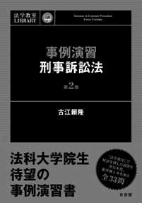
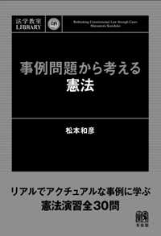
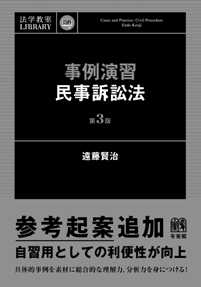
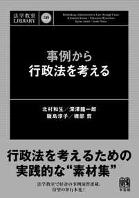
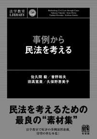
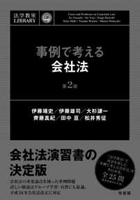

| nodrm | |
| Unknown | |
ご利用にあたって
本電子書籍は，『問題演習 基本七法』（有斐閣，2018 年刊）と，その
もととなった月刊「法学教室」2017 年度（439 号～450 号）の演習欄の設
問部分を抜粋しまとめたものです。
本設問集を利用することで，POINT 欄や解説欄を目に入れることなく，
設問のみと向き合うことができます。設問について十分に考えたうえで
『問題演習 基本七法』や月刊「法学教室」に掲載された解説を読むこと
で学習効果が一層高まります。定期試験など各種試験に向けた自習やゼミ
での検討素材にご活用ください。
なお，月刊「法学教室」（毎月 28 日発売）では，演習を毎号・7 分野掲
載していますので，是非ご利用ください。毎月 21 日ごろに有斐閣ウェブ
サイト（http://www.yuhikaku.co.jp/）において，最新号の演習欄設問部分を
本冊子と同じように公開しています。学習のペースメーカーとして，毎月，
問題を解いて解説を読むことをお薦めします。
また，本冊子の末尾には，月刊「法学教室」の演習欄や講座連載をまと
めた事例演習に関する書籍のご紹介，ならびに，「法学教室」本誌のご紹
介を掲載しています。こちらもご覧いただければ幸いです。
最後に，本設問集ならびに『問題演習 基本七法』や月刊「法学教室」
が，学習の役に立つものとなることを切に願います。設問部分の公開につ
きまして，ご快諾をくださいました先生方に御礼申し上げます。
法学教室編集室
1
MAKI Misaki
page
14
OWAKI Shigeaki
page
39
URABE Hiroyuki
page
61
K ASAHARA Takeaki
page
78
K ATO Shintaro
page
91
SOGO Taro
page
104
MIYOSHI Mikio
憲法 設問一覧
憲法 1（法学教室 439 号）
地方公務員災害補償法（以下「法」とする）が定める遺族補償年金は，
職員の公務上の災害による死亡により被扶養利益を喪失した遺族のうち，
一般的に就労困難で自活可能でないと判断される者に対する填補を目的と
したもので，社会保障的な性質をもつと解されている。受給要件として法
32 条 1 項は，生計維持要件（職員の死亡当時その収入で生計を維持してい
たこと）を定め，妻以外の者にはさらに年齢要件を定め，夫について同項
但書 1 号は，60 歳以上と定めている。
昭和 42 年に制定された法は，専業主婦世帯を想定し，夫死亡の場合，妻
は年齢や障害の有無に関わらず，類型的に生計自立能力のない者として，
年齢要件を設けなかった。しかし，その後，各種統計資料によれば，平成
22 年時点では，専業主婦世帯数と共働き世帯数が逆転している。また日本
型雇用慣行の変容により，男性の非正規雇用率が増加した。さらに母子家
庭にのみ支給されていた児童扶養手当が，平成 22 年 8 月以降，父子家庭に
も支給される改正がなされた。もっとも，依然として，男性と比較し，女
性の就労率の低さ，非正規雇用率の高さ，賃金の低さが指摘されており，
専業主夫も専業主婦に比べ圧倒的に少ない。
X は，地方公務員たる妻 A の収入で生計を維持していたが，A は精神障
害を発症し自殺した。A の死亡は公務上の災害として認定され，X は法に
基づき処分庁 Y に，遺族補償年金の支給を請求した。Y は X の請求に対し，
A の死亡当時 X は 51 歳で，年齢要件を充たしていないとして，平成 23 年
1 月，不支給処分を行った。これに対し，処分を不服とする X は，平成 23
年 10 月，処分の取消訴訟を提起した。
上記事案に含まれる憲法上の問題について論じなさい。
2
憲法 設問一覧
憲法 2（法学教室 440 号）
X は勤務先のある東京に一人で住んでいるが，東京から約 1000km 離れ
た A 県 Y 市の住宅地にある土地・家屋を遺産相続した。家屋は築約 30 年
の木造住宅で，大規模な改修をしなければ賃貸できない状態であった。ま
た更地にすると固定資産税が最大 6 分の 1 となる住宅用地特例が適用され
なくなること，家屋の解体には 100 万円以上費用がかかることから，経済
的余裕のない X は上記家屋を放置した（以下「本件空家」とする）。X は
本件空家の適切な管理を怠ったため，老朽化はさらに進み，基礎の大きな
歪みが外観目視され，また強風による屋根の隣接道路への一部落下が発見
された。
Y 市は台風の通り道のため，住民は空家対策を強く要望した。そこで Y
市は防災の観点から，住民の生命・身体の保護を目的として，空家適切管
理条例を制定した。条例によれば，不使用の常態にある空家のうち，事前
通知を伴う立入調査を経て，各種専門家からなる審査会により「倒壊等，
著しく保安上危険なおそれのある状態」と判断された「特定空家」につき，
市長は所有者に修繕，除却等の必要な措置を行うよう指導，勧告を段階的
に行うことができ，さらに審査会の判断と意見聴取の手続を経て，命令を
行うことができる。命令に従わない場合には，行政代執行を行い，費用を
所有者から徴収しうる。
Y 市長は上記条例の手続に則り，X に本件空家の除却命令を行った。こ
れに対し X は本件条例の違憲性を主張して，違法な命令の取消しを求める
訴訟を提起した。
上記事案に含まれる憲法上の問題について論じなさい。
3
憲法 設問一覧
憲法 3（法学教室 441 号）
X は，Y 市政の適法性の監視を目的として 5 年前に結成された，「Y 市
オンブズマン」を自称する市民団体である。X は Y 市に情報公開請求を積
極的に行い，その内容を構成員の弁護士や会計士が中心となって分析し，
毎年，一般市民向けに報告会を行っている。これまで報告会は，Y 市の管
理する市内の公園で，構成員ほか一般市民が参加し，50 名程度で平穏に行
われてきた。
Y 市では，原発再稼働の是非が市民を二分する大問題となり，X は，そ
れに関し Y 市長の不正が疑われる内部告発情報を入手したため，さらなる
内部告発を Y 市職員に呼びかけるとともに，広く市民に知ってもらうこと
を期待して，今回の報告会は，Y 市庁舎前広場（以下「本件広場」とする）
で平日の 12 時から 13 時まで行う計画をした。
本件広場とは，隣接道路から Y 市庁舎までの空間を指し，そこで集会や
イベントが開催されることもあった。Y 市庁舎は市最大の最寄り駅から徒
歩 5 分のところにあり，隣接道路沿いには，各種公共施設や大規模商業施
設があり，平日の日中でも通行人が非常に多い。
市庁舎は公用財産で，地方自治法 244 条 1 項の住民の利用に供するため
の「公の施設」にあたらず，Y 市は市庁舎につき管理規則を定めており，
本件広場の使用にも上記規則を適用している。上記規則は不許可事由とし
て，「市の業務に支障のおそれがあること」等を定めていた。Y 市は本件
広場の使用につき，年間，申請の約半分の 100 件を許可していた。
X は上記報告会の計画を実行するため，Y 市に対し本件広場の使用許可
を申請した。これに対し Y 市は，「本件申請に係る集会は，本件広場の本
来の設置目的に反する。また見解の分かれる問題につき Y 市が集会を許可
することは，Y 市が主催者側の見解に賛成しているとの外観を呈し，反対
派から抗議を受けるなど，『市の業務に支障のおそれ』があり，不許可事
由に該当する」として，使用不許可決定を行った。そこで X は，上記不許
可決定の取消しおよび許可の義務付けを求めて訴えを提起するとともに，
許可の仮の義務付けを申し立てた。
上記事案に含まれる憲法上の問題について論じなさい。
4
憲法 設問一覧
憲法 4（法学教室 442 号）
ある地方で広域にわたり震度 7 の大地震が起こり，火災が発生するなど
して，死傷者は多数に上った。この地方にある Y 市でも死者数があまりに
多く，自らも被災した地元の葬儀社では，対応が極めて困難な状況にあっ
た。
この状況がメディアにより伝えられると，被災地域周辺の主要な既成宗
教の組織が，宗教・宗派を超えて連携し，葬儀ボランティアの連携組織 A を結成した。A は，カルトや悪徳商法等の問題のある宗教団体との連携は
拒否した。
A は Y 市に葬儀ボランティアを申し入れ，これを受けて Y 市は A と急
ぎ協議し，次のような対応をすることとした。Y 市立体育館等に設置され
た各遺体安置所に，葬儀ボランティアの周知ポスターを掲示し，A の相談
員をおいて，遺族から声がかかった場合に限り相談に応じる。A は遺族の
要望に応じた宗教宗派の宗教者を派遣し，葬儀を行う。
遺族の多くは相談員に依頼し，Y 市職員も見守る中，特に問題なく葬儀
が行われた。
無宗教の住民 X は，Y 市の行為は憲法上問題があると考え，葬儀に関与
した Y 市職員の時間分給与や施設使用料の免除につき，地方自治法 242 条
の 2 にもとづき住民訴訟を提起した。
上記事案に関する憲法上の問題について論じなさい。
5
憲法 設問一覧
憲法 5（法学教室 443 号）
A 県の B 知事はかねてより，「日の丸」・「君が代」に批判的な者を，
愛国心のない「非国民」と公言し，A 県主催の式典等に「日の丸」掲揚・
「君が代」斉唱を新たに導入した。しかし，「君が代」斉唱の際，起立斉
唱しない A 県職員（地方公務員）が少数いたため，式典に特に混乱は生じ
なかったものの，B 知事は不満を募らせていた。そこで B 知事は，式典の
秩序を確保し円滑な進行を図るためとして，A 県主催の式典等での「君が
代」斉唱の際，出席する A 県職員に「日の丸」に向かって起立し斉唱する
ことを義務づける職務命令を出すよう，管理職職員に通達を出した。
B 知事就任前から A 県職員として働いていた X は，上記通達前，入庁式
に現職員として出席したとき，「君が代」斉唱の際に起立斉唱しなかった。
上記通達後，X の上司である管理職 C は X に，入庁式に出席するよう指示
し，上記内容の職務命令を出した。これに対し，X は「君が代」および「日
の丸」の象徴するものは，現憲法秩序の象徴するものと違っており，公務
員として上記職務命令に従うことはできず，通常業務に従事したい旨申し
出た。しかし，上司 C はこれに応じなかった。
X はしぶしぶ入庁式に出席したものの，「君が代」斉唱の際に，起立斉
唱を行わなかった。B 知事は上記職務命令の徹底のため，管理職数人に，
「君が代」斉唱の際，出席職員の口元をチェックするよう指示していた。
そのため，複数の管理職職員により，X が起立斉唱していなかったことが
確認され，X は戒告処分を受けた。これに対し X は戒告処分の取消しを求
めて，訴訟を提起した。
上記事案に含まれる憲法上の問題について論じなさい。
6
憲法 設問一覧
憲法 6（法学教室 444 号）
市民団体に属する X は，私鉄の駅前広場で，無許可で現政権を批判する
ビラを配布していた。そこに，上記駅の管理者から通報を受けた警察官 A が駆けつけ，ビラ配布を中止するよう警告したが，これに従わなかったた
め，中止させようとして X の腕をつかんだ。これに対し，X は A の腕をふ
りきり，それを契機に，A ともみあいになり，A は転倒した。人身事故で
執行猶予期間中の X は，公務執行妨害罪の罰金刑により執行猶予が取り消
され，1 年の懲役に服することになった。
X の服役中，衆議院議員総選挙が実施されたが，欠格事由として受刑者
であることを定める公職選挙法 11 条 1 項 2 号により，X は投票することが
できなかった。そこで X は，精神的苦痛を受けたとして，国家賠償請求訴
訟を提起した。
上記懲役刑の適法性・合憲性を前提として，上記事案に含まれる憲法上
の問題について論じなさい。
7
憲法 設問一覧
憲法 7（法学教室 445 号）
X は公立小学校の教員をしていた 25 歳のとき，駅で盗撮行為を行い，A 県迷惑行為防止条例違反で起訴され，罰金刑に処せられた。この事件は，
地元の公立小学校教員の不祥事ということで，A 県の地方新聞で扱いは小
さいながらも報道され，その新聞社のウェブサイトにも掲載された。
X は上記事件をきっかけに退職し，その後，東京で実業家に転身し成功
を収め，結婚して子どもも生まれた。また上記新聞社のサイトの記事（以
下「上記記事」とする）は，当該新聞社のガイドラインに沿って，一定期
間の経過後，自主的に削除された。しかし，上記記事は，ネットの掲示板
や SNS で複製，転載され，拡散していた。そのため，X の名前と A 県を
検索ワードとしてインターネットで検索すると，上記記事が転載されたサ
イトが，検索結果として示される状況であった。
上記記事掲載から 5 年後，X は仕事の関係者や知人に知られることを思
い悩み，検索エンジンサービスを提供する大手検索事業者 Y に対し，プラ
イバシー侵害を理由に，検索結果の削除を求める仮処分を申し立てた。な
お，X は検索結果が削除され，ほとぼりが冷めたら，地元に帰ってまずは
県議会議員に立候補し，将来は国会議員として国の中枢で活躍したいと密
かに考えていた。
上記事案に含まれる憲法上の問題について論じなさい。
8
憲法 設問一覧
憲法 8（法学教室 446 号）
X は，文部科学省に長年勤務する一般職の国家公務員であるが，管理職
的地位にはない。X は，裁量の余地のない事務的な作業を行っているが，
長年，教育行政を間近に見てきて，現政権が推進する近年の教育行政のあ
り方に疑問をもっていた。そこで，X は全国紙に次のような内容の投書を
実名で行い，掲載された。その内容とは，文部科学省の国家公務員として
自分は裁量の余地のない事務的な作業を行っているが，教育行政を間近に
見てきた者として，教育行政の改革を提案したいとして，いくつかの具体
的な施策を示すものであった。なお，この投書には，国家公務員の守秘義
務に抵触する内容は一切含まれていない。上記投書は，教育行政をよく知
る者の提案として，インターネットなどでも話題になった。
上記投書について知った X の上司 Y は，X が国家公務員法（以下「国公
法」とする）102 条 1 項，人事院規則 14-7 第 6 項 13 号で禁止されている
「政治的行為」を行ったとして，国公法にもとづき戒告処分を行った。こ
れに対し，X は，戒告処分の取消しを求めて訴訟を提起した。
9
憲法 設問一覧
憲法 9（法学教室 447 号）
全国各地の市民団体や弁護士会などは，行政監視の有効な手段として
「国民訴訟」の法制化を求めている。国民訴訟とは，住民訴訟（自治 242
条の 2）の国レベルでの訴訟，すなわち，納税者としての地位にもとづき，
国の違法な公金支出等に対する司法的統制を求める納税者訴訟である。
国有地が市場価格を大幅に下回る価格で譲渡された事件を契機に，世論
の高まりを受け，議員立法として，納税者訴訟を制度化する次の法律が制
定された。
国の各省庁等の公金支出や財産管理等につき重大な違法がある場合，国
民はそれを証する書面を添え，10 名以上の請求をもって，会計検査院（憲
90 条 1 項）に検査および必要な措置を求めることができる。会計検査院は
請求に理由があると認めるときは，各省庁の長等に対し期間を示して必要
な措置を講ずべきことを勧告するとともに，当該勧告の内容を請求者に通
知し，これを公表しなければならない。請求者は，会計検査院の検査結果
もしくは各省庁の長等の措置に不服があるとき，裁判所に訴えを提起する
ことができる。
上記法律の合憲性について論じなさい。
10
憲法 設問一覧
憲法 10（法学教室 448 号）
持続可能性が国際問題であるとともに，各国の国内問題としても議論さ
れている。持続可能性とは，狭義では環境法上の原則に関するもので，ま
た広義では，1992 年のリオデジャネイロでの環境と開発に関する国連会議
での宣言などで示されたように，将来世代のために自然的生活基盤を確保
しつつ，すべての国に適正な開発の機会を保障することであり，環境的生
活基盤の他，経済的生活基盤，社会的生活基盤を長期にわたって確保する
ことを目標とするものである。
社会保障との関係では，少子高齢化により社会保障制度が持続しうるか
が議論されている。現行の社会保障制度のままだと，国家との関係での一
生における利益と負担につき，現世代は利益の方が大きくなる一方，将来
世代は負担の方が大きくなることが予測されるため，世代間公平の問題と
しても議論されている。
こうした状況をふまえ，20XX 年，社会保障持続可能性基本法が成立し
た。その最大の目玉は，持続可能性委員会の設置である。委員は，社会保
障の持続可能性に関する各種の専門家が国会の選任手続により選任され，
独立性を確保するため身分が保障されている。この委員会が従来の諮問機
関と異なる注目すべき点は，社会保障の持続可能性に関する立法につき，
勧告だけでなく，国会に再考を促すため，1 年間の停止効を課す権限をも
っているということである。なお，この権限を行使する際には，再考を促
す理由を専門的知見にもとづき記した書面の公表が義務づけられている。
上記の停止効権限に関する憲法上の問題について論じなさい。
11
憲法 設問一覧
憲法 11（法学教室 449 号）
経済や環境など，かつては内政問題とされた国民生活に深く関わる重要
な問題が，グローバル化の進展等により，国家間の関係も緊密化する中，
条約の規律対象とされ，外政が内政に強い影響を及ぼしうるようになって
きている。こうした状況をふまえ，条約に対する民主的統制を強化すべく，
条約の締結は内閣と国会との協働行為であるとの有力な憲法学説にもとづ
き，20XX 年，ある法律が制定された。
その法律の骨子によれば，第一に，政府の判断によれば国会承認が必要
な「条約」にはあたらないとされる国家間の合意文書についても，両院の
3 分の 1 以上の議決があれば，国会承認を経なければならない。第二に，
条約締結の交渉過程において，内閣は適宜その交渉内容を国会に報告する
義務を負い，国会での議論をふまえて交渉する責務を負う。なお，内閣が
秘密の保持が必要と判断する場合には，上記の国会での報告および議論を，
秘密会として行うことができるが，議事録を作成し，一定期間経過後にこ
れを公開しなければならない。
上記法律に含まれる憲法上の問題について論じなさい。
12
憲法 設問一覧
憲法 12（法学教室 450 号）
近年，諸外国では，同性カップルに婚姻と同等の法的効果を与えるシビ
ルユニオン制度，さらに，同性カップルに婚姻を認める同性婚も法制化さ
れ，アメリカなどでは，同性婚を禁止する州法が違憲と判断されている。
日本でも，自治体において，同性カップルに一定の法的保護を行う動き
がみられ，LGBT の運動が盛んになる中，20XX 年，同性カップルに婚姻
と同等の法的効果を認めるシビルユニオン制度が法定された。しかし，そ
れと同時に，民法が改正され，婚姻の定義として「婚姻は異性間のもので
ある」との規定がおかれた。
X1 と X2 の同性カップルは，異性カップルと同じく婚姻をしたいと考え，
婚姻届を提出したが，受理されなかった。これに対し，X1 と X2 は，精神
的苦痛を受けたとして，国家賠償請求訴訟を提起した。
上記事案に含まれる憲法上の問題について論じなさい（ただし，立法行
為に対する国家賠償請求訴訟の論点は除く。→第 6 回参照）。
13
行政法 設問一覧
行政法 1（法学教室 439 号）
ある都市の郊外に位置する住宅地に居住する会社員 X は，自宅から約
50km 離れた市中心部にある勤務地へ週 5 日通勤している。その交通手段
として A 社の鉄道を 20 年以上にわたり利用しており，今後もそうする見
通しである（X にとってはこれ以外に合理的な時間と費用で通勤する適切
な手段はない）。あるとき A 社は運行コストが上昇していることなどを理
由に，運賃の大幅な値上げを計画し，国土交通大臣に運賃の上限変更にか
かる認可の申請をした。同大臣は法所定の手続を経た上で，申請どおりの
上限変更を認め，鉄道事業法 16 条 1 項に基づく認可（以下，「本件認可」
とする）を行った。これを受けて A 社は運賃の値上げを計画どおりに実施
した。値上げ後の A 社の運賃は他社路線の平均的なキロあたり運賃と比較
して，市街地の地域で約 10％，郊外の地域では約 30％も割高であり，そも
そも高額な上に，距離に比例していないこの運賃に X は強い不満を抱いた。
そこで X は本件認可が違法であるとして，本件認可の 2 か月後に Y（国）
を被告としてその取消しを求める訴訟を提起した。
この場合に被告である Y の立場から，X の訴えを却下すべきであるとの
主張をするための根拠について論じなさい。
【参照条文】鉄道事業法
第 1 条（目的） この法律は，鉄道事業等の運営を適正かつ合理的なものとすること
により，輸送の安全を確保し，鉄道等の利用者の利益を保護するとともに，鉄道事
業等の健全な発達を図り，もつて公共の福祉を増進することを目的とする。
第 16 条（旅客の運賃及び料金） ① 鉄道運送事業者は，旅客の運賃及び国土交通省
令で定める旅客の料金（以下「旅客運賃等」という。）の上限を定め，国土交通大
臣の認可を受けなければならない。これを変更しようとするときも，同様とする。
② 国土交通大臣は，前項の認可をしようとするときは，能率的な経営の下における
適正な原価に適正な利潤を加えたものを超えないものであるかどうかを審査して，
これをしなければならない。
③ 鉄道運送事業者は，第一項の認可を受けた旅客運賃等の上限の範囲内で旅客運賃
等を定め，あらかじめ，その旨を国土交通大臣に届け出なければならない。これを
変更しようとするときも，同様とする。
④ 〔略〕
⑤ 国土交通大臣は，第 3 項の旅客運賃等......が次の各号のいずれかに該当すると認
めるときは，当該鉄道運送事業者に対し，期限を定めてその旅客運賃等......を変更
すべきことを命ずることができる。
15
行政法 設問一覧
一 特定の旅客に対し不当な差別的取扱いをするものであるとき。
二 〔略〕
第 23 条（事業改善の命令） ① 国土交通大臣は，鉄道事業者の事業について輸送の
安全，利用者の利便その他公共の利益を阻害している事実があると認めるときは，
鉄道事業者に対し，次に掲げる事項を命ずることができる。
一 旅客運賃等の上限......を変更すること。〔以下略〕
第 30 条（事業の停止及び許可の取消し） 国土交通大臣は，鉄道事業者が次の各号の
いずれかに該当するときは，期間を定めて事業の停止を命じ，又は許可を取り消す
ことができる。
一 この法律若しくはこの法律に基づく命令若しくはこれらに基づく処分又は許可
若しくは認可に付した条件に違反したとき。〔以下略〕
16
行政法 設問一覧
行政法 2（法学教室 440 号）
A は自己所有の土地において自ら開設する病院の全面建替え（建築）を
しようと考え，Y 市の建築主事より建築基準法 6 条 1 項に基づく確認（い
わゆる建築確認。以下「本件確認」という）を受けた。他方，A の土地に
隣接する場所に以前より居住する X は，A のことを快く思っていなかった。
X は同法 89 条 1 項による表示の看板を見て A が本件確認を得て着工する
ことを知ったが，この時点でそれを違法なものとは考えていなかった。諸
事情により工事は一時中断・遅延したが，本件確認から 1 年後に病院の基
礎部分が完成した。この頃 X は建築法令に詳しい知人からの情報に接する
などした結果，A が建築予定の病院が「高齢者，障害者等の移動等の円滑
化の促進に関する法律」（以下，「バリアフリー法」という）2 条 17 号に
いう特別特定建築物に該当し，かつ政令で定める規模（バリアフリー法施
行令 9 条により 2000m2）以上のものであるにもかかわらず，建築物移動等
円滑化基準として義務づけられるエレベーターの「かご」（人を乗せ昇降
する部分）の寸法要件（バリアフリー法施行令 18 条 2 項 5 号ロ・ハ）を満
たしていないことに偶然に気づいた。バリアフリー法が定める基準を満た
していないならば，同法 14 条 4 項により本件確認は違法となる点に着目し，
X は抗告訴訟によってその効力を否定することを考えた。しかし，出訴期
間を徒過していることから取消訴訟（行政事件訴訟法〔以下「行訴法」と
いう〕3 条 2 項）を諦め，Y を被告として本件確認にかかる，無効確認訴
訟（同条 4 項）を提起した。
この場合において，Y の立場から X の訴えを却下又は棄却すべきとの主
張をするための根拠について論じなさい。ただし，隣人である X の第三者
の原告適格（前回の本演習で論じた）については満たすものとし，また病
院の建築工事が完了することによって，X が本件確認を争う狭義の訴えの
利益が消滅する局面も考慮に入れないものとする。
【参照条文】
建築基準法
第 6 条① 建築主は，......〔一定規模以上の〕建築物を建築しようとする場合......に
おいては，当該工事に着手する前に，その計画が建築基準関係規定（この法律並び
にこれに基づく命令及び条例の規定（以下「建築基準法令の規定」という。）その
他建築物の敷地，構造又は建築設備に関する法律並びにこれに基づく命令及び条例
の規定で政令で定めるものをいう。以下同じ。）に適合するものであることについ
て，確認の申請書を提出して建築主事の確認を受け，確認済証の交付を受けなけれ
17
行政法 設問一覧
ばならない。〔以下略〕
バリアフリー法
第 2 条 一～一五〔略〕
一六 特定建築物 学校，病院，劇場，観覧場，集会場，展示場，百貨店，ホテル，
事務所，共同住宅，老人ホームその他の多数の者が利用する政令で定める建築物
又はその部分をいい，これらに附属する建築物特定施設を含むものとする。
一七 特別特定建築物 不特定かつ多数の者が利用し，又は主として高齢者，障害
者等が利用する特定建築物であって，移動等円滑化が特に必要なものとして政令
で定めるものをいう。
第 14 条① 建築主等は，特別特定建築物の政令で定める規模以上の建築......をしよう
とするときは，当該特別特定建築物......を，移動等円滑化のために必要な建築物特定
施設の構造及び配置に関する政令で定める基準（以下「建築物移動等円滑化基準」と
いう。）に適合させなければならない。②～③ 〔略〕④ 前三項の規定は，建築基
準法第 6 条第 1 項に規定する建築基準関係規定とみなす。
18
行政法 設問一覧
行政法 3（法学教室 441 号）
A 市は同市内にある面積約 9ha の林業試験場の跡地を，都市計画法（以
下，「都計法」とする）11 条 1 項 2 号が定める都市施設の 1 つである公園
として整備する都市計画（以下，「本件計画」とする）の決定を同法 19
条 1 項に基づいて行い，その旨を告示した（同法 20 条 1 項）。次いで A 市の申請を受けて県知事 Y は，本件計画にかかる都市計画公園事業の認可
（以下，「本件認可」とする）を同法 59 条 1 項に基づいて行い，その旨を
告示した（同法 62 条 1 項）。旧林業試験場には大型車両等が出入り可能な
正門がもとからあり，本件計画ではそれを引き続き公園の正門とすること
になっていた。しかしこの正門は幅員約 10m の県道から細い道を通って奥
まったところにあり，接道状況に問題があった。このままでは公園利用者
等が円滑に出入りできないおそれがあることから，広い接続通路を新たに
設置するため，正門と県道とを最短で繋ぐ場所に位置する，私人 X が所有
し，かつ現に居住する約 0.1ha の土地（以下，「民有地」とする）も本件
計画においては公園事業の事業地に含まれていた。他方で，この民有地に
隣接する一帯には正門からは離れているものの，旧林業試験場と県道の両
方に接する，約 0.5ha の国有地（以前は職員宿舎があったが，今は使われ
ていない）が存在するが，こちらは事業地に含まれていない。本件認可に
より，民有地が収用されるおそれが生じたため，X は本件認可の取消しを
求めて出訴した。
X の立場から裁判所に対して，いかなる手法での行政裁量の統制を求め
るべきかについて論じなさい。論述にあたっては，以下の X，Y それぞれ
の主張を踏まえること。
▽X の主な主張：都市施設を整備するなどの際には，国公有地があれば優
先的にそれを利用すべきで，それでは行政目的が達成できないときに限り，
私人の土地を利用することが許されるという「公用負担法の基本理念」が
明文の定めはないものの，財産権保護の観点から導き出されるはずである。
本件認可は都計法各規定に加えて，その理念にも反しており違法である。
▽Y の主な主張：本件計画が民有地を事業地に含めることには以下に掲げ
る合理的な理由があり，それを前提とする本件認可は適法である。
ⅰ 既存の正門を引き続き公園の正門とするのは，旧林業試験場の奇木
等を含む貴重な樹木群を伐採せずに保全するためである。
ⅱ 上記正門の接道状況を改善するため，安全な接続通路を新設するに
は，民有地を公園の事業地に含めるよりほかにない。
ⅲ 上記のような本件計画により，災害時の広域避難場所としても適切
19
行政法 設問一覧
な公園を整備できる。
【参照条文】都市計画法
第 11 条（都市施設） ① ......都市計画に，次に掲げる施設を定めることができる。
〔以下略〕
二 公園，緑地，広場，墓園その他の公共空地
第 13 条（都市計画基準） ① ......都市計画......は，〔各種〕の国土計画〔等〕......
に適合するとともに，当該都市の特質を考慮して，次に掲げるところに従って，土地
利用，都市施設の整備及び市街地開発事業に関する事項で当該都市の健全な発展と秩
序ある整備を図るため必要なものを，一体的かつ総合的に定めなければならない。こ
の場合においては，当該都市における自然的環境の整備又は保全に配慮しなければな
らない。〔以下略〕
十一 都市施設は，土地利用，交通等の現状及び将来の見通しを勘案して，適切な
規模で必要な位置に配置することにより，円滑な都市活動を確保し，良好な都市
環境を保持するように定めること。〔以下略〕
20
行政法 設問一覧
行政法 4（法学教室 442 号）
森林地帯を域内に抱える Y 市においては，地下水の過剰採取による将来
的な水源の枯渇を防止するために，地下水採取を許可制とする地下水保全
条例を制定した（以下，「保全条例」という。なおこの条例は工業用水法，
ビル用水法，温泉法などの法律とは制度目的を異にする独自のものであ
る）。Y 市内には飲料メーカーなど地下水を採取する事業者が以前より存
在する。保全条例の施行にあたり，それらのうち水源の枯渇防止活動など
に積極的に取り組む者には可能な限り採取の許可をする一方，そうでない
者には許可を出さない方針であった。この方針を具体化するために，Y 市
行政手続条例（以下，「手続条例」という）5 条 1 項により審査基準を設
定することとなった。しかし，その具体的な基準設定に時間を要したため，
許可申請の開始時に詳細な基準等の閲覧用書面を窓口に配置することが間
に合わず，結果として審査基準を公にしていなかった。
X は以前より地下水を採取して食品製造業を営んでいた。その工場は保
全条例 6 条 1 項で指定された指定地域内にあり，工場敷地内において揚水
機の吐出口の断面積 19.6cm2 の揚水設備を用いて地下水を採取してきた。
今後も採取を継続するため，保全条例 10 条 1 項に基づく許可を得ようと独
力で申請の準備をした。その際，窓口において「申請書作成などのため，
許可の具体的な基準となるものを見せてほしい」と申し出たが，対応した
職員 A から「現時点で見せられるものはない」と告げられた。X は手続条
例 5 条 3 項の定めを知らなかったため，その時点で A の対応を問題視しな
かったが 2 週間後，独力で作成した申請書と必要書類とを提出した。その
後 Y 市長は審査を経て X に対して不許可処分（以下，「本件処分」という）
を行った。その際に理由として，審査基準に定める周辺地域の地下水位の
著しい低下を防止する措置が不十分であることが示されていた。この点に
つき X は必要書類の中の「揚水設備の構造図」を自ら作成するのではなく，
同設備の製造業者に依頼して設備の特性が詳細に分かる正確なものを入手
し，それを提出していれば，このような結論にならなかったはずであると
考えた。もっとも X が所有する揚水設備の基幹部分は約 30 年前に作られ
たもので，審査基準が定める周辺地域の地下水位の著しい低下を防止する
ための技術的仕様を実質的に満たさないものであった。しかし X は申請前
に審査基準さえ見ていれば，適正な必要書類等を準備することで，許可を
得られたはずであると信じ，本件処分の取消しを求めて訴訟提起した。
この場合に Y・X それぞれの立場から，手続的瑕疵の点につきいかなる
主張をなしうるか，論じなさい。
21
行政法 設問一覧
【参照条文】Y 市地下水保全条例
第 1 条（目的） この条例は，地下水が市民共有の資源であることに鑑み，地下水の
枯渇を防止するために，地下水の適正な採取及び地下水の涵養に関し必要な措置を
講ずること等により，地下水の総合的な保全を図り，もって市民の生活環境の保全
に資することを目的とする。
第 6 条（指定地域） ① 市長は，地下水の採取に伴う重大な障害が生じ，又は生ず
るおそれのある地域を指定地域として指定する。
第 10 条（地下水採取の許可） ① 次に掲げる行為をしようとする者は，揚水設備ご
とに，あらかじめ，市長の許可を受けなければならない。
一 指定地域において揚水機の吐出口の断面積（吐出口が 2 以上あるときは，その
断面積の合計をいう。）が 19 平方センチメートルを超える揚水設備により地下水
を採取すること。
22
行政法 設問一覧
行政法 5（法学教室 443 号）
歴史的景観を観光資源として活用する Y 市は，都市計画区域内にあり，
城下町の風情を残す同市甲地区について，都市計画法 8 条 1 項 6 号に基づ
き「景観地区」に指定するための都市計画の変更をすることとした（変更
後の計画を以下，「本件計画」という）。景観地区とは景観法 61 条 1 項に
よるものであり，同地区に指定されると新たに策定される「建築物の形態
意匠の制限」に関する基準（以下，「ガイドライン」という）にしたがい
外壁の色などについて制限が課される。そして建築物の新築などに際し，
建築基準法に基づく建築確認とは別に，市町村長の認定（景観 63 条 1 項）
を得ることが必要となる（違反者には景観法 102 条 2 号により罰則も予定
されている）。
X は甲地区において自己所有の建物で飲食店を営む者であり，本件計画
についての住民説明会や計画原案の公告・縦覧を通じて，同地区で近い将
来，建築規制が厳しくなることを知った。そこで X は集客力アップ等を目
的に，自らの飲食店を現在の和風の落ち着いた外観のものから，ガイドラ
インが許容しない目立つものへと建て替えることを決心した。X は Y 市の
市政運営にかねてより不満を持っており，本件計画にも賛同できないこと
から，急いで建て替えの準備を始めた。Y 市の都市計画審議会の答申など
法定の手続を残すものの，約 5 か月後に本件計画への変更決定が告示され
る見通しとなった頃，X は Y 市に建築確認の申請（以下，「本件申請」と
いう）を行った。同市の担当者 A は X に対して本件計画の内容や意義につ
いて数度にわたり丁寧に説明し，本件申請内容にかかる形態意匠の変更を
求める行政指導を行った。それに対して X は，都市計画法 20 条 3 項に照
らして本件計画はいまだ効力を有していないため，本件申請どおりの建築
確認が直ちに認められるはずだと主張し，A と X の話し合いは平行線をた
どった。
変更決定の告示まで 1 か月半となったある日，X は行政指導に従えない
ことを A に書面で通知すると同時に，県建築審査会に対して審査請求を行
った。しかし審理に時間を要し，建築確認が得られないまま，本件計画は
効力を有するに至った。結局 X は本件申請どおりの建築ができなくなった
として，A による行政指導は違法であることを理由に，Y 市に対して国家
賠償訴訟を提起した。この場合，X・Y それぞれの立場からなしうる主張
について，行政指導の限界に関する論点を中心に，論述しなさい。なお本
件計画やガイドラインの内容に憲法・法律との抵触はないこと，本件申請
の内容に申請時点で建築関係法令に違反する点はなかったことを前提とす
23
行政法 設問一覧
ること。
【参照条文】景観法
第 61 条① 市町村は，都市計画区域......内の土地の区域については，市街地の良好な
景観の形成を図るため，都市計画に，景観地区を定めることができる。
第 62 条 景観地区内の建築物の形態意匠は，都市計画に定められた建築物の形態意匠
の制限に適合するものでなければならない。〔以下略〕
第 63 条① 景観地区内において建築物の建築等をしようとする者は，あらかじめ，そ
の計画が，前条の規定に適合するものであることについて，申請書を提出して市町
村長の認定を受けなければならない。〔以下略〕
第 102 条 次の各号のいずれかに該当する者は，50 万円以下の罰金に処する。
二 第 63 条第 1 項の規定に違反して，申請書を提出せず，又は虚偽の申請書を提出し
た者
24
行政法 設問一覧
行政法 6（法学教室 444 号）
輸入雑貨店経営者 X は A 国内で製造・販売されている袋入りのキャンデ
ィ 500 袋，合計約 25kg（以下，「本件食品」という）を販売目的で同国か
ら輸入するため，検疫所長 Y に対して食品衛生法 27 条にしたがい，食品
等輸入届出書を提出した（同法に定める厚生労働大臣の権限は同法 70 条を
根拠に検疫所長に委任されている。また食品等「輸入届出書」の詳細は同
法施行規則 32 条に定めがある）。これに対して Y は同法 26 条 3 項に基づ
く命令を発した上で実施した登録検査機関による検査の結果から，本件食
品に着色料として含まれる添加物 B が，指定添加物（同法施行規則 12 条
により同規則「別表第一」にリスト化されている）や，既存添加物（平成
8 年 4 月 16 日厚生省告示第 120 号に基づき同様にリスト化されている）な
ど，同法 10 条に基づき日本国内で販売等が認められている添加物のいずれ
にもあたらないものであると判断した。そして「......本件食品は食品衛生
法 10 条に違反するので積戻し又は廃棄されたい。」との記載がある通知書
（以下，「本件通知」という）を X に送付した。なお，このような通知は
食品衛生法には定めがなく，厚生労働省の内部規範である「輸入食品等監
視指導業務基準」（以下，「本件基準」という）によるものである。また
本件基準によれば同法に違反しない食品等に対しては「届出済証」が交付
されることになっている。
X は，A 国では以前より広く販売されている本件食品が有害であるはず
はなく，食品衛生法上も適法なものであると確信している。そこで X は，
法令の直接的根拠がない本件通知に従う義務はないと考えた。しかし本件
通知があるためにこの先，関税法 67 条に基づく税関長の輸入許可を申請し
ても，それを得ることができないと考え，X は様々な訴訟類型を検討した
結果，本件通知を処分と見て，その取消しを求める訴えを提起することに
した。この場合，本案前の争点として X の立場から，本件通知に処分性が
あるとの主張につき，参照条文に則して論じなさい。
【参照条文】
食品衛生法
第 10 条 人の健康を損なうおそれのない場合として厚生労働大臣が薬事・食品衛生審
議会の意見を聴いて定める場合を除いては，添加物......並びにこれを含む製剤及び
食品は，これを販売し，又は販売の用に供するために，製造し，輸入し，加工し，
使用し，貯蔵し，若しくは陳列してはならない。
第 26 条③ 厚生労働大臣は，食品衛生上の危害の発生を防止するため必要があると認
25
行政法 設問一覧
めるときは，生産地の事情その他の事情からみて......第 10 条に規定する食品に該当
するおそれがあると認められる食品，添加物，......を輸入する者に対し，当該食品，
添加物，......について，厚生労働大臣又は登録検査機関の行う検査を受けるべきこ
とを命ずることができる。
第 27 条 販売の用に供し，又は営業上使用する食品，添加物，器具又は容器包装を輸
入しようとする者は，厚生労働省令で定めるところにより，その都度厚生労働大臣
に届け出なければならない。
第 70 条 この法律に規定する厚生労働大臣の権限は，厚生労働省令で定めるところに
より，検疫所長に委任することができる。
食品衛生法施行規則
第 12 条 法第 10 条の規定により人の健康を損なうおそれのない添加物を別表第一の
とおりとする。
第 32 条 法第 27 条......に規定する者......は，......輸入届出書に次に掲げる事項......
を記載して，貨物の到着予定日の 7 日前の日以降......に，......検疫所の長に提出し
なければならない。〔略〕
一 氏名及び住所〔以下略〕
関税法
第 67 条 貨物を輸出し，又は輸入しようとする者は，政令で定めるところにより，当
該貨物の品名並びに数量及び価格......その他必要な事項を税関長に申告し，貨物に
つき必要な検査を経て，その許可を受けなければならない。
第 70 条① 他の法令の規定により輸出又は輸入に関して許可，承認その他の行政機関
の処分又はこれに準ずるもの......を必要とする貨物については，輸出申告又は輸入
申告の際，当該許可，承認等を受けている旨を税関に証明しなければならない。
② 他の法令の規定により輸出又は輸入に関して検査又は条件の具備を必要とする貨
物については，第 67 条（輸出又は輸入の許可）の検査その他輸出申告又は輸入申告
に係る税関の審査の際，当該法令の規定による検査の完了又は条件の具備を税関に
証明し，その確認を受けなければならない。
③ 第 1 項の証明がされず，又は前項の確認を受けられない貨物については，輸出又
は輸入を許可しない。
26
行政法 設問一覧
行政法 7（法学教室 445 号）
総合レジャー企業 A は，Y 市内にある自己所有地（以下，「本件土地」
という）において，床面積約 2500 ㎡のボーリング場の建築を計画した。本
件土地が位置する一帯はマンションが多く立地する交通の便のよい地域で
あるが，Y 市の都市計画においては 12 種類の用途地域のうち「第二種中高
層住居専用地域」（以下，「本件用途地域」という）に指定されていた。
本件用途地域はマンションなどの中高層住宅の良好な環境を守るためのも
のであり，建築基準法 48 条 4 項および同法別表第二（に）項により，ボー
リング場をはじめとする運動施設などについては，建築してはならないと
されている。そこで A はボーリング場建築を実現するための第一段階とし
て，同法 48 条 4 項ただし書の許可申請をした。そして計画するボーリング
場が本件土地周辺の良好な住居の環境を害さないものであることを説明
し，同条 14 項が定める所定の手続を経て，特定行政庁である Y 市長によ
る許可（以下，「本件先行処分」という）を得た。次いで A は第二段階と
して，建築確認の申請を行い，建築基準関係規定が定める所定の手続を経
て，Y 市の建築主事より同法 6 条 1 項に基づく建築確認（以下，「本件後
行処分」という）を受けた。
本件土地の周辺住民 X らは，Y 市長の判断には到底納得できないとして，
建築工事開始からまもなく Y 市に対して取消訴訟を起こすことを考えた。
ところがこのとき既に本件先行処分からは 1 年半を経ており，行政事件訴
訟法 14 条 2 項の出訴期間を徒過していた。そこで違法な本件先行処分を前
提にしてなされた，本件後行処分は違法になると主張して，本件後行処分
の取消しを求める訴えを提起した（本件後行処分については出訴期間内で
あった）。この場合において本件先行処分が違法であったと仮定して，Y
の立場から本件後行処分は違法とはなりえないこと，また X の立場から本
件後行処分が違法であること，それぞれの主張の論拠について論じなさい。
なお本件後行処分について固有の，すなわち本件先行処分とは無関係の違
法性はないことを前提とすること。
【参照条文】建築基準法
第 6 条① 建築主は，......〔一定規模以上の〕建築物を建築しようとする場合......に
おいては，当該工事に着手する前に，その計画が建築基準関係規定（この法律並び
にこれに基づく命令及び条例の規定......）に適合するものであることについて，確
認の申請書を提出して建築主事の確認を受け，確認済証の交付を受けなければなら
ない。〔以下略〕
27
行政法 設問一覧
第 48 条④ 第二種中高層住居専用地域内においては，別表第二（に）項に掲げる建築
物は，建築してはならない。ただし，特定行政庁が第二種中高層住居専用地域にお
ける良好な住居の環境を害するおそれがないと認め，又は公益上やむを得ないと認
めて許可した場合においては，この限りでない。
⑭ 特定行政庁は，前各項のただし書の規定による許可をする場合においては，あら
かじめ，その許可に利害関係を有する者の出頭を求めて公開による意見の聴取を行
い，かつ，建築審査会の同意を得なければならない。〔略〕
⑮ 特定行政庁は，前項の規定による意見の聴取を行う場合においては，その許可し
ようとする建築物の建築の計画並びに意見の聴取の期日及び場所を期日の三日前ま
でに公告しなければならない。
別表第二（に）第二種中高層住居専用地域内に建築してはならない建築物
一 〔略〕
二 工場（政令で定めるものを除く。）
三 ボーリング場，スケート場，水泳場その他これらに類する政令で定める運動施
設
四 ホテル又は旅館
五 自動車教習所 〔以下略〕
28
行政法 設問一覧
行政法 8（法学教室 446 号）
航空法施行規則で「混雑空港」に指定されている A 空港の発着枠を有す
る航空会社 B は，乗務員などの人手不足が理由で減便を余儀なくされ，同
空港における 1 便（1 往復）分の発着枠を国に返上した。これを受けて国
土交通大臣 Y はこの発着枠を別の航空会社に再配分すべく，1 社に対して
航空法 107 条の 3 第 1 項に基づく許可を出す方針を示した。A 空港では今
後も多くの需要が見込まれることから，いずれも同空港の発着枠を有する
X，C，D の航空会社 3 社が許可申請をした。法令に基づく手続を経た審査
の結果，Y は C に対して許可処分（以下，「本件許可処分」という）をす
るとともに，X には不許可処分（以下，「本件拒否処分」という），そし
て D に対しても同じく不許可処分をした。X は同条 3 項の許可基準（特に
同項 2 号）に照らし，許可処分を受けるべきは自らであると確信していた
ため，この結果に対して不満を募らせた。その主な理由の 1 つとして，C，
D と比して X は幹線以外の収益性の低い地方路線の維持に特に尽力してお
り，そのことが同号にいう「多様な輸送網の形成」に貢献しているとの強
い自負があった。
C は本件許可処分を受けて，既存路線の増便に向けた準備を進めていた
が，X はあえて取消訴訟によって争うことを決めた（ここでは審査請求な
ど訴訟以外の争訟手段については考慮しない）。その際，X に対する本件
拒否処分の取消しを求める訴え（α）と，C に対する本件許可処分の取消
しを求める訴え（β）とが考えられる。X は様々な観点から検討を行った
末，自社の申請内容（運航計画）の優位性に重点を置いた主張をしたいと
考え，αを選択した。しかしαに対しては，Y（あるいは行政事件訴訟法
22 条 1 項により訴訟参加が認められる可能性が高い C）から，「有効な本
件許可処分により発着枠が既に C に配分された以上，αは（狭義の）訴え
の利益を欠く」との本案前の主張がなされた。X の立
場から，取消判決の拘束力（行訴 33 条）に着目して Y の見解に反論しな
さい。
【参照条文】航空法
第 107 条の 2① 国内定期航空運送事業を経営しようとする本邦航空運送事業者は，運
航計画（路線ごとの使用空港等，運航回数，発着日時その他の国土交通省令で定め
る事項を記載した計画をいう。以下同じ。）を定め，あらかじめ，国土交通大臣に
届け出なければならない。〔以下略〕
第 107 条の 3① 混雑空港（当該空港の使用状況に照らして，航空機の運航の安全を確
29
行政法 設問一覧
保するため，当該空港における 1 日又は一定時間当たりの離陸又は着陸の回数を制
限する必要があるものとして国土交通省令で指定する空港をいう。以下同じ。）を
使用して国内定期航空運送事業を経営しようとする本邦航空運送事業者は，混雑空
港ごとに，当該混雑空港を使用して運航を行うことについて国土交通大臣の許可を
受けなければならない。
② 前項の許可を受けようとする本邦航空運送事業者は，当該混雑空港を使用空港と
する路線に係る運航計画を記載した申請書を国土交通大臣に提出しなければならな
い。
③ 国土交通大臣は，第 1 項の許可をしようとするときは，次の基準によって，これ
をしなければならない。
一 運航計画が航空機の運航の安全上適切なものであること。
二 競争の促進，多様な輸送網の形成等を通じて利用者の利便に適合する輸送サー
ビスを提供するものであること等当該混雑空港を適切かつ合理的に使用するもの
であること。
④ 国土交通大臣は，第 1 項の許可をしようとするときは，同項の本邦航空運送事業
者の当該混雑空港の従前の使用状況に配慮してこれをしなければならない。〔以下
略〕
30
行政法 設問一覧
行政法 9（法学教室 447 号）
公共下水道管理者である Y 市は，下水道法 4 条 1 項に基づく同市の下水
道事業計画の内容を，県知事との協議など所定の手続を経て変更し（同法
6 項），約 7 年ぶりに新たな事業計画（以下，「本件計画」という）を策
定した。本件計画により，Y 市は着実に下水道が利用できる区域を拡大し
つつあることを同市内外にアピールしていた。しかし Y 市内に居住する X
らは，かねてより自分たちが住む同市郊外の A 地区においては，遅々とし
て下水道整備が進まないことに不満を抱いてきた。A 地区に隣接し，同じ
く Y 市郊外に位置する B 地区では約 20 年前に下水道が整備され，供用さ
れている。Y 市による下水道整備の長期的展望を示す「全体計画」（この
計画に法令上の根拠はない）では約 35 年前から A 地区も将来下水道の整
備が進められる区域に含まれていた。現在稼働中の C 下水処理場との位置
関係や，同処理場の処理能力などに鑑みて，B 地区と同様に A 地区でも早
期の整備が可能なはずであると X らは考えてきた。そこで X らは約 10 年
前から Y 市に陳情を繰り返してきたものの，Y 市は予算の制約などを理由
に消極姿勢を貫き，本件計画でも整備の対象となる予定処理区域に組み入
れられなかった。この結果に落胆した X らは，陳情などの手法の限界を痛
感し，訴訟によってこの状況を打開したいと考えるに至った。X らの主張
は，①下水道が整備された「住みよいまち」として A 地区のイメージアッ
プを図りたい，②A 地区の地価は，B 地区など下水道が整備された地域に
比べて低いままであり，不公平である（A 地区・B 地区はともに市街化区
域内にあり，土地及び家屋の所有者に対して，都市計画事業に要する費用
に充てるための都市計画税〔地税 702 条 1 項〕が課されている），③近年
は集中豪雨の頻発により特に A 地区においては，B 地区では起きない床下
浸水などの被害がしばしば発生しており，今後さらに洪水等により住民の
生命・財産が脅かされるおそれがある，というものである（ちなみに Y 市
では生活排水用の汚水管と，雨水用の雨水管とを，別々の管で一体的に構
築する「分流式下水道」を整備する方式を採っている）。
X らは公法上の当事者訴訟としての確認訴訟（行訴 4 条後段）を選択し，
Y 市を被告として「A 地区に居住する Y 市民である X らが下水道を利用で
きる地位（又は権利）を有すること」の確認を求めることとした。その場
合，この訴えを適法なものとして提起するために，X らはどのような主張
をすべきか。特に「確認の利益」を基礎づけるためのポイントについて論
じなさい。
31
行政法 設問一覧
【参照条文】下水道法
第 3 条① 公共下水道の設置，改築，修繕，維持その他の管理は，市町村が行うもの
とする。
② 〔略〕
第 4 条① 前条の規定により公共下水道を管理する者（以下「公共下水道管理者」と
いう。）は，公共下水道を設置しようとするときは，あらかじめ，政令で定めると
ころにより，事業計画を定めなければならない。
② 公共下水道管理者は，前項の規定により事業計画を定めようとするときは，あら
かじめ，政令で定めるところにより，都道府県知事（都道府県が設置する公共下水
道の事業計画その他政令で定める事業計画にあっては，国土交通大臣）に協議しな
ければならない。
③～⑤ 〔略〕
⑥ 前各項の規定は，公共下水道の事業計画の変更（政令で定める軽微な変更を除く。）
について準用する。
32
行政法 設問一覧
行政法 10（法学教室 448 号）
Y1 市では市立小学校で縮小傾向にある部活動を補完するための，地域に
おける児童のためのスポーツの場の提供と，NPO 法人等によるボランティ
ア活動の振興とを図る目的で，児童スポーツ振興ボランティア要綱（以下，
「本件要綱」という）を制定している。本件要綱が定める事業では，種目
別・地域別に合計 20 のスポーツ教室（以下，「教室」という）が，NPO
法人や社会福祉法人などの受託団体に委託して運営されている。ただしこ
れらの教室はいずれも本件要綱制定前から同市内に拠点を置く NPO 法人
等が独自に開催してきたもので，多くは各法人等のボランティア指導員に
よって担われてきている。本件要綱制定後も Y1 市から各受託団体には運営
にかかる事務経費として一律年間 5 万円が支給されるものの，指導員の人
件費などその他の経費についての補助は行われていない。Y1 市は公式ウェ
ブサイトや広報誌を通じて，各教室に児童を参加させたい市民を募り，教
室の定員などを考慮して形式的に審査した上で参加の適否を判断し，適当
とした場合には参加児童について，当該教室を運営する受託団体に通知す
ることとされている。
X1 は本件要綱 8 条による申請をし，同 3 条の受託団体である A 大学体育
会体操部の後援会（Y2）が運営する体操教室（以下，「本件教室」という）
に，子 X2 を半年前から参加させていた。ある日 X2 は A 大学体育館で開催
された本件教室にて，A 大学学生である指導員（Y3 ら）の指導の下で行わ
れた跳び箱を使った運動の際に負傷し，全治 1 か月の診断を受けた。この
事故の 2 か月前から Y2 の指導員となったばかりで，不慣れな印象を与える
Y3 による指導の不備が原因であると考えた X1 は，本件教室の他の参加児
童の保護者らに独力で聞き取りをした。その結果，X2 が負傷した直近 1 か
月以内で，Y3 が指導する本件教室の X2 が参加する以外の開催曜日に，参
加者が全治 1 週間程度の負傷をする事故が相次いで 2 件起きており，本件
要綱 15 条により Y1 にもそのことが報告されていたことを知るに至った。
X1 は Y2，Y3 に資力がないことなどを考慮し，Y1 に対して国家賠償法（以
下，「国賠法」という）1 条 1 項に基づく賠償請求をすることに決めた。
この場合に，いかなる主張をして Y1 の賠償責任を構成すべきかについて論
じなさい。
【参照条文】Y1 市児童スポーツ振興ボランティア要綱
第 1 条 この要綱は，児童等に対しスポーツに親しむ場を提供するとともに，市民等
によって担われる各種の団体によるボランティア活動を振興することを目的とする
「児童スポーツ振興ボランティア事業」（以下「事業」という。）の実施について
33
行政法 設問一覧
必要な事項を定めるものとする。
第 3 条 事業の実施主体は，Y1 市とする。ただし市は，事業の一部を適切な事業運営
が確保できると認められる特定非営利活動法人又はその他の団体（以下「受託団体」
という。）に委託することができる。
第 6 条 事業によるスポーツ教室の指導員は，次の各号のいずれかに該当する者で，
受託団体の指導員名簿に登録されている者とする。
一 受託団体が実施する講習会を修了した者〔以下略〕
第 8 条 事業によるスポーツ教室に参加を希望する児童の保護者は，参加登録申請書
を市長に提出しなければならない。
第 9 条① 市長は，前条の申請があった場合には，速やかに必要な事項を審査し，登
録の適否を決定し，参加決定・否決定通知書により通知する。
② 市長は，前項の規定により登録の決定をしたときは，参加開始通知書により受託
団体に通知するものとする。
第 15 条 指導員は，スポーツ教室において，参加者及びその家族に傷害若しくは損害
を負わせた場合又は指導員自身が傷害を負った場合には，速やかに受託団体及び市
長に連絡しなければならない。
第 17 条 市長は，事業の適正な実施を図るため，受託団体の活動内容を定期的に調査
し，必要な措置を講じるものとする。
34
行政法 設問一覧
行政法 11（法学教室 449 号）
自ら創業した 3 つのホテルを経営する 76 歳の X はある日，自家用車を
急いで運転していた。見通しのよい広い交差点に差しかかったとき，青信
号でかつ歩行者等がいないことを確認できたため，徐行せずに左折した（以
下，「本件行為」という）。日頃の安全運転とは異なり，X 自身もやや危
険な左折方法であると認識した次の瞬間，パトロールカーのサイレンの音
が聞こえ，警察官に停車を命じられた。本件行為が道路交通法（以下，
「法」
という）34 条 1 項違反（交差点右左折方法違反）であると告げられ，交通
反則告知書（通称：青切符）を交付された。X は反省し，翌々日には反則
金 4000 円を納付した。しかしその後，X にとっては予想外の書面が送付さ
れてきた。その内容は，75 歳以上の免許保有者について，認知機能が低下
した場合に行われやすいものとして道路交通法施行令（以下，「令」とい
う）37 条の 6 の 3 が定める 18 種類の行為基準に，本件行為が該当するも
のであったため，臨時認知機能検査（法 101 条の 7 第 1 項）を受検すべき
ことを命じるものであった。X は本件行為が法違反であることには納得し
ていたが，このような軽微な交通違反によって，自分が認知症の可能性が
あるとされたことに強い憤りを感じた。現役経営者としての矜恃から，納
得しないまま受検して投げやりな対応をしたために，「認知症のおそれが
ある」と判定され，1 か月後に医師の診断を伴う臨時適性検査（法 102 条 3
項）を受けることとなった。この臨時適性検査を受けるとき，偶然にもホ
テル経営が創業以来の危機的状況に陥り，X は極度の心身疲労状態にあっ
た。そのため検査の結果「認知症である」と診断された。この検査は日頃
から同検査を行っている Y 県の公務員である医師により，通常の手順を経
て慎重に行われた。この結果を受けて Y 県公安委員会により免許取消処分
（法 103 条 1 項 1 号の 2）（以下，「本件処分」という）がなされるに至
った。ところが X の認知機能の低下は，本件処分直後に経営危機を切り抜
けたことで程なく解消した。X は少なくとも令 38 条 1 項 2 号該当により免
許の停止とすべきであり，本件処分は絶対に受け入れられないと考えた。
本件処分の 2 か月後，X は Y 県を被告として本件処分の取消しと国家賠
償法（以下，「国賠法」という）1 条 1 項に基づく損害賠償とを求めて訴
え提起した（なお，本問において審査請求については考えないものとする）。
結果的に X の認知機能の低下は，臨時適性検査を受検した前後 2 週間程度
だけの一時的なものであった。そのことから本件処分は取り消しうべき違
法なものであることを前提とする。しかし，損害賠償の必要はないとの Y
県の立場から，国賠法 1 条による賠償責任を否定するための主張について
35
行政法 設問一覧
論じなさい。
【参照条文】道路交通法
第 34 条① 車両は，左折するときは，あらかじめその前からできる限り道路の左側端
に寄り，かつ，できる限り道路の左側端に沿つて〔略〕徐行しなければならない。
第 101 条の 7① 公安委員会は，75 歳以上の者（免許を現に受けている者に限る。）
が，自動車等の運転に関しこの法律〔略〕の規定〔略〕に違反する行為のうち認知
機能が低下した場合に行われやすいものとして政令で定める行為をしたときは，
〔略〕その者に対し，臨時に認知機能検査を行うものとする。
② 公安委員会は，前項の規定により認知機能検査を行おうとするときは，内閣府令
で定めるところにより，認知機能検査を行う旨を当該認知機能検査に係る者に書面
で通知しなければならない。
第 103 条① 免許〔略〕を受けた者が次の各号のいずれかに該当することとなったと
きは，〔略〕公安委員会は，〔略〕その者の免許を取り消し，又は 6 月を超えない
範囲内で期間を定めて免許の効力を停止することができる。〔以下略〕
一 〔略〕
一の二 認知症であることが判明したとき。
〔以下略〕
道路交通法施行令
第 37 条の 6 の 3 法第 101 条の 7 第 1 項の政令で定める行為は，自動車等の運転に関
し行われた次に掲げる行為とする。
一～六 〔略〕
七 法第 34 条（左折又は右折）第 1 項，第 2 項，第 4 項又は第 5 項の規定に違反す
る行為〔以下略〕
第 38 条① 免許を受けた者が法第 103 条第 1 項〔略〕第 1 号の 2 に該当することとな
った場合についての同項の政令で定める基準は，次に掲げるとおりとする。
一 〔略〕
二 6 月以内に法第 103 条第 1 項〔略〕第 1 号の 2 に規定する認知症である者に該当
しないこととなる見込みがある場合には，免許の効力を停止するものとする。
36
行政法 設問一覧
行政法 12（法学教室 450 号）
国道甲号線（以下，「本件国道」という）は，供用開始当初から比較的
交通量の多い道路であり，その設置者は国（Y1）に帰属する国土交通大臣
である。しかし本件国道は道路法（以下，「法」という）13 条 1 項にいう
「指定区間」外の国道であり，その管理者は乙県（Y2）である。本件国道
沿いの丙地区は住宅街である。2 年前に乙県内で発生した大規模な地震に
より，丙地区では本件国道の一部が損壊し，通行止めとなった。その後 Y2
は復旧工事を行い，地震の 1 か月後には通行に支障がない状態となり，供
用が再開された（この復旧工事の費用は公共土木施設災害復旧事業費国庫
負担法〔以下，「国庫負担法」という〕の適用により，のちに Y1 が 3 分の
2 を負担した）。ところがこの復旧工事後から，丙地区内で本件国道の道
路端から 20m のところにある木造 2 階建て住宅に居住している X は，本件
国道を通行する車両によって発せられる振動（振動規制法 2 条 4 項にいう
「道路交通振動」）に昼夜を通じて悩まされるようになり，遂には体調不
良を訴えるに至った。自宅には被害がなかったことから，X は復旧工事に
かかる何らかの工法の問題により，振動が広範囲に伝わるようになったと
考え，Y2 に対して再工事や，迂回路へ車両を誘導するよう数度にわたって
申し入れた。しかし Y2 は，工法に問題はなく，また現に通行に何ら支障が
ない丙地区の本件国道を規制する必要性はないとして，X の要請を拒んで
きた。そこで X は，国家賠償法（以下，「国賠法」という）に基づく損害
賠償を求めて訴えの提起をすることとした。
⑴ Y2 に対して国賠法 1 条に基づく請求をするための主張について論じな
さい。
⑵ Y2 に対して国賠法 2 条に基づく請求をするための主張について論じな
さい。
⑶ Y1 に対して国賠法に基づく賠償を請求するための主張について論じ
なさい。
【参照条文】道路法
第 12 条 国道の新設又は改築は，国土交通大臣が行う。〔以下略〕
第 13 条① 前条に規定するものを除くほか，国道の維持，修繕，......災害復旧事業（以
下「災害復旧」という。）その他の管理は，政令で指定する区間（以下「指定区間」
という。）内については国土交通大臣が行い，その他の部分については都道府県が
その路線の当該都道府県の区域内に存する部分について行う。
〔以下略〕
第 49 条 道路の管理に関する費用は，この法律及び公共土木施設災害復旧事業費国庫
37
行政法 設問一覧
負担法並びに他の法律に特別の規定がある場合を除くほか，当該道路の道路管理者
の負担とする。
公共土木施設災害復旧事業費国庫負担法
第 3 条 国は，法令により地方公共団体......又はその機関の維持管理に属する次に掲
げる施設のうち政令で定める公共土木施設に関する災害の災害復旧事業で，当該地
方公共団体又はその機関が施行するものについては，その事業費の一部を負担する。
一～六 〔略〕
七 道路
〔以下略〕
第 4 条① 前条の規定により地方公共団体に対し国が費用の一部を負担する場合にお
ける当該災害復旧事業費に対する国の負担率は，......災害復旧事業費の総額を〔以
下の〕各号に定める額に区分して逓次に当該各号に定める率を乗じて算定した額の
当該災害復旧事業費の総額に対する率による。〔以下略〕
一 当該地方公共団体の当該年度......の標準税収入の 2 分の 1 に相当する額までの
額については，3 分の 2
〔以下略〕
38
民法 設問一覧
民法 1（法学教室 439 号）
不動産甲を所有していた A の父が，平成 27 年 2 月 5 日に，「不動産甲
は A に相続させる」という記載のある公正証書遺言を残して死亡し，A と
その母が 2 人でこれを相続した。A は当時，未成年だったので，その母が
甲の登記手続をした。その後，成年に達した A が，甲の登記記録を確認し
たところ，その権利部（乙区）に次のような事項が記録されていた。【順
位番号】 1
【登記の目的】 抵当権設定
【受付年月日】 平成 28 年 3 月 14 日
【権利者その他の事項】 原因 平成 28 年 3 月 7 日
金銭消費貸借同日設定
債権額 金 500 万円
利息 年 5％
損害金 年 9％
債務者 B
抵当権者 C 銀行
C 銀行とこれまで取引したことがなかった A は，早速 C に問い合わせた
ところ，C は，「平成 28 年 3 月 7 日当時，A がまだ未成年だったので，A の母と抵当権設定契約を締結し，この契約に基づいて上記抵当権設定登記
がされた」と回答した。
以上の事実を前提にして，以下の問いに答えよ。なお，各問いは独立し
た問いである。（問い 1）次の場合，A は C に対して上記抵当権設定登記
の抹消登記手続を請求することができるか。
⒜B が A の母である場合
⒝B が A の叔父である場合
（問い 2）B が借り受けた 500 万円が A の学費と生活費に充てられていた
場合，（問い 1）⒜の答えは変わるか。
（問い 3）A が C に対して上記抵当権設定登記の抹消登記手続を請求する
ことができる場合において，A の母が死亡し A がこれを相続した場合，ど
うなるか。
40
民法 設問一覧
民法 2（法学教室 440 号）
A の父 B は，A が幼い頃に離婚し，男手一つで A を育ててきたが，先日，
入院先で死亡し，A が単独でこれを相続した。A は B が残した財産を整理
するために，その一つであるマンションの一室甲を訪ねたところ，中から
C が出て来て，甲は B と C のものであるとして，A を追い返した。C は，
B と 10 年ほど前から内縁関係にあって，ウェブサイト制作請負業を共同で
営み，共同で甲を購入し，甲を居住とこの事業のために共同で占有使用し
ていた。
A が B の子であることを知った C は，A に対して，上記営業を継続する
ためには，甲が必要不可欠であるから，B が有していた持分を買い取りた
いと申し出た。そこで A は甲の登記を確認すると，B が有していた持分は
4 分の 3 で，残りの持分の名義人は D であった。D は金融業者で，C に上
記営業のための金銭を融通した際に，その担保として，甲について，売買
を原因とする C から D への持分全部移転登記を経由していたところ，その
後，C は D との約束通りに金銭を返還したが，C も D も多忙であるために，
登記はそのまま放置されていたのであった。
以上の事実を前提として，以下の問いに答えよ。
（問い 1）A は C に対して，甲の明渡し又は不当利得金の支払を請求でき
るか。
（問い 2）A は D に対して，上記持分全部移転登記の抹消登記手続を請求
できるか。
（問い 3）C が，A との共有関係を解消して，甲を単独で所有するために
は，どのような事実の存在が必要か。
41
民法 設問一覧
民法 3（法学教室 441 号）
A 市は所有する甲土地を有効活用するために，B 信託銀行との間で，平
成 4 年 8 月 10 日，土地信託基本協定を締結し，その上で，平成 5 年 3 月
26 日，信託期間を同日から平成 35 年 3 月 25 日までとし，甲土地の運用を
目的とする土地信託契約を締結した。B は，甲土地上に，鉄骨造陸屋根 5
階建，延べ床面積約 2 万㎡の乙建物を含む，複合商業施設「フェスティバ
ルマート」を建築し，平成 11 年 1 月，その運営管理会社として，A 市や B
らの出資により株式会社 C を設立した上，乙建物の所有権を C に譲渡し，
その旨の登記をした。
「フェスティバルマート」は，開業当初こそ賑わいを見せていたもの，
次第に客足は遠のき，それに伴い，C の資金繰りも徐々に悪化していった。
そこで C は，運営資金を D 銀行から調達し，平成 20 年 2 月 27 日，D のた
めに，乙建物につき，債務者を C，債権額を 5 億 5000 万円とする抵当権を
設定し，同日，その旨の登記をした。
C は，「テコ入れ」として，「ホイザらス」の名称で生活雑貨を販売す
る株式会社 E に出店を要請し，平成 21 年 11 月 20 日，E との間で，乙建物
を賃料月額 700 万円（前月末日払）で E に賃貸する契約を締結し，乙建物
を E に引き渡し，保証金として E から 3 億 1500 万円を受領した。C は受
領した保証金の返還として，平成 31 年から毎年 3150 万円を E に対し支払
うことになっていた。
C は，平成 28 年 2 月 12 日，乙建物につき A 市から固定資産税の滞納処
分による差押えを受けたことにより，CE 間の合意に基づき，上記保証金
返還債務につき期限の利益を失った。C の返済能力に不安を感じた E は，
平成 28 年 3 月分以降の賃料を支払わなかった。
D は，その抵当権の物上代位権に基づき，C が E に対して有する賃料債
権について，債権差押命令の申立てをし，それにより発せられた債権差押
命令の正本が，C に対して平成 28 年 7 月 28 日に，E に対して同月 25 日に
それぞれ送達された。そして D は，平成 29 年 4 月 28 日，E に対し，この
債権差押命令による取立権（民執 155 条 1 項）に基づき，平成 28 年 3 月分
から平成 29 年 4 月分までの乙建物の賃料 9800 万円の支払を求めた。
以上の事実を前提にして，以下の問いに答えよ。なお，各問いは独立し
た問いである。（問い 1）E は D の請求を拒むことができるか。
（問い 2）E が，C に対し，平成 28 年 2 月 25 日，C に対する上記保証金返
還請求権を自働債権とし，C の E に対する賃料債権を受働債権として，対
当額で相殺する旨の意思表示をしていた場合，（問い 1）の答えは変わる
42
民法 設問一覧
か。
（問い 3）E が乙建物を大幅に改装するために，C がその所有権を譲渡し
た。次の場合，（問い 1）の答えは変わるか。
⒜E が，平成 28 年 8 月 30 日，乙建物を購入した場合。
⒝E の親会社である F が，平成 28 年 8 月 30 日，乙建物を購入した場合。
43
民法 設問一覧
民法 4（法学教室 442 号）
A は，平成 23 年 11 月 28 日，駅前にテナントビル甲を新築してショッ
ピングモールを営業するための資金として 4 億円程度が必要となったの
で，B 銀行に対してその融資を申し込むとともに，その担保として，甲に
加えて，C が所有する不動産乙を差し入れ，かつ，C がこれを連帯保証す
ることを約した。その後まもなく，C が作成した平成 23 年 12 月 28 日付の
根抵当権設定契約書丙及び平成 23 年 12 月 30 日付の債務保証契約書が A から B に差し入れられ，乙に，極度額を 4 億円とする根抵当権の設定登記
丁がなされた。そこで，B は，乙の担保価値に見合う 1 億 5000 万円のみを
まず第一次融資として A に貸し付けた。
平成 24 年 3 月 31 日，A は甲を完成させ，同年 4 月 13 日，B との間で，
甲について，B が乙について有する根抵当権と被担保債権を同じくする共
同担保として，極度額を 4 億円とする根抵当権を設定する旨の契約を締結
し，同日，順位 1 番でその旨の登記をしたうえ，甲の担保価値に見合う残
りの 2 億 5000 万円の貸付を B から受けた。
その後に事情が変わり，甲を売却することにした A は，平成 27 年 12 月
9 日，B に対し，甲の売却代金によって平成 24 年 4 月 13 日に受けた融資
分の残債務全額を弁済するので，甲の担保を解除して欲しいと要請した。
B がこれに応じたので，A は甲を D に売却し，その売却代金を B への弁済
に充てた。そこで，B は，甲の根抵当権の放棄の手続をとり，甲の根抵当
権設定登記の抹消登記手続を完了した。
平成 28 年 4 月 4 日，A は銀行取引停止処分を受け，B の根抵当権の担保
すべき元本は，取引の終了により B に対する A の残債務 1 億円に確定した。
C は，平成 28 年 7 月 11 日，乙を E に譲渡し，その旨の登記を経由した。
そして同日，E は，F 銀行の債権を担保するために乙に根抵当権を設定し，
その旨の登記を経由した。
B は，平成 29 年 2 月 1 日に根抵当権の実行として乙につき競売の申立て
をし，同月 3 日に競売開始決定がされ，同月 6 日に乙につき差押えの登記
がされ，同月 16 日に同決定正本が E に特別送達郵便物として送達された。
以上の事実を前提にして，以下の問いに答えよ。なお，各問いは独立し
た問いである。（問い 1）E は，B に対し，何を請求できるか。
（問い 2）乙が競売され，その売却代金から B が配当金を受領したのに対
して，F は全く配当を受けることができなかった場合，F は，B に対し，
何を請求できるか。
（問い 3）契約書丙に「根抵当権設定者は，貴行がその都合によって他
44
民法 設問一覧
の担保もしくは保証を変更，解除しても免責を主張しません。」との文言
が記載されていた場合，（問い 1）の答えは変わるか。
45
民法 設問一覧
民法 5（法学教室 443 号）
不動産業を営む A は，B 市茶屋町にある土地甲・乙・丙を含む十数筆の
土地を一団の土地にまとめて C 電鉄に売却することを計画した。土地の買
取りは順調に進んだが，これら土地上には借地権に基づいて建物を所有す
る者，さらにはその建物を賃借してその引渡しを受けている者が多数おり，
これら借地人・借家人の立退料の資金として 3 億円の現金が必要であった。
ところが，これら土地には数多くの抵当権設定登記がされたままになって
おり，これら登記を抹消するために要する時間を考えると，金融機関から
融資を受ける計画は断念せざるを得なかった。そこで A はやむなく，平成
28 年 3 月 28 日，金融業を営む D から 3 億円を借り受け，その担保として，
甲・乙・丙の所有権を D に譲渡することにした。D は，登記原因を「売買」
としなければ融資に応じられないとしたので，A は D と，甲の売買代金を
1 億 5000 万円，乙の売買代金を 1 億円，丙の売買代金を 5000 万円，買戻
期間を平成 28 年 9 月 30 日までとする買戻特約付売買契約を締結すること
に合意して契約書を作成し，D を受取人とする約束手形を振り出した。D
は，この契約に従って，甲・乙・丙について，「売買」を原因として所有
権移転登記をした。
しばらくして，甲の上にあった建物が原因不明の火事で焼失した。そこ
で，建築資材の置き場に困っていた建設業者 E が，無断で甲を更地にした
上で，そこに自己の建築資材を搬入した。
4 月になって突如として，C 電鉄は，F ファンドによる株式大量取得問題
に対応する必要が生じ，A からの土地購入の話は暫く棚上げとなった。C
電鉄から支払われるはずの売却代金を当てにしていた A は，たちまち資金
繰りに行き詰まり，平成 28 年 10 月 1 日に自殺し，G が単独で A を相続し
た。一方，D は，A の自殺を機に，更地だった乙を使用して駐車場の営業
を開始し，月 40 万円の収益を得るようになった。甲・乙・丙の現在の適正
評価額は 3 億 2000 万円である。また，D に対する上記貸金返還債務の総額
は 2 億 2000 万円である。
以上の事実を前提にして，以下の問いに答えよ。なお，各問いは独立し
た問いである。
（問い 1）G は E に対して建築資材の撤去を請求できるか。
（問い 2）G は D に対して清算金として 1 億円の支払を請求できるか。
（問い 3）H は，D から甲・乙・丙の贈与を受け，その旨の登記を経由し
た。G は，D に対する債務の履行として 2 億 2000 万円を提供をした上で，
D と H に対して移転登記抹消登記手続を請求できるか。
46
民法 設問一覧
民法 6（法学教室 444 号）
金型の製造・販売を営む A 社は，B 社との間で，金型の製造委託に関し，
平成 23 年 4 月 15 日，取引基本契約（本件取引基本契約）を締結した。同
契約において，基本契約及び個別契約によって生ずる一切の権利を第三者
に譲渡し，又は担保に供してはならないとの特約（本件譲渡禁止の特約）
がなされていた。
C 銀行は，平成 27 年 11 月 16 日，A に対し，営業資金として，5000 万
円を貸し渡した。
C は，この貸付に際して，A との間で，A が C に対して負担する一切の
債務の担保として，次の内容の債権（本件目的債権）を C に譲渡する旨の
債権譲渡担保設定契約（本件契約）を締結した。
債権者 A 社 債務者 B 社
債権 債権者が債務者との間の本件取引基本契約に基づき，（ア）平
成 27 年 11 月 16 日現在有する金型売掛代金債権，（イ）同日か
ら 5 年の間に取得する金型売掛代金債権
本件契約においては，A が C に対して負担する債務の弁済期が到来して，
C が第三債務者である B に対し譲渡担保の実行を通知するまでは，A が，
その計算において B から本件目的債権の弁済を受けることができるものと
されていた。
A は，B に対し，平成 28 年 1 月 18 日，確定日付のある内容証明郵便を
もって，債権譲渡担保設定通知をし，同通知は同月 19 日に B に到達した。
同通知には，「A は，同社が B に対して有する債権につき，C を権利者と
する譲渡担保を設定いたしましたので，民法第 467 条に基づいて御通知申
し上げます。C から B に対して担保実行の通知がなされた場合には，この
債権に対する弁済を C に行って下さい」と記載されていた。
A は，平成 28 年 12 月 9 日，C に対する貸金返還債務について期限の利
益を失った。その時点で，本件取引基本契約に基づき，B に対し，金型売
掛代金債権 1200 万円（本件売掛代金債権）が発生しており，その弁済期は
既に到来していた。そこで，C は，B に対し，平成 28 年 12 月 10 日到達の
書面をもって，本件契約について譲渡担保の実行を通知した。同書面に確
定日付はなかった。
D 社は，本件売掛代金債権全額の差押えを申し立て，これを認容する債
権差押命令が，B に対して平成 28 年 12 月 11 日に送達された（本件差押え）。
E 社は，A に対し，既に弁済期にある請負代金債権を有していたが，こ
の債権を回収するため，代物弁済として本件売掛代金債権の譲渡を求め，
47
民法 設問一覧
これを受けて，A は，B に対し，平成 28 年 12 月 11 日に到達した確定日付
のある内容証明郵便をもって，本件売掛代金債権の譲渡を通知した。E は，
本件譲渡禁止の特約の存在を知らず，そのことについて過失もなかった。
以上の事実を前提にして，以下の問いに答えなさい。なお，各問いは独
立した問いである。
（問い 1）C は，D に対し，本件差押えの排除を求めることができるか。
（問い 2）もし，C が，B に対し，平成 28 年 12 月 10 日到達の書面をもっ
て，本件契約の合意解除を通知していれば，B・D・E 三者間の法律関係は
どうなるか。
（問い 3）真の債権者を確知することができなかった B が，本件売掛代金
債権につき，被供託者を A・C・E とする供託をした場合，
⑴本件譲渡禁止の特約の存在を知っていた C はこの供託金の還付請求権
を有するか。
⑵もし，C が，B に対し，平成 28 年 12 月 10 日到達の書面をもって，本
件契約の合意解除を通知していれば，D と E の法律関係はどうなるか。
48
民法 設問一覧
民法 7（法学教室 445 号）
A 郵便局に勤務する保険外務員 B は，局外における保険契約の募集，満
期保険金の払渡し等の事務に関する受払現金を出納する権限を有してい
た。B は，保険の勧誘や保険料の集金等を通じて，近所に居住する C と知
り合い，次第に懇意となり，C 方に出入りするようになった。C は，B の
勧めで，C の夫である D を保険契約者とする養老保険契約（以下「本件保
険契約」という）を締結した。本件保険契約の申込書は，達筆の C が D の
依頼に基づき D の署名部分を含む全ての事項を記載したが，その他の手続
（印鑑の押捺，書類の提出，保険料の支払等）は全て D が行った。本件保
険契約の約款には，保険契約者は E（株式会社かんぽ生命保険）から満期
保険金の 9 割の範囲内の金銭の貸付けを受けることができ，満期保険金の
支払の際に上記貸付金の元利金が差し引かれる旨の定めがあった。
B は，貸金業者等に対し合計約 1 億 5000 万円の債務を負っていたところ，
平成 28 年 7 月 22 日には貸金業者の F から同日中に 650 万円を返済するよ
う強く催促を受けたが，その返済資金の手当てができずに窮地に陥り，懇
意にしていた C から借金名下に金銭をだまし取ることを思い立った。
B は，同日午後 3 時 30 分頃，制服姿のまま自家用車で C 方を訪問し，C
に対し，勤務時間中に野球の審判をしていたところ，バイクの荷物入れに
入れていた顧客に届けなければならない満期保険金 620 万円を盗まれ，そ
の日のうちに顧客に保険金を届けなければ勤務先に発覚して免職になるな
どと虚偽の事実を述べ，資金の融通を申し込んだ。C は，当初，そのよう
な大金の持ち合わせがないとしてこれを断ったが，B から，養老保険の契
約者貸付の方法により E から借入れができると示唆され，2 日後には B が
契約している保険を解約して必ず返済すると懇願されたため，その依頼に
応ずることとした。
B は，C 方にあった保険証書の中から，本件保険契約の保険証書を選び
出し，自ら A 郵便局に電話をして 700 万円までの借入れが可能であること
を確認した上，持参した貸付請求書用紙に保険証書の記号番号と貸付金額
（620 万円）を記入し C に交付した。C は，この用紙の貸付金受領者欄に
署名し，D の机の引き出しから勝手に取り出した印鑑を押捺して，貸付請
求書を作成した。さらに，D に何らの相談もすることなく，その印鑑を押
捺した D 名義の委任状（貸付金受領権限を C に授与する趣旨のもの）を作
成した。そして，B と C は，B の自家用車で A 郵便局に出向いた。
C は，B が教示したところに従い，同日午後 5 時頃，設問 A 郵便局の保
険窓口に上記保険証書，貸付請求書及び委任状を提出し，D を借主とする
49
民法 設問一覧
契約者貸付（以下「本件契約者貸付」という）の手続をした。同郵便局の
窓口担当者は，敬老パスにより C が本人であることを確認し，さらに，上
記貸付請求書及び委任状の D の署名の筆跡及び押印の印影が本件保険契約
の申込書の署名の筆跡及び押印の印影といずれも一致したことを確認し
た。C は，窓口担当者から貸付金 620 万円の交付を受けた後，窓口付近で
これを B に手渡し，一人で帰宅した。B はそのまま行方をくらました。
C は，同月 31 日，B の妻からの電話で，B からだまされたことを知った。
C は，直ちに D に相談し，D は早速，E の担当者に電話して，以上の事実
を説明した。
以上の事実を前提にして，以下の問いに答えよ。なお，各問いは独立し
た問いである。（問い 1）D は E に対し本件契約者貸付に基づく債務を負
うか。
（問い 2）D が E に対し本件契約者貸付に基づく債務を負う場合に，D は
E に対し，715 条に基づき，その債務額と同額の損害賠償を請求できるか。
（問い 3）本件保険契約に基づく満期保険金支払請求権を差し押さえた G
は，E に対し，本件保険契約に基づき D に対し満期に支払うべき金額全額
の支払を請求できるか。
50
民法 設問一覧
民法 8（法学教室 446 号）
A は，平成 15 年 4 月 1 日，B が所有する建物甲を，B から賃料月額 80
万円で借り受け，B に敷金 500 万円を交付した。A は，建物甲を使用して，
スーパーマーケットの営業を開始した。
しばらくして，建物甲の近隣に新しい複合商業施設がオープンし，それ
に伴い，A のスーパーマーケットは売上げが次第に減少していった。そこ
で A は，B の承諾を得て，もとはスーパーマーケット用店舗であった建物
甲を，相当大幅に手を加えて，スイミング施設に改装した。その上で，A は，B の承諾を得て，平成 21 年 8 月 25 日，建物甲を C に，賃料月額 400
万円で転貸した。転貸にあたり，C は，A に対し，保証金として 4000 万円
を，契約終了時債務精算後に 5％を控除して返還する約束のもとに支払っ
た。C は，A から引き渡された建物甲を使用してスイミングスクールの経
営を開始した。
以上の事実を前提にして，以下の問いに答えよ。なお，各問いは独立し
た問いである。
（問い 1）B は，D から 3 億円の融資を受けた際に，その担保として，建
物甲の所有権を D に譲渡し，且つ，その融資の利息を支払う代わりに，A が B に毎月支払う賃料を D が受領できるようにした。そして，平成 20 年
9 月 30 日に，建物甲について，「売買」を原因とする所有権移転登記をし
た。
⒜D が A に対して，建物甲の所有権に基づき，建物甲の明渡しを求めた
場合，A はこれを拒むことができるか。
⒝D が A に対して，平成 20 年 10 月分以降の賃料の支払を求めた場合，
A はこれを拒むことができるか。
（問い 2）C が経営するスイミングスクールには悪い噂が絶えず，これを B
は好ましく思わなかった。そこで，B は，A に相談を持ちかけ，A との賃
貸借契約を合意解除した上で，C に対して，建物甲の明渡しを求めること
を考えた。B の求めが認められる可能性はあるか。
（問い 3）経営難に陥った A が保証金を返還しないことを恐れた C が，A に対して，平成 23 年 1 月分以降の賃料を支払わなかったため，急速に資金
繰りが悪化した A は，B に対する同年 8 月分以降の賃料の支払を怠った。
そこで，B は，平成 24 年 1 月 31 日に賃貸借契約を解除した上で，同年 3
月 31 日，A と C に対し，建物甲の明渡しを求める訴訟を提起し，平成 28
年 6 月 13 日，B の請求を認容する旨の判決が言い渡され，この判決は，控
訴がなく確定した。この確定判決に基づく強制執行手続が開始したため，
51
民法 設問一覧
C は，やむなくスイミングスクールを閉校し，同年 10 月 31 日，建物甲を
B に明け渡した。A は，C に対し，いくらの賃料の支払を求めることがで
きるか。
52
民法 設問一覧
民法 9（法学教室 447 号）
A は，3 月 20 日，建設業者である B 建設との間で，A を注文者，B 建設
を請負人とし，代金 3500 万円，竣工期 8 月 25 日と定めて，A 所有の宅地
上に建物を建築する旨の工事請負契約（本件元請契約）を締結し，請負代
金の一部として 2000 万円を B 建設に支払った。
B 建設は，4 月 15 日，A から請け負った建物の建築工事を代金 2900 万
円，竣工期 8 月 25 日の約定で，建設業者である C 建設に一括して請け負
わせた。C 建設も B 建設が A から請け負った工事を一括して請け負うもの
であることは知っていたが，B 建設も C 建設もこの一括下請負について A の承諾を得ていなかった。
C 建設は，自ら材料を提供して建物の建築工事に着手した。C 建設に配
管工として雇用されてその建築工事に従事していた D は，その工事現場に
おいて，材料置場付近にいた日雇いの E に対し，作業に使用するために「鋸
を貸してくれ」と声を掛けたところ，E が自分の持っていた鋸を投げてよ
こした。これに腹を立てた D は E に暴行を加えて負傷させた。
B 建設は，6 月 13 日，裁判所に自己破産の申立てをし，その後，破産手
続開始の決定を受けた。そのため C 建設は，下請代金の支払を全く受けら
れなかった。
A は，6 月 21 日，B 建設と本件元請契約を合意解除し，同月 29 日，C
建設に工事の中止を求めた。この時点で，C 建設が行った工事の出来形部
分（本件出来形部分）は，基礎工事のほか，鉄骨構造が完成していたもの
の，陸屋根や外壁は完成していなかった。
A は，7 月 29 日，F 建設との間で代金 2500 万円，竣工期 10 月 16 日の
約定で，本件出来形部分を基に建物を完成させる旨の請負契約（本件請負
契約）を締結した。F 建設は，本件請負契約に従い自らの材料を供して工
事を行い，同月 26 日までにこの工事を完成させ，そのころ A から代金の
一部として 1000 万円の支払を受けて，完成した建物甲を引き渡し，A は，
建物甲につき所有権保存登記をした。
建物甲の引渡しを受けた A は，建物甲に居住するようになった。ところ
が暫くして，建物甲の納屋部分の床に張ったコンクリートに亀裂が生じて
いることに気付いた。この亀裂は，F 建設の手抜き工事が原因だった。F
建設を最早信用することができなかった A は，G 建設に対して，亀裂の修
復工事を行わせて，その工事代金 200 万円を，G 建設に支払った。
以上の事実を前提にして，以下の問いに答えよ。なお，各問いは独立し
た問いである。
53
民法 設問一覧
（問い 1）E は，C 建設に対して，D の暴行により被った損害の賠償を請求
できるか。
（問い 2）C 建設が，A に対して，建物甲の明渡しを請設問求できるのは，
どのような場合か。
（問い 3）⒜F 建設が，A に対して，本件請負契約に基づく請負残代金 1500
万円の支払を請求した。A は，上記亀裂を理由に，支払を拒むことができ
るか。⒝F 建設が，A に対して，1300 万円の支払を請求できるのは，どの
ような場合か。
54
民法 設問一覧
民法 10（法学教室 448 号）
当時 56 歳であった A は，午前 4 時頃，突然の背部痛で目を覚ました。
その後，妻である X の強い勧めもあって，A は，X とともに自動車で Y 総
合病院に向かった。
Y 総合病院に到着した A らは，夜間救急外来の受付を済ませ，その後，
外来診察室において，B 医師の診察が開始された。
A の主訴は，背部痛及び心か部痛であった。B 医師は，触診及び聴診を
行っただけで，胸部疾患の既往症を聞き出したり，血圧，脈拍，体温等の
測定や心電図検査は行わなかった。この時点で B 医師は，第一次的に急性
すい炎，第二次的に狭心症を疑ったが，ニトログリセリンの舌下投与は行
わなかった。
その後 B 医師は，鎮痛剤を筋肉内注射し，さらに，A を外来診察室の向
かいの部屋に移動させた上で，急性すい炎に対する薬を加えた点滴を静注
した。
A は，点滴中突然「痛い，痛い」と言い，顔をしかめながら身体をよじ
らせ，ビクッと大きくけいれんした後，すぐにいびきをかき，深い眠りに
ついているような状態となった。ほどなく，呼吸停止により，いびき音が
消失し，B 医師が A の手首の脈をとったところ，極めて微弱であった。そ
こで，B 医師は，体外心マッサージを始めるとともに看護師に人工呼吸を
指示した。
B 医師と看護師は，上記そ生術を継続しながら，A を二階の集中治療室
に搬入した。まもなく，Y 総合病院の循環器の医師である C が到着し，各
種のそ生術が試みられたが，午前 7 時 30 分頃には心停止を来し，心マッサ
ージにも反応しなくなり，午前 7 時 45 分頃に A の死亡が確認された。
A は，自宅において狭心症発作に見舞われ，心筋こうそくに移行してい
ったものであって，点滴中に致死的不整脈を生じ，容体の急変を迎えるに
至ったもので，その死因は，不安定型狭心症から切迫性急性心筋こうそく
に至り，心不全を来したことにあった。
背部痛，心か部痛の自覚症状のある患者に対する医療行為について，上
記診療当時の医療水準に照らすと，医師としては，まず，緊急を要する胸
部疾患を鑑別するために，問診によって既往症等を聞き出すとともに，血
圧，脈拍，体温等の測定を行い，その結果や聴診，触診等によって狭心症，
心筋こうそく等が疑われた場合には，ニトログリセリンの舌下投与を行い
つつ，心電図検査を行って疾患の鑑別及び不整脈の監視を行い，心電図等
から心筋こうそくの確定診断がついた場合には，静脈留置針による血管確
55
民法 設問一覧
保，酸素吸入その他の治療行為を開始し，また，致死的不整脈又はその前
兆が現れた場合には，リドカイン等の抗不整脈剤を投与すべきであった。
以上の事実に加えて，さらに以下の事実が存在する場合，A を単独相続
した X は Y 総合病院に対して何を請求できるか。
（事実 1）B 医師が A に対してニトログリセリンの舌下投与を行っていた
ならば，A を救命できたと断定はできないが，その蓋然性が極めて高いこ
と。その一方で，既に A の肝臓には肝細胞癌が発生しており，その進行度
に照らすと，どの程度の延命が期待できたかは確認できないこと。
（事実 2）A の死因は広汎な心筋こうそくによる急性心不全の可能性が高
く，救命は困難であったが，初診時に心電図を記録し，心筋こうそくと診
断を確定して直ちに集中治療室にて適切な救急治療が行われたならば，確
率は 20％以下ではあるが，A を救命できた可能性はあったこと。
（事実 3）A の死因は広汎な心筋こうそくによる急性心不全の可能性が高
く，A が B 医師の診察を受けてから容体が急変するまでの時間に鑑みると，
初診時に心電図を記録し，心筋こうそくと診断を確定して直ちに集中治療
室にて適切な救急治療が行われていても，A を救命できた可能性が認めら
れないこと。
56
民法 設問一覧
民法 11（法学教室 449 号）
A は，ネオン，看板工事等を目的とする B 株式会社の代表取締役であっ
たが，先祖伝来の刀剣等の骨董品を受け継ぎ，自らも興味をもって骨董品
を蒐集しており，時には骨董市場に出入りしていた。そこで A は古美術商
を営む C と知り合った。以来，A と C は骨董品の売買やその斡旋を通じて
急速に親密さを増し，A は C に現金や B 社振出の約束手形で営業資金を融
通するようになった。
C は，あるとき，買主には掛売りをし，売主には現金を立て替えて払う
掛売市場としての骨董品市場を主宰しようと考え，これに要する 5000 万円
の資金の提供を金融業者の D に申し込んだ。D は融資の条件として担保の
提供を要求したので，C は A に前記計画を打ち明けその協力を懇請し，A はこれを承諾した。早速 A は，D に会い，C の連帯保証人になることを約
束し，B 社振出の約束手形を交付した。
こうして，骨董品市場が立ち上がったが，骨董品の売買が成立したのは
最初の数か月だけで，その後は，売買が全く成立しない日が続いた。次第
に客足も途絶え，C 主宰の骨董品市場は事実上消滅した。それに伴い C の
所在も解らなくなった。
B 社は 2 回目の手形不渡りを出して倒産し，最終的に解散した。手形不
渡りを出した頃から B 社の債権者が多数，A の自宅に押し掛けるようにな
った。B 社の倒産とその理由を知った A の妻 E は半狂乱状態になって A を
責め，家出をして離婚を考え，一方 A も多数の債権者から逃れて友人宅に
かくまわれたりした。
A と E は，B 社倒産を直接の原因として協議離婚することにした。A は，
自宅として居住していた区分建物甲を退去し，自己の財産の隠匿と E の生
活の保障とをかねて，自己名義であった甲を財産分与することを E に申し
出た。E は，このままでは D に差し押さえられるだけであると考えて，こ
れに応じた。A は，弁護士に連絡して離婚協議書を作成してもらい，自宅
で A，E 両名が平静裡にこれに署名捺印し，同時に離婚届書にも署名捺印
した。その際，A は，甲を取得する E に税金が課されることを気遣い，大
丈夫かと尋ねた。E は，何とかなるというような返事をした。しかし，A も E も，財産分与としてされた不動産の譲渡が譲渡所得税の課税対象とな
るとの知識はなく，甲を財産分与することにより A に課税されるとは全く
思っていなかった。実際にも，A には，甲を財産分与した後に，多額の税
金を負担するだけの資力はなかった。
暫くして，上記協議離婚の届出がされ，この離婚に伴う財産分与として，
57
民法 設問一覧
A の所有する甲につき E に対して所有権移転登記がされた。この時点での
甲の時価は約 5500 万円であった。
A は，上記財産分与当時，D に対して 5110 万円の連帯保証債務を負担し，
積極財産として甲のほかは銀行預金と二束三文の骨董品しかなく，銀行預
金のみでは，A の上記債務を弁済することはできず，上記財産分与によっ
て A は債務超過となったことは明らかであった。また，上記財産分与によ
って，A が自己に課税されることを，離婚後，友人の指摘によって初めて
知り，税理士の試算によりその額が数百万円にものぼることが判明した。
以上の事実を前提にして，以下の問いに答えよ。
（問い 1）D は E に対して何を請求できるか。
（問い 2）A は課税を免れるために上記財産分与の効力を否定できるか。
58
民法 設問一覧
民法 12（法学教室 450 号）
A は，B と婚姻し，両者の間に X が出生したが，程なく A の不倫が原因
で B と離婚し，B が X を引き取った。その後 A は再婚することなく，養
子縁組をした Y と，A が所有する区分建物甲で同居していたが，平成 27
年 11 月 10 日に A が死亡し，これを X と Y が相続した。A は既に，平成
22 年 7 月 20 日付け公正証書遺言をもって，甲の所有権を含む全財産を Y
に遺贈していた。この公正証書遺言において遺言執行者として指定された
C は，Y と共同して，甲につき遺贈を原因とする所有権移転登記手続をし
た。
X は，A の納骨も済んだ平成 28 年 2 月 9 日，C から上記公正証書の写し
の交付を受け，減殺すべき遺贈があったことを知った。
X の代理人である D 弁護士は，同年 9 月 14 日，Y に対し，「貴殿のご
意向に沿って分割協議をすることにいたしました。」と記載した同日付け
の普通郵便を送付し，Y は，そのころこれを受領した。
しかし Y は，受領した普通郵便が遺産分割協議を申し入れる趣旨のもの
であることは理解できたものの，何故遺産分割協議に応じなければならな
いのか，その理由がよく分からなかったので，返事を出さなかった。そし
てその後，この普通郵便の内容に関する相談のために E 弁護士を訪れ，そ
こではじめて遺留分減殺という言葉を聞いたが，その言葉の意味はよく知
らなかった。
D 弁護士は，同年 10 月 28 日，Y に対し，遺留分減殺の意思表示を記載
した内容証明郵便を発送したが，Y が不在のため配達されなかった。Y は，
不在配達通知書の記載により，D 弁護士から内容証明郵便が送付されたこ
とを知ったが，仕事が多忙であるとして受領に赴かなかった。そのため，
この内容証明郵便は留置期間の経過により D 弁護士に返送された。
Y は，送られてきた内容証明郵便の内容が，9 月に受領した普通郵便に
書かれていた遺産分割に関するものではないかと推測し，同年 11 月 7 日，
D 弁護士に対し，「先日，送って頂いた内容証明郵便のことですが，多忙
のため郵便局に受け取りに行くことができません。また，A の全遺産を私
が継ぐことが，A の生前の強い遺志ですから，遺産分割をするつもりはご
ざいません。」と記載した書面を郵送した。
D 弁護士は，平成 29 年 3 月 14 日，Y に対し，X の遺留分を認めるか否
かを照会する同日付けの普通郵便を送付し，Y は，同月 16 日にこれを受領
した。
以上の事実を前提にして，以下の問いに答えよ。なお，各問いは独立し
59
民法 設問一覧
た問いである。
（問い 1）X は，Y に対して，甲につき遺留分減殺を原因とする持分 4 分
の 1 の所有権移転登記手続を請求できるか。
（問い 2）Y は，X の遺留分減殺請求を認めた上で，甲の共有関係を解消
することを望んだ。どのような手続によるか。
60
商法 設問一覧
商法 1（法学教室 439 号）
A と B は各種イベントの企画・運営を目的とする P 株式会社の設立を企
図し，某年 8 月 1 日，原始定款について公証人の認証を受けた。定款には，
設立時に出資される財産の価額の最低額を 300 万円とする旨や，設立時取
締役を A とする旨の定めがあった。
同日，A は中古車販売業を営む知人 C に会い，P 社の事業に用いるため
に C から 200 万円程度の高級中古車の購入を考えている旨話したところ，
C は適当な車を探しておくと応じた。
その後 A と B の協議により，P 社の設立時発行株式 100 株のうち A が
70 株，B が 30 株を引き受け，1 株当たり 5 万円の払込みをなすべきことが
決められた。それに従い，同月 4 日，A 名義で開設した銀行口座に A が 350
万円，B が 150 万円を払い込み，翌 5 日，P 社の設立登記がなされた。
A が出資した 350 万円のうち，A が自己資金で用意できたのは 50 万円だ
けであり，残り 300 万円は自身の母から借りて用意したものであった。A は同月 8 日に上記口座から 250 万円を引き出し，そのまま母への返済に充
てた。
同月 10 日，C が用意した中古車（「本件車両」）を A と B に見せたと
ころ，B は 200 万円であればもっと程度のいい中古車があるのではないか
と難色を示したが，A は車体に描かれた痛系のイラストをいたく気に入り，
B の反対を押し切って P 社による購入を決定した。翌 11 日，A は上記口座
から残金 250 万円を引き出し，C に本件車両の代金として 200 万円を支払
い，50 万円は新たに開設した P 社名義の銀行口座に入金した。
本件車両の購入により A（の趣味）に対して強い不信感を抱いた B は P
社の設立前後の経緯について改めて調査を行い，はじめて上記の一連の経
過を知ることとなった。また，複数の中古車販売業者に接触して本件車両
の価値についても調査したところ，P 社が再売却で得られる金額は 150 万
円程度であることも判明した。
B としては，もはや P 社に関与する気はなく，なんとかして自己の出資
額に相当する 150 万円を取り戻したい。どうしたらよいか。
62
商法 設問一覧
商法 2（法学教室 440 号）
A は F 県 K 郡 U 町在住のいわゆる地元有力者であり，K 郡内の様々な企
業に出資を行っていた。その中に，精肉業を営む P 株式会社と，いわゆる
スーパーマーケット事業を営む Q 株式会社があり，そのいずれについても
A は発行済株式総数の 20％に当たる株式を有していた。P 社は公開会社で
あり，株券発行会社であったが，A は株券の交付は受けていなかった。Q
社は公開会社ではなく，株券発行会社でもなかった。P 社と Q 社の代表取
締役社長は A の知人である B であったところ，B の精肉業における才覚に
より P 社の事業は好調で，P 社の小売事業を引き継ぎ発展させた Q 社も順
調に成長していた。
A には大学法学部 4 年生の娘の C と小学 5 年生の息子がおり，A は 2 人
に自分の資産を徐々に引き継がせていきたいと考えていた。そこで，A は
まず保有する P 社株式の全部（「本件 P 社株式」）を C に譲渡することと
し，B と C に話をして P 社の株主名簿上の名義を A から C へと書き換え
てもらった。
その年，業績好調な P 社は多額の剰余金配当を行い，それにより C は 1000
万円の配当金を得た。これは，それまで比較的厳しく育てられてきた C の
眠っていた欲望を刺激した。
「弟が小さいうちに Q 社株式ももらっちゃえ。」
C は別件で預かっていた A の実印を無断で利用し，A が保有する Q 社株式
の全部（「本件 Q 社株式」）についての譲渡承認請求を C に委任する旨の
委任状を作成の上，Q 社に対して譲渡承認請求と名義書換請求を行った。
それを受けた B は，本件 Q 社株式についてもいずれ C に譲渡する意向を A から聞いていたこともあり，すぐさま定款の定めに従い取締役会で譲渡承
認を行い，C への名義書換えも行った。
事業拡大中の Q 社は，当座，配当等を行う予定はなかった。それを知っ
た C はすぐさま本件 Q 社株式を売却することとした。C は B に相談し，B
は売却先として Q 社のほかの株主である D を紹介した。必要な手続が採ら
れた上で，本件 Q 社株式は D に売却され，C は 5000 万円の対価を得た。
Q 社の定時株主総会の時期が近付いても A には何も連絡がなかったた
め，以上の経緯は A の知るところとなった。怒った A は，C へのいろいろ
なお仕置きに加えて，本件 P 社株式と本件 Q 社株式を取り戻したいと考え
ている。A は C や D に対して自己が株主であると主張できるだろうか。
63
商法 設問一覧
商法 3（法学教室 441 号）
Y 株式会社は米飯加工機械の製造・販売を主たる業務とする会社である。
その株主は P 株式会社，Q 株式会社，A，B，C，D であり，P 社が 50％，
Q 社が 30％，A，B，C，D がそれぞれ 5％ずつの議決権に相当する株式を
有していた。Y 社の定款には，取締役会を設置する旨，株主総会の議長は
代表取締役社長が務める旨，株主総会における株主の議決権行使の代理人
資格を株主に限定する旨の定めなどがあった。
20XX 年 6 月 15 日に開催された定時株主総会において従前からの取締役
X1・X2・X3（「X ら」）が再任され，その直後に開催された取締役会にお
いて X1 が代表取締役社長に選定された。しかし，競業他社にオニギリ包装
機械のシェアを奪われ，Y 社の経営状況は芳しいものではなかった。その
ため，P 社の代表取締役であった A はできるだけ早く Y 社経営陣の刷新を
図った方がよいと考え，Q 社と水面下で協議し，その同意を得た。
20XX+1 年 6 月 13 日に Y 社の定時株主総会（「本件第一総会」）が開催
され，A，B，C，D，および，Q 社の代理人としてその顧問税理士 E が出
席した。満場一致で前年度の計算書類が承認された後，A は緊急動議とし
て，次年度の定時株主総会終結時まで任期のある X らを取締役から解任し，
代わりに，P 社の従業員である F・G・H（「F ら」）をとりあえず同時期
までを任期として新たに取締役に選任することを提案した。これに対して，
X1 は，経営の立て直しのためにもう少し時間が欲しいと主張し，A の提案
について決議をとろうとしなかったため，代わって A がほかの出席者に提
案への賛否を問うたところ，全員から賛成を得た。本件第一総会の議事録
には，X らの解任の決議（「本件解任決議」）と F らの選任決議（「本件
第一選任決議」）がなされた旨の記載がある。同日に開催された F らによ
る取締役会において，F が Y 社の代表取締役社長に選定された。
同年 7 月 1 日，X らは，主位的に本件解任決議と本件第一選任決議の不
存在確認を，予備的にそれらの決議の取消しを求めて提訴した。その訴訟
の係属中の 20XX+2 年 6 月 10 日，F の招集にかかる Y 社の定時株主総会
（「本件第二総会」）が開催され，全株主の賛成により F らを取締役に選
任する決議（「本件第二選任決議」）がなされた。同 15 日，X らが，主位
的に本件第二選任決議の不存在確認を，予備的にその取消しを求めて提訴
し，同訴訟は上記の訴訟と併合された。
これらの訴訟の中で X はどのような主張をするだろうか。これらの訴訟
の帰趨はどうなるだろうか。
64
商法 設問一覧
商法 4（法学教室 442 号）
P 株式会社は米飯加工機械の製造・販売業を営む取締役会設置会社であ
り，その総資産額は 80 億円程度，負債額は 60 億円程度，資本金は 4 億円
であった。米飯加工機械の市場は飽和状態であったが，代表取締役 A が営
業部に高い売上高・利益率目標の達成を執拗に要求し続けていたため，営
業部次長 B は X 年 6 月，同業他社と業務用機械の価格を一定水準以上とす
る合意（「本件合意」）を秘密裏に結んだ。そのおかげで営業部は X 年度
と X+1 年度の目標を達成し，社内で高い評価を受けた B は，X+2 年 6 月開
催の定時株主総会で取締役に選任され，就任し，同時に営業部長に昇進し
た。
C は A の弟で，本件合意当時の取締役営業部長であり，上記 B の昇進に
伴い取締役営業担当副社長となった者である。もっとも C は遊んでばかり
で働かず，営業部の実務は B 以下の従業員が担っていた。C が A とともに
本件合意について知ったのは X+2 年 7 月で，同業他社の幹部との酒席にお
いてであった。即日，A と C は B を呼び，今後もうまくやるようにと指示
した。
X+2 年 11 月，取締役開発部長 D は B との酒席で本件合意の存在を知っ
た。D は A が別業界から引き抜いた技術者で，X+2 年 6 月の定時株主総会
以降，取締役となっていた者である。翌日，これはまずいと思った D が A に対し本件合意の破棄などの対応を求めたところ，A はただちに取締役会
を開催した。席上，A は，できれば本件合意を継続したいと述べ，B，C
も同調したが，D が強硬に異議を述べたため，B が，他社との関係で急に
やめることは難しいが，X+3 年 4 月に予定されている本件合意の参加企業
の担当者会合に A も出席し，そこで本件合意の破棄について話をしてはど
うかと提案した。A と C はこの B の提案に賛成し，D も，再発防止を求め
つつ，とりあえず様子を見ることとした。
ところが，その会合前の X+3 年 3 月，顧客企業からの公正取引委員会へ
の通報により本件合意の存在が発覚し，P 社は同業他社とともに私的独占
の禁止及び公正取引の確保に関する法律（独占禁止法）に基づく排除措置
命令を受けた。また，本件合意に基づき行われた一連の取引に関し，P 社
は最終的に罰金 2 億円，課徴金 3 億円の支払いを命じられた。一方，B も
100 万円の罰金の支払いを命じられた。
P 社の株主が A～D に対して提起した，上記罰金・課徴金に相当する計 5
億円の賠償を求める株主代表訴訟（「本件訴訟」）において，A らの責任
はどう判断されるだろうか。
65
商法 設問一覧
商法 5（法学教室 443 号）
P 社は米飯加工機械の製造・販売業を営む会社で，総資産額は 60 億円程
度，負債額は 15 億円程度，資本金は 3 億円であった。A は P 社の唯一の
取締役であり，B は P 社の発行済株式の 10%の株式を保有する株主であっ
た。
Q 社は P 社の修理部門を別法人化した P 社の完全子会社であり，P 社の
従業員であった C が唯一の取締役となっていた。R 社は P 社の回転寿司用
機械の製造・販売部門を別法人化した P 社の完全子会社であり，A の実子
D が唯一の取締役となっていた。S 社は，P 社が T 社と共同設立した米飯
包装機械の製造・販売業を営む会社であり，その発行済株式の 75%を P 社
が，25%を T 社が保有していた。S 社の取締役は A の弟 E であった。P 社
が保有する各子会社の株式の帳簿価額は，Q 社株式が 5000 万円，R 社株式
が 15 億円，S 社株式が 15 億円であった。
以下の各場合について，B が各取締役の各会社に対する責任を追及する
訴訟を提起できるか，当該訴訟でどのようなことが問題となるかを検討し
なさい。
⒜ C が，Q 社が受け取るべきメンテナンス料から 1000 万円を私的に流用
し，遊興費に充てていた。従業員からの報告でそれを知った A は C を解任
するとともに，C に Q 社に対して 500 万円を賠償させた。
⒝ D が息子のために家を建て，その代金 6000 万円を R 社に負担させた。
A はそれを知っていたが，「孫ちゃんのためだから」と黙認した。
⒞ E が独断で S 社のオニギリのフィルム包装についての特許技術の実施
を U 社に認め，その対価を着服した。それによる S 社の損害は 2 億円であ
った。U 社製品が市場に出てそれを知った A は E を解任するとともに，E
に S 社に対して 1 億円を賠償させた。
⒟ D が独断で R 社の有する汎用部品 200 万円相当を Q 社に，500 万円相
当を S 社にそれぞれ無償で譲渡した。
66
商法 設問一覧
商法 6（法学教室 444 号）
P 株式会社は婦人用衣類の企画・製造・販売を業とする会社であり，創
業者である A が唯一の取締役となっていた。もともと A は P 社の発行済株
式 200 株のすべてを保有していたが，一時期経営難に陥った P 社の事業資
金を捻出するために，洋品店チェーン「鷹がある」を営む知人 B に対して
ワン
そのうち 150 株を売却した。その際，B の求めにより，P 社製品のうち「 1
ダフル」ブランド商品は「鷹がある」各店舗のみで販売することとされた。
以後，B は基本的には P 社の経営に関与せず，毎年 5 月頃に定時株主総会
という形をとって A と会い，前事業年度の決算の報告を受ける程度であっ
た。
「1 ダフル」ブランド商品の人気が徐々に高まってきたために，A は P
社の事業の拡大をもくろみ，X 年 5 月，B に対して「1 ダフル」ブランド
あ つ こ
商品の販路拡張を打診し，さらに P 社の旧ブランド「熱子」の復活につい
ても提案した。しかし，いずれについても B の返答は否定的であった。こ
のやりとりを契機に，A は B に P 社株式の多数を押さえられている現状の
変更を強く望むようになった。A は B に P 社株式の買戻しを打診したが拒
否されたため，P 社において新株発行を行い，B の持分比率を下げること
とした。
X 年 7 月，A は B に無断で，P 社の募集株式の発行等として自己に対し
て発行可能株式総数の枠内で 300 株の新株発行を行い，その払込みをなし，
資本金及び発行済株式総数の増加の登記も行った（「本件新株発行」）。
その後，例年通り，X+1 年 5 月に A は B と会合を持ったが，その際，A は
本件新株発行については何も触れなかった。X+2 年 4 月，A は再度 B に対
して P 社の事業拡大について打診したが，B はまた拒否し，さらには取締
役としての任期満了が迫る A を再任しないことをほのめかした。そこで A は B に対して初めて本件新株発行について告げたうえで，翌 5 月，招集手
続をとって P 社の定時株主総会を開催した。その総会において，A は自己
の保有株式は 350 株であり，B の保有株式は 150 株であるとして，B の反
対を押し切り，A を取締役に選任する決議を行った（「本件決議」）。
本件新株発行と本件決議の効力について検討しなさい。
67
商法 設問一覧
商法 7（法学教室 445 号）
P 株式会社は西日本を中心に製菓業を展開する上場会社である。発行可
能株式総数は 4000 万株，発行済株式総数は 1000 万株，単元株式数は 100
株であり，発行済株式のうち 300 万株を創業者の長男 A が保有していた。
P 社が保有する自己株式はない。P 社の取締役は，社外取締役を除き，代
表取締役社長である B も含めて同社の従業員出身者であり，通常の業務は
彼らの判断で行われていたが，大規模な投資などの重要事項については事
前に A に相談するのが慣例となっていた。
P 社の商品は，西日本では古くから絶大な人気を誇る氷菓「黒勃朗峰」
を主力として安定的に売れていたが，少子化に伴う市場自体の縮小に伴い，
P 社の業績にはやや右肩下がりの傾向がみられた。その一方，SNS などを
通して「黒勃朗峰」の名は首都圏方面でも徐々に知られるようになってき
ていた。そこで，P 社の経営陣は東日本での事業拡大を図る経営方針を定
め，検討を開始した。しかし，その際に相談を受けた A は東日本での事業
の見通しについて悲観的で，事業拡大の経営方針自体に反対した。その後
も P 社経営陣と A との間で数次議論が行われたが，両者の見解の相違は解
消しなかった。
ちょうどその頃，P 社は，全国区の製菓業最大手である Q 株式会社から
資本・業務提携の提案を受けた。それは，P 社から Q 社に対して相当規模
の新株発行を行うこと，それによって調達した資金で東日本に P 社の生産
拠点を作ること，Q 社は東日本における P 社製品の販路確保等に尽力する
ことなどを内容とするものであった。P 社の経営陣は A に相談することな
く Q 社からの提案について検討し，それを受け入れる方針を決めた。そし
て，Q 社と交渉を重ねた末，募集株式の発行等として Q 社に対して 1 株当
たり払込金額 600 円で 800 万株の新株発行（「本件新株発行」）を行うこ
ととした（なお，現時点で Q 社は P 社株式を 1 株も保有していない）。払
込金額は，専門家の助言を受けつつ，ここ数年 500 円前後で推移していた
P 社の株価を参照するなどして定められた。P 社は取締役会でその他必要
な事項についても決定し，金融商品取引法に従って本件新株発行に関する
開示を行った（会社 201 条 5 項参照）。本件新株発行に関してこの時点ま
でにとられた手続は，会社法，金融商品取引法はもちろん，証券取引所の
上場規則も遵守して行われた。
本件新株発行について知った A が本件新株発行の効力発生前にその差止
め（の仮処分）を求めると，それは認められるだろうか。
68
商法 設問一覧
商法 8（法学教室 446 号）
P 株式会社は事業年度を 4 月 1 日～3 月 31 日とする非公開会社で，唯一
の取締役である A が発行済株式総数の 40％を，B・C・D がそれぞれ 20％
ずつを有していた。X 年 6 月の定時株主総会において承認された P 社の貸
借対照表は表 1 の通りであり，P 社は同総会での決議に基づき，同月 30 日
を効力発生日として総額 5000 万円の現金配当を行った（「6 月配当」）。
表 1（金額は百万円単位）
負債
300
純資産
200
資本金
50
資本剰余金
50
資本準備金
50
その他資本剰余金
0
利益剰余金
100
利益準備金
0
その他利益剰余金
100
資産 500
負債・純資産
500
同年 9 月，B が保有株式の全部につき譲渡承認請求と非承認時の買取請
求を行ったため，P 社は臨時株主総会を開催して譲渡の非承認と会社によ
る買取りを決議した。また，他の株主にも現金を交付するため，さらに総
額 4000 万円の現金配当を行うことも決議した。これに基づき，同月 25 日
に B に 3000 万円が支払われて P 社による買取りが完了し（「本件買取り」），
また，同月 30 日に現金配当が行われた（「9 月配当」）。
P 社の業績は X 年度初頭から急激に悪化しており，X 年度後半には P 社
の資金繰りはかなり厳しくなった。X+1 年 6 月の定時株主総会において承
認された P 社の貸借対照表は表 2 の通りであった。
表 2（▲はマイナスという意味）
負債
330
純資産
▲10
資本金
50
資本剰余金
50
資本準備金
50
その他資本剰余金
0
利益剰余金
▲80
利益準備金
0
69
商法 設問一覧
その他利益剰余金
▲80
自己株式
▲30
資産 320
負債・純資産
320
結局，同年 8 月，事業継続が困難となった P 社につき破産手続開始決定
がなされた。破産管財人 E は 6 月配当，本件買取り及び 9 月配当に関し，
誰にどのような責任を問うことができるだろうか。
70
商法 設問一覧
商法 9（法学教室 447 号）
P 社はコンビニエンスストア等で販売される弁当・オニギリ・総菜等の
製造を業とする株式会社であり，甲工場と乙工場の 2 つの工場を有してい
た。P 社の発行済株式はすべて創業者である A が保有していた。
P 社は受注の増加を見込み，米飯加工機械等の製造・販売を行う X 株式
会社から複数の機械を購入して大幅な設備更新を行った。しかし，思うよ
うに業績は伸びず，分割払とされていた X 社への購入代金の支払いが徐々
に負担となってきた。そこで，P 社は甲工場と乙工場をそれぞれ別会社の
下に置く新設分割を行い，事業の立て直しを図ることとした。まず，P 社
は定款変更を行い，会社の公告方法として，時事に関する事項を掲載する
日刊新聞紙である丙紙への掲載という方法を定めた。次いで，甲工場の運
営のための Q 株式会社を設立し，P 社の資産 15 億円相当のうち 10 億円相
当の資産と P 社の負債 15 億円相当のうち 9 億円相当の負債を承継させる
新設分割計画①と，乙工場の運営のための R 株式会社を設立し，5 億円相
当の資産と 5 億円相当の負債を承継させる新設分割計画②を定めた。新設
分割計画①には，P 社が Q 社の成立の日に剰余金の配当として Q 社株式を
株主に交付する旨が定められていた。その後，P 社は 810 条 2 項・3 項に
従い官報公告と丙紙への掲載による公告を行うなど，必要な手続を経て両
計画に基づく新設分割を行った（新設分割計画①・新設分割計画②に基づ
く新設分割をそれぞれ新設分割①・新設分割②とする）。なお，P 社に備
え置かれた事前開示書面では，新設分割①・②後の P 社の債務の履行の見
込みに関する事項（会社 803 条 1 項 2 号，会社則 205 条 7 号）として，「完
全子会社である R 社の業績が改善すれば，同社からの安定した配当により
P 社の債務の履行には特段の支障が生じないものと見込まれる」との記載
があった。
新設分割①・②の結果，P 社の資産は R 社株式のみとなった。X 社の P
社に対する残代金債権 1 億円は Q 社や R 社には承継されず，P 社の債務と
して残された。X 社は新設分割①・②が行われることには気付いておらず，
事前に異議を述べるようなことはしていなかった。結局，R 社の下にある
乙工場の業績はさほど改善せず，P 社が新設分割①・②から 2 か月後の X
社に対する最初の支払いを怠ったため，上記の事態は X 社の知るところと
なった。
X 社が Q 社・R 社・A（P 社の取締役等ではないとする）から債権回収
を図るにはどうしたらいいだろうか。
71
商法 設問一覧
商法 10（法学教室 448 号）
P 株式会社は米飯加工機械の製造・販売業を営む会社であり，発行済株
式 1000 株のうち A が 700 株，B が 300 株を保有していた。P 社は公開会社
であり，取締役は A・C・D で，代表取締役は A であった。この時点での
P 社の企業価値は 10 億円程度であった。
Q 株式会社は業務用加工食品の製造・販売業を営む P 社の完全子会社で
あり，その売上げの大半はオニギリの具材用食品の販売によるものであっ
た。Q 社はコンビニ業界大手の法科息子株式会社（以下，「L 社」）と取
引があったところ，L 社は P 社が開発中のオニギリ成形包装機に興味を持
ち，A に対し，その独占的な使用の権利と引き換えに，P 社への出資によ
る開発資金の提供と Q 社との取引拡大を申し出てきた。A はその申出を受
け入れ，C・D に諮った上で L 社に対して払込金額 70 万円，発行株式数 500
株の新株発行（以下，「本件新株発行」）を行った。
（問 1）本件新株発行に関し，B は株主として A や L 社のどのような責
任を問えるだろうか。
数年後，成形包装機の独占使用契約の期間満了が近づき，両社はその更
新について協議していた。その頃，コンビニ業界最大手の七時二三時株式
会社（以下，「S 社」）が P 社の成形包装機に興味を示して接触してきた。
A らとしては，Q 社・L 社間の取引が期待ほど拡大しなかったこともあり，
独占使用契約を更新せず，S 社とも契約したいと考えた。ただ，そうした
場合，P 社の大株主でもある L 社の反応が懸念された。
そこで，A らは，P 社における A・B の持株比率を高めた上で不更新を L
社に伝えることとした。その方法としては，A と B がその発行済株式を半
数ずつ保有する R 株式会社を消滅会社，P 社を存続会社とする吸収合併（以
下，「本件合併」）によることとした。R 社は食品製造ラインの保守管理
業を営む会社であるが，経営状況は思わしくなく，企業価値はほぼゼロで
あった。
本件合併の手続は直接 L 社に知らせずに進められ，P 社においては，A
・B のみが参加した臨時株主総会で合併契約が承認された。株式買取請求
に関する通知も官報公告によって代替された。
（問 2）仮にこの時点で L 社が本件合併について知ったとすると，L 社
は本件合併の差止めを求めることができるだろうか。
本件合併の結果，A と B に P 社株式が 500 株ずつ交付された。その後，
契約の不更新を伝えられた L 社は，それと同時に本件合併について知った。
なお，ここ数年の P 社の企業価値はおよそ 12 億円程度であった。
72
商法 設問一覧
（問 3）本件合併に関し，L 社は A や B のどのような責任を問えるだろ
うか。
73
商法 設問一覧
商法 11（法学教室 449 号）
パーマン株式会社（以下，「P 社」）は，紳士，婦人服及び洋品雑貨等
の販売等を目的とする会社であり，F 県 K 郡 U 町において「バードマン」
という名の店舗を設けて事業を行っていた。A は P 社の唯一の取締役であ
り，P 社の発行済株式の 90％を有する株主であった。B は A の従兄弟であ
り，P 社の発行済株式の 10％を有する株主であった。C はバードマンの従
業員であった。X 銀行は P 社の取引銀行であり，P 社が海外から商品を輸
入する際の代金の決済に関連して P 社に対する手形貸付けを繰り返し行っ
てきた。すなわち，X 銀行が輸入代金を立替払いした上で P 社の立替金の
支払義務につき一定期間の猶予を与え，P 社がその債務に対応する約束手
形を X 銀行に対して振り出すという取引である。
かつて U 町のオシャレ番長とも呼ばれた A であったが，年々そのセンス
は衰え，バードマンの売上げは低下していった。20XX 年 4 月中旬，つい
に P 社の現金が底を突いたため，A は閉店と隠居を決意した。それを知っ
た C は，C の孫で，洋品店経営に関心を持つ Q 太郎にぜひ事業を譲ってや
ってほしいと申し出た。閉店を無念に思っていた A は喜び，Q 太郎との間
で，バードマンの店舗や在庫商品等の P 社のほぼ全資産と，X 銀行に対す
る下記債務を除く P 社の債務 500 万円を Q 太郎に引き継がせる事業譲渡契
約を締結した。譲渡代金につき A が知己の経営コンサルタントに相談した
ところ，バードマンという看板の価値はもはやあまりないが，譲渡対象で
ある店舗や在庫商品の資産価値をベースに考えると，譲渡代金としては
350 万円から 450 万円くらいが適切とのことだったため，それを参考とし
て譲渡代金は 400 万円とされた。Q 太郎はそれを支払い，同年 6 月 30 日に
上記契約に基づく事業譲渡（以下，「本件事業譲渡」）の効力が生じた。
本件事業譲渡後，Q 太郎は従前と同じ店舗でバードマンの名で洋品店業を
営んでいる。なお，Q 太郎が引き受けた債務については，債権者の同意を
得て P 社は免責されている。また，Q 太郎は P 社の X 銀行に対する下記債
務については認識していなかった。
A は本件事業譲渡について一応 B の承諾を得ておく必要があると考え，
同年 5 月初頭から数回にわたり B と話し合っていたが，B は一貫して反対
し，せめて P 社設立時に自分が出資した金額の倍である 200 万円で自分の
持株全部を買い取ってほしいと主張していた。A は，今後の B との関係を
考えてその要求を受け入れることとし，同年 7 月 3 日，A は P 社を代表し
て B の持株を 200 万円で買い取った。
X 銀行は P 社に対し，貸付金額 1000 万円，貸付日 20XX 年 3 月 6 日，弁
74
商法 設問一覧
済期同年 8 月 5 日という手形貸付債権を有していたが，8 月 5 日にこの手
形の決済はなされなかった。X 銀行は債権回収のために A，B，Q 太郎に
対してどのような請求ができるだろうか。
75
商法 設問一覧
商法 12（法学教室 450 号）
P 株式会社は米飯加工機械の製造・販売業を営む取締役会設置会社であ
り，代表取締役 A がその発行済株式の全てを保有していた。他の取締役は
B・C であった。
D は P 社の設立に携わった技術者であり，その後，パン加工機械の製造
・販売業を個人として営んでいた。もっとも，一人では販売先での保守管
理業務に十分対応できないため，D はたびたび P 社にその代行を委託して
いた。しかし，最近は委託料の支払が滞っており，A はその累積未払額 100
万円の回収方法について思案していた。
ちょうどその頃，A は D からほぼ未使用の汎用工作機械（「本件機械」）
の購入を打診された。代金は 200 万円で，引渡後，3 日間の検査期間を設
け，その末日を支払日とするという条件であった。P 社の同種の機械が老
朽化していたことや，代金の一部を D に対する債権と相殺できることを考
慮し，A は P 社を代表して本件機械を購入することとした。ところが，実
は本件機械は D が金融業者である Q 株式会社から融資を受ける際に譲渡担
保に供していたものであり，融資の返済を滞らせた D が Q 社の依頼を受け
てその換価のために売却先を探していたものであった。そのため，支払日
に相殺の可否について意見が対立し，P 社側は 100 万円のみ支払おうとし
たが，D は Q 社の代理人としてあくまで 200 万円の支払を要求した。
（問 1）P 社による本件機械の代金債務についての相殺の可否について
検討しなさい。
その後，A は高齢を理由に代表取締役を退き，P 社の監査役に就任した。
B・C は留任し，A の指名に基づき B が代表取締役となった。もう一人の
取締役については，B が P 社従業員 E に対して「形だけのものだから」と
説明して就任を依頼し，その同意を得た。P 社は以上について登記を行っ
た。ところが，A はなお P 社の代表取締役会長の肩書で従前からの取引先
との折衝等に関わることがあり，B もそれを黙認していた。
ある日，B は A から，従前からの取引先である工作機械製造業者の R 株
式会社との間で，P 社が R 社から 500 万円の専用工作機械を購入する契約
（「本件契約」）を締結したとの報告を受けた。B はただちに R 社に連絡
し，A は現在は監査役であり，契約についてはいったん白紙にした上で改
めて検討させてほしい旨を申し入れた。しかし，すでに機械の製作を始め
ていた R 社はそれを拒否し，A と取り決めた通りの契約の履行を求めた。
（問 2）P 社は本件契約の履行を拒むことができるか。
さらにその 1 年半後，A の専横とそれを止めない B の任務懈怠を主たる
76
商法 設問一覧
原因として P 社の経営は傾き，ついに倒産してしまった。P 社に対する債
権者である S 銀行が，会社法 429 条 1 項に基づき，A・B・C に対してのみ
ならず，E に対してもその責任を追及する訴訟を提起した。
（問 3）E の責任の有無について検討しなさい。
77
民事訴訟法 設問一覧
民事訴訟法 1（法学教室 439 号）
X は Y に対し 1000 万円の貸金返還請求訴訟を提起した。X は Y に対す
る 1000 万円の貸付けの事実を主張したが，Y はこれを否認した。さらに，
Y は，仮定的に，1000 万円は弁済期に弁済したと主張した。これに対し，
X は弁済について否認した。
裁判所は，証拠調べをして，⑴⑵のような心証を形成して，判決をした。
これらの判決について，民事訴訟法の原則との関係で問題点を指摘して，
その適否を論じなさい。
⑴ 裁判所は，証拠調べの結果，X の Y に対する 1000 万円の貸付けの
事実は認定できないとの心証を形成した。他方で，この貸金とは別の X の
Y に対する 1200 万円の貸金債権のあることが，裁判所に判明した。そこで，
裁判所は，実体的権利を実現するという司法本来の役割を果たすとともに，
紛争の一回的解決を図るべく，Y に対し 1200 万円の支払いを命ずる判決を
した。
⑵ 裁判所は，証拠調べの結果，X の Y に対する 1000 万円の貸付けの
事実は認定できるが，弁済の事実は認定することはできないとの心証を形
成した。他方で，貸金債権の弁済期から 10 年以上経過しており，X は権利
の上に眠る者であること，Y は 5 年前であれば資力があったが現在はとて
も返せない財産状態であることが，裁判所に判明した。そこで，裁判所は，
消滅時効の成立を理由に X の請求を棄却する判決をした。
79
民事訴訟法 設問一覧
民事訴訟法 2（法学教室 440 号）
次の教師と学生の問答において，⑴から⑸について，学生はどのように
答えるべきかを検討しなさい。
教師：境界確定訴訟は，処分権主義・弁論主義という民事訴訟の基本原
則に制約が加えられています。その意味で，境界確定訴訟を考えることに
より，処分権主義・弁論主義の理解をより深めることになります。まず，
境界確定訴訟の性質をどのように考えるべきかという問題があります。こ
れには，境界確定訴訟を所有権の範囲の確認請求訴訟とする見解とそのよ
うに考えない見解があります。前者は，境界確定にかかわる紛争の実態に
鑑みて係争地の所有権に関する争いも同時に解決すべきであると考えるも
のですが，少数説です。そうでない多数説は，境界確定訴訟の性質をどの
ように説明していますか。
学生：〔 ⑴ 〕
教師：その立場からすると，何が形成の対象となるのでしょうか。
学生：〔 ⑵ 〕
教師：その立場は，境界確定訴訟は所有権確認訴訟の要素を払拭したもの
とみているわけですね。そうしたことから，処分権主義・弁論主義に制約
が加えられるのですが，審理にどのような特色があると解されているので
しょうか。
学生：〔 ⑶ 〕
教師：境界確定訴訟において当事者適格を有するのは誰ですか。
学生：境界確定訴訟においては，相隣地の所有者が当事者適格を有すると
されています（最判昭和 58・10・18 民集 37 巻 8 号 1121 頁）。
教師：所有権の範囲の確認請求訴訟と捉えれば，相隣接する土地の所有者
に境界紛争の当事者適格を認めることは当然であるといえますが，境界確
定訴訟と係争地の所有権の帰属および範囲についての確認請求訴訟との関
連性を認めていない立場からは，「相隣接する土地の所有者でなければ，
境界紛争の当事者適格を欠く」ということはどのように説明することにな
るのでしょうか。
学生：〔 ⑷ 〕
教師：裁判官の心証では，取得時効が成立して裁判官が境界線だと判断す
るところの両隣りが被告の所有権の対象となっているとします。このとき，
当事者適格はどうなりますか。
学生：〔 ⑸ 〕
80
民事訴訟法 設問一覧
民事訴訟法 3（法学教室 441 号）
⑴ A は，認知症の父親 X を老人ホームに入居させるための費用を捻出
するため X 所有の土地建物を売却することを考えたが，土地建物には Y の
抵当権登記が付されていた。A は，Y との間で抵当権登記抹消の交渉をし
たが，被担保債権は既に消滅しているのに，Y は高額のハンコ代を要求し
てきた。そこで，A は，X の名で，Y に対して抵当権設定登記抹消登記手
続請求訴訟を提起した。この訴えの原告は誰で，どのように扱われるか。
⑵ 甲は，乙に対して貸金返還請求訴訟を提起した。乙の子 B は，病気
入院中の乙を気遣い，訴状を受領し，乙に無断で答弁書を作成し，第 1 回
口頭弁論期日にも出頭した。①この訴えの被告は誰で，どのように扱われ
るか。②訴状送達前に，乙が死亡していたため，B が上記のような対応を
していた場合には，被告は誰で，どのように扱われるか。
81
民事訴訟法 設問一覧
民事訴訟法 4（法学教室 442 号）
X は，Y に対して貸金返還請求訴訟を提起した。その係属中に，Y は，
X に対して売買代金請求訴訟の別訴を起こしたので，X は，前訴で請求し
ている貸金債権を自働債権とする相殺の抗弁を主張した。
この場合において，相殺の許否がなぜ問題となるのか，これを許容する
論理，不適法とする論理を明示して，また，裁判所はどのように扱うのが
相当かについて論じなさい。
82
民事訴訟法 設問一覧
民事訴訟法 5（法学教室 443 号）
X と Y とは共同事業をしていた仲であり，現在はともに引退している。
X は，Y に対して，Y の息子である甲を介して 200 万円を貸したところ，
期限を経過しても返済しないと主張して，200 万円の返還請求訴訟を提起
した。X は，Y の息子である甲から，Y が病気療養費を貸してほしいと言
っていると伝えられたので，200 万円を交付したという背景事情がある。
後日争いにならないよう配慮して，X はワープロで 200 万円の消費貸借契
約書を作り，これを甲に渡して，Y に押印してもらったうえ，Y の印鑑登
録証明書も得ている。X は，これらを書証として提出したが，Y は金銭借
入を否認し，消費貸借契約書の成立も否認した。
⑴ この場合において，X は，請求について，どのような理路により，
消費貸借契約が成立し，その証明もできていると正当化することが考えら
れるか。
⑵ Y は，X の主張に対して，どのような反論をして防御することが考
えられるか。
83
民事訴訟法 設問一覧
民事訴訟法 6（法学教室 444 号）
X が Y を被告として提起した XY 間で締結された売買契約に基づく売買
代金 500 万円の支払を求める訴えにおいて，本人訴訟で臨んだ Y は XY 間
の売買契約の存在を否認したが，X の請求を認容する判決が言い渡された
（前訴）。Y は，弁護士から，「証拠上 X に騙されてこの契約を締結した
と主張することもできたはずである」との助言を得たが，控訴期間を徒過
して前訴判決は確定した。Y は，弁護士の助言に基づいて，XY 間の売買
契約につき詐欺取消しを主張することによって，X による強制執行を回避
したいと考え，X を被告として訴え（後訴）を提起することにした。
⑴ この場合，Y は，X を被告として，どのような後訴を提起すればよ
いか。
⑵ 後訴において，原告 Y が「XY 間の売買契約は，X に騙されて締結
したものであるから，これを取り消す」と主張したところ，被告 X は「原
告 Y が『XY 間の売買契約の詐欺取消し』を主張することは許されない」
と反論した。①この被告 X の反論はどのような理由に基づくものか。また，
②この被告 X の反論に対して，原告 Y はどのように再反論すればよいか。
84
民事訴訟法 設問一覧
民事訴訟法 7（法学教室 445 号）
A は老衰のため自宅で死亡した。その相続人は，長男 X1，次男 X2，長
女 Y1，次女 Y2 の 4 人であり，その他には存在しない。Y1 は，A が生前に
所有・居住していた甲建物において A と同居し，A の介護をしていた。
⑴ A は遺言書を残していなかったが，死後，甲建物について，A から
Y1 へ所有権移転登記がされていることが判明した。Y1 は，生前贈与があっ
たと説明したが，その他の相続人はこれを疑い，甲建物が A の遺産に属す
べきものであると考えている。この場合に，①X1 が，Y1 を被告として，甲
建物について自己の共有持分権の確認の訴えを提起したが，この訴えは適
法か。また，X1 は，甲建物が遺産に属することの確認の訴え（遺産確認の
訴え）を提起することも考えたが，確認の利益があるかについて自信がな
く躊躇した。この遺産確認の訴えには，確認の利益があるか。共有持分権
確認の訴えと比較して論じること。②X1 と X2 は，Y1 を被告として，甲建
物が A の遺産に属することの確認の訴えを提起したが，この訴えは適法か。
⑵ A は遺言書を残していたが，その遺言書には，甲建物を Y1 に遺贈す
るとのみ記載されていた。X1 は，遺言の効力を争い，Y1 を被告として，遺
言無効確認の訴えを提起したが，この訴えは適法か。遺産確認の訴えと比
較して論じること。
85
民事訴訟法 設問一覧
民事訴訟法 8（法学教室 446 号）
X は，Y 銀行 A 支店からの融資を受けた際に Y が X の経済状態を知り
ながら過剰な融資をした旨の主張をし，その立証のために，この融資の貸
出稟議書（以下，本件文書という）について文書提出命令を申し立てた。
X は，本件文書は，民事訴訟法 220 条 3 号後段の法律関係文書に該当し，
同条 4 号ニの自己利用文書に当たらない 4 号文書であると主張した。これ
に対して，Y は，本件文書は自己利用文書に該当し，そうである以上法律
関係文書にも当たらないと反論した。
左陪席裁判官は，この文書提出命令申立ての合議の前に，右陪席裁判官
と，次のような会話を交わした。
左陪席：この申立てと反論をどのような順序で考えていけばよいか迷って
います。
右陪席：うちの裁判長は，合議ではそもそも論から出発して，その案件だ
けでなくそのテーマに関する問題を幅広に考えようとするタイプですよ
ね。
左陪席：確かにそうですね。そうすると，文書提出義務は，平成 8 年民事
訴訟法により，限定義務（旧民訴 312 条）から一般義務（現行民訴 220 条）
に転換したことの意義や根拠からスタートすることはマストですね。
右陪席：そうですね。そして，現行民訴法 220 条は，旧法下でも存在した
1 号から 3 号までの提出義務の規定を維持しながら，4 号の一般義務の規定
を単純に付加する形をとったことから，1 号から 3 号の提出義務（限定義
務）と 4 号の提出義務（一般義務）との関係をどのように解するかわかり
にくくなっています。その点を次に考えるべきでしょうね。
左陪席：なるほど。それらを押さえた上で，本件文書の自己利用文書該当
性の有無を検討していけばよさそうですね。では，判例・学説を調べて合
議メモを作成することにします。
この左陪席裁判官になったつもりで，裁判所は X の本件文書提出命令申
立てについて，どのような判断をするのが相当かを検討するための合議メ
モを作成しなさい。
86
民事訴訟法 設問一覧
民事訴訟法 9（法学教室 447 号）
A は伯父 B から 500 万円を無利子・期限の定めのない約束で借り入れ，
ボーナスの時期に都合のつく金額を返済してきた。A は，かなりの額を返
済し，その都度領収書をもらっているが，整理が悪く債務残額がはっきり
しない。そうした折に，B から，老人ホームに入居するため，残額を一括
返済してほしいと催促された。そこで，A は，手元にある領収書をもとに
して，B に対し，「A の B に対する貸金返還債務は，100 万円を超えては
存在しないこと」の確認を求める訴えを提起した。
この場合において，次の問いについて，理由を付して答えなさい。
⑴ ①A の B に対する訴えには訴えの利益（確認の利益）があるか。②
A の B に対する訴えに対して，B が 150 万円の貸金返還請求を反訴として
提起した場合には，訴訟関係はどのようになるか。
⑵ A の B に対する訴えの訴訟物は何か。
⑶ ①裁判所は審理の結果，A が B に返済した金額は 300 万円であると
の心証を形成した。この場合において，裁判所はどのような判決（判決主
文）を言い渡すべきか。②A が B に返済した金額は 450 万円であるとの心
証を形成した場合はどうか。
⑷ A の請求が全部認容され，判決確定後に，さらに 30 万円分の領収書
が見つかった。そこで，A は B に対し，「A の B に対する 100 万円の貸金
返還残債務は，70 万円を超えては存在しないこと」の確認を求める訴えを
提起したいと考えている。このような後訴を提起した場合には，どのよう
に扱われるべきか。
87
民事訴訟法 設問一覧
民事訴訟法 10（法学教室 448 号）
次の教師と学生の問答において，⑴から⑹について，学生はどのように
答えるべきかを検討しなさい。
教師：民事訴訟における裁判上の自白（単に「自白」という）は，訴訟の
口頭弁論または弁論準備手続において，相手方の主張する自己に不利益な
事実を認める当事者の陳述です。自白の実定法上の根拠は，どこに求めら
れますか。
学生：〔 ⑴ 〕
教師：民事訴訟法の原則からは，どのような根拠論で説明されていますか。
学生：〔 ⑵ 〕
教師：自白には，どのような効果がありますか。
学生：〔 ⑶ 〕
教師：自白は，自己に不利益な事実を認める陳述ですが，「不利益な事実」
とはどのように解されていますか。
学生：〔 ⑷ 〕
教師：なるほど，二つの考え方があるのですね。それでは，「売買代金請
求訴訟において，原告が代金は弁済されていないと主張し，被告がこれを
認めると陳述した場合」には，それぞれの立場からどのように考えること
になるのでしょうか。
学生：〔 ⑸ 〕
教師：それでは，いくつか簡単な事例で理解を深めるようにしたいと思い
ます。次のような陳述は，自白に当たりますか。
ア 贈与契約に基づく履行請求訴訟において，被告が，贈与契約は条件付
であり，条件はまだ成就していないと陳述した場合。
イ 貸金請求訴訟において，被告が，金員の授受は認めるがそれは贈与で
あると陳述した場合。
ウ 相手方が甲事実を認めれば自分も乙事実を認めると陳述した場合。
学生：〔 ⑹ 〕
88
民事訴訟法 設問一覧
民事訴訟法 11（法学教室 449 号）
A は甲土地を所有していたが，売買を登記原因として B に所有権移転登
記がされた。A が死亡し，長男 X が相続した。X は，B に対し，AB 間の
売買はなかったとして，甲土地の所有権確認と所有権移転登記手続を求め
る訴えを提起した（前訴）。これに対し，B は，①A の代理人 Y との間で
甲土地の売買契約をした，②Y に代理権授与がなかったとしても表見代理
が成立すると反論した。
⑴ X は，Y に対し訴訟告知をしたが，Y は自分に代理権があったと考
えており，X に補助参加をしなかった。Y は，誰に補助参加することが可
能であったか。
⑵ 裁判所は，審理の結果，①は認定できないが，②は認定できるとい
う理由で，X の請求を棄却した。同判決が確定後，X は Y に対して，無権
代理行為により甲土地の所有権を失ったとして不法行為に基づく損害賠償
請求訴訟を提起した（後訴）。Y は，後訴において代理権の存在を主張す
ることができるか。
89
民事訴訟法 設問一覧
民事訴訟法 12（法学教室 450 号）
X は，Z を介して Y との間で骨董品の売買をしたが，代金が支払われな
い。Z は Y の甥であり，X は Y の代理人と考えていた。代金を請求したと
ころ Y は骨董品の売買など知らないというが，シラを切っているようにも
思われる。そこで，X は，①Y に対し Z に代理権があることを前提に売買
代金として，②Z に対し代理権がないことを前提に損害賠償として 600 万
円を請求する旨の共同訴訟を提起し，第 2 回口頭弁論期日に同時審判の申
出をした。
⑴ Z が第 2 回口頭弁論期日に②の請求を認諾した場合，訴訟上の効力
を有するか。この場合に，裁判所は審理の結果，①の訴訟につき X 勝訴の
判決を言い渡すことはできるか。
⑵ 裁判所が弁論を分離した場合には，当事者はどのような訴訟活動を
すべきか。裁判所が一部判決をした場合には，当事者はどのような訴訟活
動をすべきか。
⑶ 裁判所は，審理の結果，①の請求を棄却し，②の請求を認容する 1
個の終局判決を言い渡した。これに対し，Z だけが控訴したところ，控訴
裁判所は，Z に代理権授与がされていたという心証を形成した。この場合
に，控訴裁判所はどのような判決をすべきか。X は，このような場合を見
通して，どのような訴訟活動をすることが考えられるか。
90
刑法 設問一覧
刑法 1（法学教室 439 号）
X は，高齢の父親 A を X 方に引き取って二人で暮らしていたが，普段か
ら A と仲が悪かった。某日（以下，「某日」は省略する）午前 8 時，X は，
A が X 方の廊下で転倒して頭から血を流しているのを発見した。A が「救
急車に乗るのは嫌だ」と言うので，X は，病院に行くため，X の自動車に
A を乗せて運転を開始した。
A のかかりつけの病院が休診だったので，X は，次の病院に向かったが，
午前 8 時 30 分，A に対する憎しみから，「A を病院に連れて行くのは止め
よう。治療を受けなくても A が死亡することはないだろう」と思い，病院
には向かわず，あてもなく自動車を走行させた。
午前 9 時 30 分，X は，A への憎悪の念が強くなり，「すぐに治療を施せ
ば A の生命は十分に助かるだろうが，このまま治療を受けずに A が死んで
もかまわない」と思うに至った。その後も，X は漫然と自動車を走行させ，
午前 9 時 50 分，A は自動車の中で死亡した。
なお，午前 8 時 20 分までは，直ちに治療を要請すれば確実に A を救命
できたが，その後，A は次第に弱っていって，救命が確実とはいえない状
態となり，午前 9 時 20 分以降は救命がほとんど不可能になっていた。
X の罪責を論じなさい。
92
刑法 設問一覧
刑法 2（法学教室 440 号）
⑴ X は，A ホテルの一室で宝石商の B が宝石の販売会を開くことを知
り，B から宝石を奪おうと考えた。X は，その部屋を訪れ，「宝石を購入
したいという人が隣の部屋で待っている。ただ，その人は訳あってあなた
と直接会えない。私が宝石を預かって隣の部屋でその人に見せて交渉して
くる」と B に嘘をついた。これを信じた B は，X に宝石を数点渡した。X
は，その宝石を鞄に入れてすぐに A ホテルを出た。
そのころ，B は，X に騙されたのではないかと不安になり，X を探した
ところ，A ホテルの近くの路上で X を発見した。B が「騙したな。代金を
払わないなら宝石を返せ」というと，X は，所携のナイフを B の首に突き
つけ，「殺されたいか。帰れ」と B に命じた。B は，殺されるのではない
かという恐怖のあまりその場に座りこんだ。その間に，X は宝石を持って
逃走した。
⑵ X は，逃走中に通行人の C と肩が当たり，C と口論になった。興奮
していた X は，殺意を抱き，手拳で C の顔面を殴打した（第 1 暴行）。C
は，倒れて頭部を地面に強打し，意識を失ったようにほとんど動かなくな
った。X は，「俺に勝てるとでも思ったのか。俺の力を思い知っただろう」
などと叫びながら，倒れている C の頭部を力任せに蹴った（第 2 暴行）。
その後，X は，ふと我に返り，大変なことをしたと思って C の様子を見
た。C の救命には医療機関による治療が必要であったが，すぐに治療を要
請すれば確実に救命が可能であった。しかし，X は，「助けなくても C が
死亡することはないだろう」と思い，C をその場に放置して立ち去った。
数時間後，C は，第 1 暴行または第 2 暴行から生じた外傷性くも膜下出
血により死亡した。ただし，いずれの暴行が致命傷を与えたのか，あるい
は，両暴行が相まって致命傷を与えたのかは，判明しなかった。
X の罪責を論じなさい。
93
刑法 設問一覧
刑法 3（法学教室 441 号）
X が Y との雑談中に，「父親の A から聞いたのだが，B が宝石を売って
儲けた 50 万円を B 宅の書斎にある机の引出しに入れているらしい」と述
べたところ，金に困っていた Y は，「俺が B 宅に入ってその 50 万円を盗
んでくるから，その間，見張りをしてくれ。20 万円がお前の取り分だ」と
X に持ちかけた。X は，「分かった。B は一人暮らしで，毎朝午前 8 時か
ら 30 分間，散歩に出かけるらしいから，その間に盗みに入れ。玄関ドアの
鍵を開ける道具は俺が用意する」と応じた。
翌日の午前 8 時に B が B 宅を出た後，X が見張りをしている間に，Y が
X の用意した道具で玄関ドアをこじ開けて B 宅に入り，書斎の机の引出し
から 50 万円を取り出し，自分の鞄に入れた。さらに，Y は，その机の上に
指輪が置いてあるのを発見し，これも鞄に入れた後，B 宅を立ち去ろうと
した。
そのとき，時計を忘れた B が取りに戻ってきたため，B と Y が玄関で鉢
合わせになった。Y は，B にナイフを突きつけ，「その時計を渡せ」と言
った。B は，恐怖のため抵抗ができず，時計を Y に渡した。時計を受け取
った Y は，B 宅を出て，X とともに逃走した。Y は，約束どおり X に 20
万円を渡した。
Y は，盗んだ金をすぐに使い果たしてしまい，生活費に困ったことから，
再度 B 宅に空き巣に入ろうと決意し，1 週間後に B の留守中に B 宅に立ち
入り，現金 20 万円を持ち去った。
X と Y の罪責を論じなさい。
94
刑法 設問一覧
刑法 4（法学教室 442 号）
X は，Y から「金がない。何か良い金儲けの方法はないか」と相談され，
「またか。だったら，ホテルでスリか置引きでもしたらどうだ。死んだ父
親が経営していた A ホテルは客が多い割に従業員や警備員が少ないから，
やりやすいぞ」と助言した。Y は，その気になり，「そうするよ」と答え
た。X が「もう強盗するなよ」と言うと，Y は「分かってる」と答えた。
Y は，知人の Z を誘って A ホテルに赴いた。Y は，A ホテル 1 階通路脇
の椅子に座っていた B が足元に鞄（約 30cm×約 50cm×約 20cm）を置き
忘れたまま立ち上がり，約 10m 離れたエスカレーターの方に早足で歩いて
いくのを見た。Y は，Z に「あの鞄を盗ってくる。見張りをしてくれ」と
言った。Z は，「分かった」と答えたが，B が鞄を置き忘れたところは見
ていなかった。1 階には多数の客らがいたものの，その椅子が目立たない
場所にあり，周辺には誰もいなかったので，Z は，その鞄は数時間以上置
き忘れられたものであると思った。B がエスカレーターで 2 階に上ると同
時に，Y は，B の鞄を持ち去り，Z と共に A ホテルを出た。B は，3 階に
上がり，約 30 分後，1 階の椅子に鞄を置き忘れたことに気づいて取りに戻
ったが，鞄はなかった。
帰路，Y が「宝石が入っているはずだ」と言いながら鞄の中身を確認す
ると，金目の物は入っていなかった。そのため Z が Y を非難し，Y と Z は
口論となったが，腕力に勝る Y が Z を数回殴打し，Z はその場に倒れた。
そのとき，Y は，Z の上着に財布が入っているのを見つけ，生活費の足し
にしようと考え，Z をにらみつけながら無言で Z の財布を持ち去った。Z
は，痛みと恐怖心から抵抗できなかった。
X，Y および Z の罪責を論じなさい。
95
刑法 設問一覧
刑法 5（法学教室 443 号）
X は，A ホテルで B の宝石を持ち去った後，逃走中に通行人の C と肩が
当たり，C と口論になった。そこに，X の友人である Y が通りかかり，仲
裁に入ったが，怒りの収まらない C は，「殺してやる」と叫びながら，X
の顔面をめがけて鉄パイプで殴りかかってきた。X はこれをよけて逃げ回
ったが，更に C が鉄パイプを振り回して X を追いかけてきたので，X は Y
に助けを求めた。X と Y は，C の攻撃から X の身を守るためには多少 C
に怪我をさせても仕方がないと思い，Y が C の足をつかんで C の動きを止
め，X が手拳で C の顔面を殴打した（第 1 暴行）。C は，倒れて頭部を地
面に強打し，意識を失ったようにほとんど動かなくなった。
X は，これを見て，「俺に勝てるとでも思ったのか。俺の力を思い知っ
ただろう」などと叫び，専ら恨みを晴らしたいという気持ちで，C の腹部
を力任せに数回蹴った（第 2 暴行）。Y は，動かなくなった C に対して X
が更に暴行を加えたことに驚きつつ傍観していた。
C は，第 1 暴行から生じた外傷性くも膜下出血によって死亡した。第 2
暴行によって腹部に打撲傷が生じたが，これは C の死因や死亡時期に影響
しなかった。
X と Y の罪責を論じなさい。
96
刑法 設問一覧
刑法 6（法学教室 444 号）
X の友人の Y は，いよいよ所持金が底をついたため，わざと軽い罪で捕
まって刑務所に服役し生活費を浮かそうと考えた。Y は，A ホテルを訪れ，
知人の Z を見かけたので，Z の鞄を持ち去り，A ホテルから約 50m 離れた
ところにある交番に届けて自首することにした。Y は，以前にも Z に迷惑
をかけたことがあり，申し訳ないと思ったが，どうせ Z の鞄に高価な物は
入っていないだろうし，鞄はその日のうちに Z の手元に戻るだろうと考え
た。そこに通りかかった X は，Y の様子を見て，Y が生活費を稼ぐために
Z の鞄を盗もうとしていると思った。そこで，X は，Y の知らないところ
で Y の犯行を手助けしてやろうと考え，誰かが Y の犯行を阻止しないよう
見張りをすることにした。
Y は，Z が鞄を足元に置いて電話している隙に Z の鞄を持ち去った。X
は，近くでその様子をずっと見ていた。周囲には客らが数人いたが，誰も
Y が Z の鞄を持ち去ったことには気づかなかった。
A ホテルでは，このところ詐欺や置引き等の事件が連続して発生してい
たため，私服警察官の P が警戒に当たっていた。Y が Z の鞄を持って出口
の方に約 10m 歩いたとき，P が歩いてきた。すぐに P が私服警察官である
ことが分かった X は，P が挙動不審の Y を見たら職務質問をするだろうと
思い，それを阻止するため，「久しぶり」などと適当に声をかけ，P をそ
の場にとどめた。その間に，Y は A ホテルを出た。
Z は，自分の鞄がなくなっていることに気づき，近くにいた X に対し，
慌てて「私の鞄，知りませんか」と尋ねた。X は，Z の勢いに押されて，
つい「男が鞄を持ってホテルから出ていきました」と答えた。Z は，X に
礼を言って男を追いかけ，A ホテルから約 20m 離れた場所で Y を発見し，
「お前だったのか。返せ」と言って，Y が持っていた Z の鞄を取り返した。
X，Y および Z の罪責を論じなさい。
97
刑法 設問一覧
刑法 7（法学教室 445 号）
これまで Y から何度か財産的損害を被ったことのある Z は，Y に損害の
賠償を求めるため，路上で Y と話をしていたが，Y が，金がないので賠償
は難しいと答えたため，Y と Z は口論となった。そこに警ら中の警察官 P
（制服着用）がやって来たので，Z は，報復のために Y を無実の罪に陥れ
ようと思い，Y に殴られたように装って大げさに転倒し，わざと怪我をし
た。P は，Y が Z を殴って傷害を負わせたように見えたため 2 人に近づい
たところ，Z は，Y を指さし，「この男に殴られました」と P に訴えた。
Y が逃走の気配を示したため，P は，Y を現行犯逮捕しようとした。
Y は，「Z と口論しているところを見られているし，Z は怪我をして
いて，Z は俺が殴ったと訴えているので，俺が Z を怪我させたと疑われて
もやむをえない状況だが，俺は無実だから，これは違法逮捕だ。P を殴っ
て逃げても罪にならないはずだ」と思い，P を殴って逃走した。P は，Y
を追いかけた。
そこに Y の知人の X が通りかかった。X は，Y が慌てて逃走し，その
後 P が追跡しているのを見て，「Y は，また窃盗でもやって警察に追われ
ているのだろう。Y を助けてやろう」と思った。X は，P から「X さん，
逃げていく男を見ませんでしたか」と尋ねられ，Y が逃走したのと違う方
向を指さし，「あっちに逃げた」と嘘をついた。P は，X に指示された方
向に Y を追跡していき，Y は，逮捕されるに至らなかった。
X，Y および Z の罪責を論じなさい（特別法違反の点は除く）。なお，P
の行為は刑事訴訟法上の現行犯逮捕の要件を満たしていたとする。
98
刑法 設問一覧
刑法 8（法学教室 446 号）
X は，Y から「V が一人で接客している『燕』というバーがある。遅い
時間になると客がいなくなるから，そのころにバーに行き，薬で V を眠ら
せ，店の売上金を奪おう」と誘われ，同意した。X と Y は，翌日午後 10
時に計画を実行することにした。
しかし，Y は，最近危うく警察官に逮捕されそうになったことがあった
のを思い出して急に怖くなり，犯行をやめようと思った。ただ，Y は，X
を誘った手前，怖くなったとは言えないので，口実を設けて犯行を先延ば
しにして計画をうやむやにしようと考えた。
翌日午後 10 時，Y が待合せ場所に来なかったので，X が Y に電話をか
けたところ，Y は，「準備に手間取ってしまった。今から出発してもいい
が，店に着くのは遅くなるから，お前だけで計画を実行してもいいぞ。ど
うしても来いと言うのなら，行くけど，かなり遅くなりそうだ」などと曖
昧な返答を繰り返した。X は，もはや Y に犯行をする意思がないと察し，
「もういい。こっちで勝手にやる」と告げて，電話を切った。Y は，これ
で犯行をしなくて済むと思い，安堵した。
ここまで来たら是非とも犯行をやり遂げたいと思った X は，最近 A ホテ
ルで偶然知り合った Z を犯行に誘うことにし，電話で Z に上記の計画を話
した。Z は，暴行を加えて金品を奪う勇気はないが，薬を飲ませるぐらい
ならできると思い，X の提案に同意した。
同日午後 11 時，X と Z は，バー「燕」を訪れ，睡眠薬を酒にこっそり
入れ，V に飲ませた。しかし，V がなかなか眠らなかったため，待ち切れ
なくなった X は，V を手拳で殴打し，打撲傷等を負わせて意識を朦朧とさ
せた上，金品を物色し始めた。Z は，予想外の展開に驚き，呆然としてい
たが，X から，「Z さん，あんたも金目の物を探してくれ」と言われ，V
が意識朦朧としている間に金品を奪おうと決意した。X と Z は，レジに現
金 30 万円を発見し，これを奪って逃走した。
X，Y および Z の罪責を論じなさい。
99
刑法 設問一覧
刑法 9（法学教室 447 号）
バー「燕」で起きた強盗事件の被害者である V が，「犯人に殴られて意
識朦朧としていたので，前後の記憶が曖昧だが，1 人の犯人が共犯者のこ
とを『Z さん』と呼んでいるのを聞いたような気がする」と供述したため，
警察は Z から事情を聴取した。Z は，本当は上記強盗事件の犯人だったが，
警察に対しては，身に覚えがないと供述した。Z は，知人の Y に事情を話
し，「事件当日に俺とお前が一緒にいたと警察に供述してくれ」と依頼し
た。Y は，警察署に行くのは嫌だったので，躊躇したが，Z から「これま
で俺に何度も迷惑をかけたのだから，それぐらいしてくれてもいいだろう」
と強く言われ，渋々Z の依頼を承諾した。
Y は，警察署に赴き，知人の警察官である X から参考人として取調べを
受けた。Y は，X に対し，「当日の夜は Z と居酒屋で一緒にいた」と虚偽
の供述をした。X は，Y が嘘をついていると分かったが，Z を助けようと
思い，「居酒屋は伝票とかの記録が残っているから，嘘がばれるぞ。お前
が Z の家に行ったことにしたらどうだ」と述べた。Y は，「じゃあ，Z の
家に行ってビールを飲んだ」などと話を合わせ，虚偽の供述を続けた。
X は，「信憑性を高めるために，以前，お前が A ホテルで Z の鞄を勝手
に持って帰って Z に迷惑をかけたので，謝罪のために Z の家に行ったと書
いておいたからな。犯行は夜の 11 時台だったから，翌日の 0 時半まで Z
の家に一緒にいたことにしておくぞ」などと Y に述べ，Y を供述者とする
虚偽の内容の供述調書を作成した。Y は，「Z の鞄のこと，よく知ってた
な」などと言いながら，供述調書の末尾に署名指印をした。
X，Y および Z の罪責を論じなさい。
100
刑法 設問一覧
刑法 10（法学教室 448 号）
X は，9 か月前に，負傷した父親 A を自動車で搬送中に死亡させた際，
自己の責任が問われるのを恐れ，X の所有する X 方の床下の土中に A の死
体を埋めた（その後，X は X 方に一人で住んでいた）。その 4 か月後，良
心の呵責に耐えられなくなった X は，知人の Y に事情を話し，「A を弔う
つもりだ」と言った。しかし，Y は，「それでは事件が発覚するぞ。その
まま埋めておいた方がいい」と助言し，X はそれに従った。
更に 5 か月が経過したころ，X は，X 方を燃やせば掛けてある火災保険
の保険金が得られる上に A の死体も燃やせると考え，無人の X 方の壁等に
外から灯油を撒いた。そして，X は，ライターで点火する前に煙草を吸っ
ていたところ，ふと X 方に置いてある思い出の品が燃えてしまうのが惜し
くなり，それらを片付けた後に計画を実行しようと思い直し，その日は放
火を止めることにした。しかし，X は，うっかり煙草を落としたため，そ
の火が灯油に引火し，玄関の外に置いてあったゴミが勢いよく燃え上がっ
た。
その際，X は，腕に火傷を負い，独力で消火することができなくなった。
そこに，偶然，宝石商の B が宝石の訪問販売のために X 方を訪れたため，
X は，「誰かが灯油を撒いて放火した」と虚偽の説明をし，B に消火を依
頼した。B は，承諾し，X の指示に従いながら消火器で消火活動を行った。
X 方は難燃性の素材で造られていたため，X 方の壁等は全く燃えなかった。
X および Y の罪責を論じなさい。
101
刑法 設問一覧
刑法 11（法学教室 449 号）
以前 A ホテルで宝石商の B から宝石を騙し取った X は，その 8 か月後
に偶然 B と再会し，B から賠償を求められ，「価格 800 万円の私の土地を
300 万円であなたに売るから，勘弁してくれ」と頼んだ。B は，これを了
承し，X とその土地の売買契約を締結し，代金 300 万円を X に支払った。
X と B は，後日，所有権移転登記の手続をすることにした。
その後，X の友人の Y がその土地に関心を示したため，X は Y にその土
地を売ろうと思った。ただ，Y も以前に B から指輪や鞄等を盗んだことが
あり，B と関わりたくないと思っているはずなので，もし B の名前を出し
たら Y は土地を購入しなくなると思い，Y には B のことを告げず，「この
土地は既に他の人に売り，代金 300 万円も受け取っているが，お前に売っ
てもいいぞ」と言った。Y は，「じゃあ，350 万円で買う。サラ金で金を
借りて，代金の一部を払う」と答えた。
Y は，以前，融資不適格者としてブラックリストに載り，サラ金業者か
ら融資を受けられなくなっていたが，借金取りから身を隠すために偽装結
婚をして戸籍簿上の氏を「甲」に変えていたことから，これを利用して金
を借りることにした。Y は，サラ金業者 M 社においてキャッシングカード
会員入会申込書の氏名欄に「甲」の氏で氏名を記入し，住所，生年月日，
勤務先等の欄に真実の内容を記入した上で，同申込書を提出した。同申込
書に記載された氏名の人物はブラックリストに搭載されていなかったた
め，M 社の従業員は，Y を融資適格者であると判断し，Y にキャッシング
カードを交付した。Y は，すぐに M 社の ATM で 50 万円を借り入れた。
なお，Y には返済の意思があった。
Y は，50 万円を X に支払い，所有権移転登記を完了させたが，その後，
先に土地を買っていたのは B だと知り，「それなら買わなかった」と X に
抗議した。
X および Y の罪責を論じなさい。
102
刑法 設問一覧
刑法 12（法学教室 450 号）
X は，架空の A 不動産の社員を装って B に電話をかけ，「最近，土地を
購入されましたよね。弊社では，お得な資産運用術を紹介する不動産投資
セミナーの開催を予定しているのですが，参加されませんか」と言った。
B は，A 不動産を，いつも利用している A ホテルの系列会社だと思い込ん
で，X の言葉を信用し，セミナーに参加することにした。X は，予め用意
した K 銀行の他人名義の口座に参加費の 20 万円を振り込むよう B に求め
た。そこで，B は，K 銀行上京支店の ATM に現金 20 万円を投入し，指定
の口座に送金した。翌日，X は，友人の Y に事情をすべて話し，「分け前
をやるから，口座から 20 万円を引き出してくれ」と頼んだ。Y は，これを
承諾し，K 銀行左京支店の ATM でその口座から 20 万円を引き出し，X に
渡した。
1 週間後，X は，再度 A 不動産の社員を装って B に電話をかけ，「セミ
ナーの資料費の 10 万円と，土地を購入されたときの売買契約書を送ってく
ださい」と述べ，ある空き家の住所を送付先として B に伝えた。この 1 年
間で何度も詐欺などの被害に遭ってきた B は，今回はさすがに怪しいと思
い，警察に相談した。B は，警察から，「それは詐欺です。新聞紙で造っ
た模擬紙幣を用意しますので，それを指定の住所に送ってくれませんか。
犯人が受け取ったところを検挙します」と言われ，その指示に従い，模擬
紙幣を入れた荷物を指定の住所に郵送した。翌日，X は，Z に事情をすべ
て話し，「報酬を渡すので，B からの荷物を受け取ってほしい」と依頼し，
Z は，これを承諾した。Z は，上記の空き家において，配達員に扮した警
察官 P から上記の荷物を受け取った後，P に逮捕された。Z の供述をもと
に，X も遂に逮捕され，X の供述から Y も逮捕された。
X，Y および Z の罪責を論じなさい。
103
刑事訴訟法 設問一覧
刑事訴訟法 1（法学教室 439 号）
某市内のコンビニ店からネット注文によるわいせつ DVD が全国に送付
されているという匿名の情報を入手した K 警部補は，深夜にタクシーで乗
り付けた男が同店に多数の小型宅配便貨物を持ち込むのを目撃した。K は，
同店長の承諾を得た上，その宅配便 20 個のうち 5 個を借り受け，空港にあ
る装置を使って X 線検査を実施したところ，全部の宅配便の中に複数の
DVD と思われる射影が観察された。そこで，K は，それらの宅配便を一旦
店に返した後，引き続き，わいせつ物頒布罪（刑 175 条）の嫌疑で当該宅
配便貨物 20 個を対象とする捜索差押許可状の発付を得て捜索を行い，各貨
物の中に多数のわいせつ DVD を発見して押収した。一方，タクシー会社
を捜査した L 巡査部長は，前記の男が市内に住む A に似ているという情報
をつかみ，同店内の防犯カメラ映像に映った男と A との同一性を確認する
ため，A の自宅付近に停めた捜査車両から路上を歩く A を写真撮影し，さ
らに，A の行き付けのパチンコ店の店長に依頼し，防犯カメラをズームア
ップして遊技中の A を撮影してもらい，その DVD の任意提出を受けた。
前記 X 線検査と写真・ビデオ撮影は，任意処分か強制処分か。K と L の
捜査活動は，適法か。
105
刑事訴訟法 設問一覧
刑事訴訟法 2（法学教室 440 号）
K 巡査は，同僚とパトカーで警ら中の午前 1 時頃，窓を開放しラジオを
大音量で鳴らしている車があるとの市民からの通報で，現場に駆け付けた
ところ，乗用車内で X がハンドルにもたれて眠っているのを認めた。X の
吐息には酒臭があったが，K 巡査に気付くや，同車を急発進させたことか
ら，K 巡査らは，サイレンを鳴らして約 3km 追跡し，X は，やがて停止し
た。K 巡査が駆け寄ると，X が再び発進しようとしたため，K 巡査は，窓
から手を差し入れ，スイッチを切るとともにエンジンキーを取り上げ，運
転を制止した。逃走を諦めた X が降車し，運転席横で職務質問に応じ，氏
名等を述べたことから，K 巡査は，X の前歴照会をし，覚せい剤使用等の
前歴が判明した。K 巡査は，X の顔色や態度から覚せい剤所持を疑い，X
に対し所持品や乗用車内を調べたいと言って，約 1 時間にわたり説得した
が，X が応じなかったため，警察署に薬物係警察官の応援を求めた。約 20
分後に部下らと駆け付けた L 警部補は，K 巡査からそれまでの状況を聞き，
X の様子も見て，覚せい剤使用の疑いを持ち，引き続き所持品等を見せる
よう説得した。X がこれに応じなかったところ，L 警部補は，いきなり X
の膨らんだジャンパーの内ポケットの中に手をやり，焦げ目の付いたガラ
スパイプを取り出し，これは何かと説明を求め，次いで，車窓から運転席
下をのぞき込むなどしたところ，空の小さなビニール袋等が散乱していた。
L 警部補は，乗用車内を調べてよいか確かめたところ，X は，ふてくされ
た態度で「ばかやろう。勝手にしろ」と言った。L 警部補は，部下に車内
を調べるように命じ，部下らがドアを開放した上，懐中電灯を用い，座席
のシートを前後に動かすなどして，車内を丹念に調べたところ，運転席に
敷いてあったマット下に白い覚せい剤粉末の入ったビニール袋 1 個を発見
し，午前 3 時頃，X を現行犯逮捕した。これらの捜査活動は，適法か。
106
刑事訴訟法 設問一覧
刑事訴訟法 3（法学教室 441 号）
K 警部補は，平成 29 年 5 月 1 日，裁判所に対し，X が同年 2 月 28 日に
覚せい剤を使用したとする覚せい剤取締法違反の被疑事実について，タワ
ーマンションの X 方居室を捜索場所，「覚せい剤，注射器，取引メモ，計
量器その他本件に関係する物件」を差し押さえるべき物とする捜索差押許
可状の請求をした。同許可状の発付を受けた K は，部下と共に直ちに X 方
に赴き，インターホンで「宅配便です」と声を掛け，X がドアを開けると，
「警察の者だ。令状が出ている」と言って，室内に入った。同室には，X
の内妻 A と捜索直前にたまたま同室に A を訪ねた B がいた。K は，室内
の人や物の状況を一通り見た後，X に前記許可状を示し，警察官らが室内
で捜索を開始した。その捜索中，X 宛の宅配便と A 宛のゆうパックが相次
いで配達されてきたが，X は，宅配便の送り主を知らないと言ってその受
領を拒否し，A は，ゆうパックを受領した。その後，K は，居室内で覚せ
い剤を発見し，差し押さえた。
⑴裁判官は，K が請求するとおりの捜索差押許可状を発付してよいか。
⑵宅配便の配達を装った K の行為は適法か。
⑶K らは，請求どおりの捜索差押許可状でマンションの廊下，エレベー
ター，地下共同駐車場，駐車中の X の自動車内を捜索してよいか。
⑷K らは，同許可状に基づき，X，A，B のかばんや着衣の内部を捜索し
てよいか。
⑸K らは，同許可状に基づき，X 宛の宅配便と A 宛のゆうパックの内部
を捜索してよいか。
107
刑事訴訟法 設問一覧
刑事訴訟法 4（法学教室 442 号）
K 警部は，某日午後 3 時頃，山荘で知人間の殺人未遂事件が発生したと
の連絡を受けた。約 10 分後，同僚と共に臨場すると，玄関ホールで V が
腹や頭から血を流して倒れており，傍に血の付いたナイフやビール瓶の破
片が散乱していた。V は，「X と Y にやられた。X は，2 階におり，Y は，
一緒に来た女と逃走した」と話した。2 階に上がると，X は，血の付いた
手を洗っている最中であり，興奮した様子で，「かっとなってビール瓶で
V の頭を殴った。刺したのは Y だが，どこにいるかは知らない」と言った。
一方，麓にある派出所で勤務中の L 巡査は，足にけがをして返り血を浴び
た Y が女と一緒に逃走中であるとの無線連絡を受け，Y の風体等について
も説明を受けた。L は，午後 8 時頃，そぼ降る雨の中，犯行現場から直線
距離で約 4km の薄暗い山道で，傘もささず，足を引きずるように歩き，風
体も一致する Y と，その傍らに寄り添う女を発見し，職務質問をするため
両名に停止を求めたところ，Y が足を引きずりながらも逃げ出したので，
数 m 追いかけた。懐中電灯で照らして見ると，Y の上衣には血痕様のもの
が付着し，ズボンのすねが破れて血痕様のものがにじみ，顔や手には真新
しい傷跡があった。
問 1 警察官は，X と Y を殺人未遂事件の現行犯人ないし準現行犯人とし
て逮捕することができるか。
問 2 L は，Y を殺人未遂罪によりその場で緊急逮捕することができるか。
問 3 Y を緊急逮捕した L は，Y を派出所に任意に滞留させて，Y の供述
調書を作成するとともに，被害状況等について裏付け捜査をした結果，翌
日午前 7 時 30 分頃に裁判官に逮捕状請求をした。裁判官は，逮捕状を発付
すべきか。
108
刑事訴訟法 設問一覧
刑事訴訟法 5（法学教室 443 号）
捜査機関は，次の場合において被疑者がそれぞれの証拠物の任意提出に
応じないとき，どのような令状を請求すべきか。
⑴ 被疑者が密輸入するため肛門に隠匿したビニール袋入りコカインを
取得する場合
⑵ 被疑者が飲み込んだビニール袋入り覚せい剤を取得する場合
⑶ 自損事故を起こした運転者である被疑者から血中アルコール濃度を
測定するため，血液を採取する場合
⑷ 被疑者から唾液，毛髪，汗を採取する場合
109
刑事訴訟法 設問一覧
刑事訴訟法 6（法学教室 444 号）
X は，強制わいせつ罪の現行犯人として警察官に逮捕された。この逮捕
では，現行犯逮捕の要件は欠けていたものの，緊急逮捕の要件は備わって
いたことが判明した。
問 1 警察から送致を受けた検察官は，X につき，現行犯逮捕に引き続き
勾留請求をした。裁判官は，勾留することができるか。
問 2 警察から送致を受けた検察官は，逮捕手続に問題があることに気付
き，X を一旦釈放した後，改めて逮捕状の発付を得て，同一の被疑事実で
通常逮捕をし，勾留請求をした。裁判官は，勾留することができるか。
問 3 前問で通常逮捕をした検察官は，強制わいせつ罪の被害者が告訴し
ない意向が固いため，同罪では勾留請求をしないことにしたが，X に新た
に別件詐欺の余罪が判明した。検察官は，この詐欺罪を被疑事実として勾
留請求できるか。被害者の告訴が得られ，強制わいせつ罪と併せて勾留請
求するのであればどうか。
問 4 問 2 で通常逮捕をした検察官は，X につき，被害者の告訴を得て，
強制わいせつ罪で勾留した上，公訴を提起した。引き続き，X は，別件詐
欺の余罪で逮捕，勾留された。その後，同強制わいせつ被告事件の弁護人
に選任された A が X との接見を申し出たところ，担当検察官は，前記詐欺
の余罪についての捜査の必要を理由に接見日時の指定をした。この指定は
許されるか。
問 5 前問の弁護人 A が保釈を請求した場合，裁判官は，権利保釈の可否
を判断するに当たり，身柄不拘束の余罪である詐欺に関し罪証隠滅のおそ
れがあることを考慮することができるか。
110
刑事訴訟法 設問一覧
刑事訴訟法 7（法学教室 445 号）
X が V をナイフで刺し，多臓器不全で死亡させたとされる殺人事件が発
生し，X が起訴された。X は，捜査段階で犯人ではないと主張した。事件
は，公判前整理手続（以下「公判前」という）に付され，争点は，被告人
と犯人の同一性と整理された。
問 1 公判前において，検察官は，X の犯人性立証のため，凶器に使用さ
れたナイフを証拠請求した。そして，それが X の持ち物であることを立証
するため「X がそのナイフを自慢して見せてくれたことがある」と供述す
る A の証人請求をした。検察官の手元に，「以前に 1 か月ほど山でキャン
プをした際，そのナイフを X から借りて持って行ったことがある」とする，
警察官が参考人 B から聴取した結果を記載した聞き取り捜査報告書がある
とき，その捜査報告書は，刑訴法 316 条の 15 第 1 項 6 号の「供述録取書等」
に該当し，類型証拠開示の対象となるか。
問 2 X は，その後も否認を続けていたが，冒頭手続で「確かに自分が V
を刺したが，実は，その前に V から首を絞められた事実がある」として，
更に詳しい供述をしようとした。これを聞いた裁判長は，公判前で主張し
ていない事実であるとして，X の発言を制限した。この裁判長の措置は正
しいか。
問 3 証拠調べの結果，X が犯人であり，V から首を絞められた事実がな
いことが判明したが，V の死因についての解剖医の証言によると，死因は，
搬送先の病院における手術ミスに伴う出血性ショックである疑いが濃厚と
なった。そこで，検察官は，死因を修正する訴因変更請求をしたが，弁護
人は，公判前終了後であるとして異議を述べている。裁判所は，この訴因
変更請求を許可することができるか。
111
刑事訴訟法 設問一覧
刑事訴訟法 8（法学教室 446 号）
問 1 某市内の山中で死体が発見されたが，損傷が甚だしく，頭部強打
による気脳症の発症か頸部圧迫による窒息かのいずれかが死因の可能性が
高いという事案において，X は，「A と共謀の上，平成 29 年 4 月 19 日頃，
某市内の山中において，殺意をもって，両名の知人である V を何らかの方
法で殺害した。」という殺人罪の公訴事実で起訴された。X は，冒頭手続
において，自分は現場におらず，共謀も実行もしていないと全面否認した。
⑴ 公訴事実は，訴因として特定しているか。
⑵ 検察官は，審理の冒頭において，X は，「A と共謀の上，平成 29 年 4
月 19 日頃，某市内の山中において，両名の知人である V を X において頸
部圧迫により窒息死させて殺害した。」とする訴因変更の請求をし，許可
された。裁判所は，この訴因の下で，実行者を X ではなく，「X 又は A あ
るいはその両名において」と認定することは許されるか。
⑶ 検察官が「A において」殺害したと訴因変更の請求をし，許可されて
いた場合に，裁判所が「X 又は A あるいはその両名において」と認定する
ことは許されるか。
問 2 Y は，「某日午前 3 時頃，某コンビニ店で，店員を殴り付け，その
反抗を抑圧して，5 万円を強奪した。」という強盗罪の公訴事実で起訴さ
れた。公判において，Y と弁護人は，Y が強盗の罪を犯したことは認めた
が，現場にはいなかった B が首謀者で，Y の単独犯行ではないと主張して
いる。
⑴ Y の主張もあながち排斥できないと考えた検察官は，Y が「単独又は
B と共謀の上」，強盗に及んだと訴因の変更をすることは許されるか。
⑵ ⑴と異なり，検察官が特段の措置をとらない場合，Y の主張もあなが
ち排斥できないと考えた裁判所はどうすべきか。当初の訴因のまま結審し
た裁判所は，公訴事実についてどのような判断をすべきか。
⑶ ⑴のとおりに訴因が変更された場合，そのような択一的訴因の下で，
裁判所が，Y の単独犯行か，B と共謀の上での犯行か，判断が付かないと
き，裁判所は，公訴事実についてどのような判断をすべきか。
112
刑事訴訟法 設問一覧
刑事訴訟法 9（法学教室 447 号）
X と Y は，「共謀の上，某日，路上で V を殴り付け，加療約 1 週間を要
する顔面挫傷の傷害を負わせた」とする傷害罪で起訴され，併合して審理
を受けている。
問 1 検察官は，X の犯行を立証するために公判廷で Y の供述を得たいと
考えている。それには，どのような方法があるか。それらの方法の利害得
失はどうか。
問 2 Y は，捜査段階で犯罪事実を全面的に認める供述をし，そのような
検察官調書が作成されている。X との関係でこの検察官調書が証拠として
採用されるにはどのような手続が必要か。
問 3 検察官が XY 両者の関係で犯行の目撃者である A の検察官調書を証
拠調べ請求したところ，Y は証拠とすることに同意したが，X は同意しな
かった。裁判所は，審理をどう進めるべきか。
問 4 XY 両者の関係で証人 B を尋問することになったが，その尋問期日
に Y は出頭しなかったので，X だけが在廷する状態で B に対する尋問を実
施しようとした。
⑴ X の関係で公判期日とし，Y の関係では公判準備期日として，B を尋
問することができるか。
⑵ その尋問期日では，X のみの関係で B の尋問がされ，次の公判期日に
Y のために B が証人として喚問された。X は，B に反対尋問ができるか。
この場合，B の証言は，X に対する証拠となるか。
問 5 X は，反証として証人 C の取調べを請求し，採用された。Y は，C
に尋問できるか。
問 6 前記傷害被告事件のほか，その直前に行われたとされる D に対する
X 単独の暴行被告事件が併合された。検察官は，Y が X の D に対する単独
暴行の事実について検察官に供述していたことから，この点について被告
人質問を行った。ところが，Y が検察官調書とは異なる供述をしたことか
ら，検察官は，321 条 1 項 2 号後段により，Y の検察官調書の取調べを請
求した。裁判所は，これを採用すべきか。
113
刑事訴訟法 設問一覧
刑事訴訟法 10（法学教室 448 号）
X は，「Y と共謀の上，平成 29 年 8 月 10 日午後 11 時頃，某市内の〇〇
3 丁目駐車場内で両名の知人 V が車（黒色ボルボ）から降りたところ，背
後からその首をベルトで締め付けて殺害した」とする殺人罪で起訴された。
公判では，X は，事件に無関係であるとして，犯行を全面的に否認してい
る。
問 1 Y 方からメモ①と手帳が押収されていた。メモ①には，Y の筆跡で
「8／3，ドンキ ベルト 軍手 ￥3200」と書かれており，手帳には，同
じ Y の筆跡で「V なんて死んじまえ」と書かれていた。検察官は，メモ①
につき「Y が凶器のベルトを購入したこと」，手帳につき「Y が V に殺意
を抱いていたこと」をそれぞれ立証趣旨としてこれらを証拠調請求し，X
の弁護人は，いずれも「不同意」の意見を述べた。裁判所は，このメモ①
と手帳を証拠として採用できるか。
問 2 X と Y の共通の知人 A が証人として出廷し，「Y が 8 月 3 日にドン
・キホーテでベルト等を買ったと言っていた」「以前から Y は，V なんて
死んじまえと言っていた」と証言した。弁護人が，各証言は伝聞であるか
ら証拠能力がないとして異議を申し立てたとき，裁判所は，この証言を「Y
が凶器のベルトを購入したこと」，「Y が V に殺意を抱いていたこと」を
認定するための証拠とすることができるか。
問 3 前問の A が，Y ではなく「X が 8 月 3 日に......買ったと言っていた」，
「以前から X は，V なんて死んじまえと言っていた」と証言したのであれ
ば，どうか。
問 4 X と Y が共同経営する会社事務所から，「8／10 pm11 3 丁目 PK
黒色ボルボ X 声かけ Y うしろ ベルト 慎重に」と X の筆跡で記載さ
れたメモ②が発見された。検察官は，「XY の共謀の成立」を立証趣旨と
してメモ②を証拠調請求したが，X の弁護人は，「不同意」の意見を述べ
た。裁判所は，このメモ②を証拠として採用できるか。
114
刑事訴訟法 設問一覧
刑事訴訟法 11（法学教室 449 号）
X は，以前自動車整備工場で働いた経験から，自動車用のいわゆる生キ
ーを基に，トランクの鍵穴から粘土で鍵型を取り，やすりで生キーを削っ
て合鍵を作るという技術を持っていた。そして，このような合鍵を使用し
た自動車窃盗の前科により出所したばかりで，金銭に困っていた。某日夜，
X の居住する人口約 5 万人の市内の駐車場でクラウン 1 台が盗まれる事件
が発生した。後日発見された同車には，手製の合鍵が付いており，トラン
クの鍵穴には粘土の付着が認められた。その犯行時間帯に，自宅からは遠
く被害現場に近いコンビニ店前を通行する X の姿が防犯カメラに写ってお
り，X もそれが自分であると認めているが，たばこを買いに行っただけだ
と弁解している。現場に近い別の駐車場では，1 週間前にも同様の手口で
施錠されたシーマ 1 台が盗まれそうになる事件が発生しており，その日の
犯行時刻当時，被害現場近くの防犯カメラに通行中の X によく似た顔の男
の姿が写っていたが，X は自分ではないと述べており，画像解析の専門家
は X であるとしても矛盾はないとする鑑定結果を提出している。X は，犯
人であることを頑強に否認したが，前記クラウンの窃盗犯人として起訴さ
れた。
問 1 裁判所は，X が犯人であることの認定に前記前科を用いることが許
されるか。
問 2 許されるとした場合，X は，前記クラウンを盗んだ犯人であると認
定できるか。
115
刑事訴訟法 設問一覧
刑事訴訟法 12（法学教室 450 号）
警部補 K は，覚せい剤使用で何度も検挙したことのある X が覚せい剤常
用者特有の顔つきで周辺をきょろきょろ見渡しながら通行中，K の顔を見
るや，足早に進路を変えたことから，覚せい剤使用の嫌疑を抱いて先回り
し，「待て，逃げるなよ」と言って，X の胸を両手で押さえて制止した。
その際，K は，X がティッシュ様の白い物を植え込みの中に投げ捨てたの
を目撃し，「何を投げたんだ」と追及すると，X が「知らねえよ，馬鹿野
郎」と言ったため，かっとなり，X の腹を右手で 1 回殴り，左足で 1 回蹴
り上げた。K が植え込みの中を確認すると，X が投げ捨てたのは，ティッ
シュペーパーに包まれた，微量の白い粉①が付着した透明のビニール袋だ
った。引き続き，K は，X が持っていたセカンドバッグの中を見せるよう
求めたが，X が黙っていたことから，「見るぞ」と言って，セカンドバッ
グを取り上げて中を開け，白い粉②の入ったビニール袋 1 個を発見した。
そこで，K は，白い粉①②をセカンドバッグに入れさせ，X を最寄りの警
察署に同行し，同署において，職務質問に着手してから約 1 時間後，X か
ら①②の任意提出を受け，さらに，尿の任意提出を受けた。簡易鑑定の結
果，①②と尿からいずれも覚せい剤成分が検出されたことから，K は，即
日，覚せい剤使用と①②所持の罪で通常逮捕状を得て，X を逮捕した。さ
らに，警察官らは，その夜，捜索差押許可状の発付を受け，X の自宅を捜
索した結果，覚せい剤③の入ったビニール袋 1 個を発見した。X は，覚せ
い剤使用と覚せい剤①②③所持の罪で起訴された。K は，X に暴力を加え
たことを上司に報告せず，法廷における証言でも殴ったことを否認したが，
目撃者である通行人の供述から，その事実が明らかとなった。
問 1 警察官 K の行為は，適法か。
問 2 押収した覚せい剤①②は，X の公判において証拠に用いることがで
きるか。
問 3 押収した X の尿の鑑定書と覚せい剤③は，X の公判において証拠に
用いることができるか。
116








なっている。
Ⅰ 区別の解消を求める権利
再確認・憲法の基本
1. 区別がないと行使できない権利
まず，平等権の性質を正しく理解しておこ
Ⅶ
う。平等権は，「不合理な区別の禁止」すなわ
平等権と
ち「区別の解消」を求める権利だ。このため，
区別がそもそも存在しないところでは，平等権
違憲審査基準
を主張しても効果が生じない。夫婦同姓規定合
――適切な権利の使い分け
憲 判 決（ 最 大 判 平 成 27・12・16 民 集 69 巻 8 号
2586 頁）には，このことがよく表れている。
この事案では，「夫婦は，婚姻の際に定める
首都大学東京教授
ところに従い，夫又は妻の氏を称する」と定め
木 村草太
る民法 750 条の合憲性が問題となった。原告
KIM UR A S ot a
は，法律婚カップルの約 96％が男性の氏に統
一している現状を強調し，この規定は不合理な
男女の区別を行うものだとして，女性の平等権
（憲 14 条 1 項）侵害を主張した。
しかし，判決は，民法 750 条は「夫婦が夫又
はじめに
は妻の氏を称するものとしており，夫婦がいず
れの氏を称するかを夫婦となろうとする者の間
憲法 14 条 1 項は，「すべて国民は，法の下に
の協議に委ねているのであって，その文言上性
平等であ」ると規定し，「平等権」を保障する。
別に基づく法的な差別的取扱いを定めているわ
ここで言う「平等」とは，「全ての者を等しく
けではなく，本件規定の定める夫婦同氏制それ
扱え」という絶対的平等ではなく，「等しき者
自体に男女間の形式的な不平等が存在するわけ
を等しく，等しくない者は等しくなく扱え」と
ではない」として2），そもそも男性と女性との
いう相対的平等を意味する。
間に区別はないので違憲ではないとした。
標準的な学説は，これを「不合理な区別の禁
確かに，女性ばかりが不利益を受ける社会状
止」と理解して，「区別の合理性」は目的審査
況は解消すべきだろう。しかし，この条文自体
と手段審査からなる違憲審査基準を立てて判断
は，女性に姓の変更を強制しているわけではな
すべきとしてきた。さらに，違憲審査を精密に
く，性別に関して完全に中立的だ。最高裁の結
行うため，表現の自由などの重要な権利に関す
論はやむを得ないだろう。
る区別および，「人種，信条，性別，社会的身
原告が女性差別にこだわった理由は，「性別に
分又は門地」といった憲法 14 条 1 項後段に掲
よる区別には厳格な審査が必要だ」との教科書
げる標識による区別については，厳格な審査基
的な知識が影響していたようにも思われる。し
準を用いてその合理性が判断されねばならない
かし，平等権で請求を組み立てるには，①何と
との議論1）がされている。
何の間のどんな区別が問題なのか，②その区別
こうした議論は一見もっともだ。しかし，実
の目的が何なのか，③その目的と区別との間に
は，「審査基準の使い分け」の議論にばかり目
合理性があるか，を画定しなければ始まらない。
1 ） 典型的には，芦部信喜（高橋和之補訂）『憲法〔第 6
の意味――何の区別が問題なのか？」自由と正義 67 巻 6 号
版〕』（岩波書店，2015 年）131-132 頁。
（2016 年）参照。
2 ） 民集 69 巻 8 号 2591 頁。
4 ） 「夫婦別姓訴訟の第二幕スタート 東京と広島で婚姻
3 ） この議論については，木村草太「夫婦同姓合憲判決
届受理求め，家裁に審判申し立て」（弁護士ドットコム 2018
34
法 学 教 室
M a y 2 0 1 8 N o . 4 5 2
学びなおし・民 法 総則
第 1 回
民法 94 条 2 項の適用と類推適用
―― 善意者保護の構造
京都大学教授
潮見佳男
S HIO MI Yo s h i o
Ⅰ. はじめに
について，どのように規範が妥当するか（③に
――学び の 確 認
も関連する），③について，民法 94 条 2 項と民
法 110 条がともに引き合いに出される場面で，
今回は，民法 94 条 2 項の適用と類推適用の
この 2 つの規定の関係はどのように捉えられる
問題を取り上げる。この問題は，一見すると，
べきか，判例の展開をどのように理解すればよ
それほど難しいようには思われない。学部の民
いのかなどが説明されることもあるであろう。
法教育（または法科大学院の未修者 1 年次）にお
さらには，より，根本的な問題として，④そ
いて民法総則を最初に学ぶ際に教えられるの
もそも，表見法理（権利外観法理）とは何か，
は，普通は，次のことがらであろう。
この法理を具体化する民法（あるいは商法）の
① 通謀虚偽表示（相手方と通じてした真意で
規律はどのように体系的に整理されるのかと
ない意思表示）が無効であること（民 94 条 1 項）
か，⑤そもそも，「適用」と「類推適用」は，
を「善意の第三者」に対抗することができない
どこがどのように違うのか，ある規定を「類推
とする民法 94 条 2 項を，不動産の不実登記を
適用」することと，ある規定の「法意」を解釈
信頼して取引に入った善意の第三者を保護する
に活かすことは，どこがどのように違うかなど
ために，同項が基礎に据えている表見法理（権
について説明されることもあるであろう。
利外観法理）を踏まえて類推適用することが，
これらのうち，今回は，基本中の基本である
判例・学説上で認められている。
①のレベルを取り上げる。この部分が理解でき
② 民法 94 条 2 項の類推適用が認められる
ていないと，この上に作り出される②以下の理
場面は，不実登記を信頼して取引に入った善意
解が，砂上の楼閣になってしまう。それにもか
の第三者が登場する場面に限られず，およそ実
かわらず，私が勤務する大学の法学部や法科大
体の伴わない外観を信頼して取引に入った善意
学院で学生・院生たちとやりとりをしている
の第三者を保護することが必要となる場面も含
と，①について情けないほどに曖昧な理解しか
まれる。
できていない者がいるという意識を強く抱
③ 外観を信頼して取引に入った第三者を保
く1）。
護するかどうかを考える際に，民法 94 条 2 項
に加えて，表見法理（権利外観法理）を基礎に
Ⅱ. 民 法 9 4 条 2 項の「 適 用」
据えている他の規定，特に，民法 110 条も類推
1. 民法 94 条 2 項が基礎に
適用したり，同条の法意を民法 94 条 2 項の枠
据える枠組み
組みの中に組み込んだりして，第三者を保護す
るための枠組みが作り上げられている。
民法 94 条 2 項は，起草過程を踏まえて理解
そのうえで，授業の展開次第では，①につい
するならば2），①（通謀してされた）虚偽の意
て，民法 94 条 2 項にいう「善意」は「善意」
思表示がされるときは，表意者は「仮装行為」
の意味で捉えられるべきか，それとも，「善意
（虚偽行為〔外形的行為〕）をする意思とともに
無過失」の意味で捉えられるべきか，②につい
「真実の行為」（隠匿行為〔秘匿行為〕）をする意
て，民法 94 条 2 項が類推適用される外観への
思を有しているところ3），②隠匿行為について
信頼事例にはどのような類型があり，それぞれ
は公示がないため，表意者はこれをもって第三
A p r . 2 0 1 8 N o . 4 5 1
法 学 教 室
67
これを最初に検討するのは間違いである。正当防衛によ
る違法性阻却の検討に先行して，刺突行為がそもそも何
罪の構成要件に該当するかを明らかにしておく必要があ
刑法
るからである。
そこで，まず，X の刺突行為が何罪の構成要件に該
大阪大学教授
当するかを検討してみよう。X は，殺意をもって刺突行
豊田兼彦
TOYOTA Kan e h iko
為に及び，A が死亡しているから，殺人罪（刑 199 条）
の構成要件該当性が問題となる。これが認められるため
には，殺人罪の実行行為，結果，因果関係，故意が必要
である。X の刺突行為は，A を死亡させる現実的危険
設問
性のある行為であり，殺人罪の実行行為にあたる。殺人
X（13 歳）は，知人である A から，十数回にわたり
罪の結果と故意があることも明らかである。
電話で怒鳴られたり，仲間と共に攻撃を加えると言われ
問題は，刺突行為と A の死亡との間に因果関係があ
たりするなど，身に覚えのない因縁を付けられ，A に立
るかである。というのも，A は，刺突行為から生じた
腹していた。
傷害で死亡したのではなく，病院の火災に巻き込まれて
X は，友人 Y（16 歳）と自宅（マンション 6 階）に
一酸化炭素中毒で死亡したからである。
いたところ，A から，マンションの前に来ているから降
因果関係の判断方法については，相当因果関係説が通
りて来るようにと電話で呼び出された。X は，A のこと
説とされてきた。これに対し，判例は，相当因果関係説
を知らない Y に事情を説明した上で，A の呼出しに応
に立っておらず，「危険の現実化」の枠組みに従ってい
ずるべきかを尋ねた。Y は，X に対し，「応じたらどう
るとされる。これによれば，因果関係は，実行行為の危
や。せやけど，凶器でやられるかもしらん。包丁を持っ
険が結果へと現実化したと評価できる場合に肯定され
て行って，やられそうになったら刺したれ。それで A る。以下，この枠組みに従って検討してみよう。
が死んでも自業自得や」と言った。X は，これに賛成
判例における因果関係の判断は，事案ごとの個別具体
し，自宅にあった包丁にタオルを巻き，それをズボンの
的な判断であるとされるが，判断の安定化のためには，
後ろに差し挟んで，自宅マンション前の路上に赴いた。
その枠組みを類型化しておくことが望ましい。本問のよ
X を見付けた A は，ハンマーを持って X の方に駆け
うに行為後の介在事情が問題となる事例は，例えば，次
寄ってきた。X は，A に包丁を示すなどの威嚇的行動を
のように類型化できる。①介在事情が結果に与えた寄与
取ることなく，歩いて A に近づき，ハンマーで殴りか
の度合い（寄与度）が小さい場合，それは危険の現実化
かってきた A の攻撃を防ぎながら包丁を取り出し，殺
を妨げる事情にならないので，危険の現実化が肯定され
意をもって A の腹部を包丁で 1 回強く突き刺した。
る（最決平成 2・11・20 刑集 44 巻 8 号 837 頁〔大阪南
この刺突行為により，A は，死亡する危険のある傷害
港事件〕参照）。これに対し，②介在事情の寄与度が大
を負ったが，病院に運ばれて手術を受け，その後容体が
きい場合には，介在事情の異常性にも注目する必要があ
安定した。しかし，手術の翌日，病院で火災が起こり，
る（この点は，相当因果関係説の相当性の判断と重な
A は，一酸化炭素中毒により死亡した。
る）。まず，介在事情の寄与度が大きくても，それが異常
X，Y の罪責について論じなさい（特別法違反の点は
なものでなければ，危険の現実化が肯定される（②-1）。
除く）。
介在事情が異常なものでない，つまり実行行為から介在
事情へと至ることが一般にありうることである場合に
! POINT
は，介在事情を経由して結果を発生させる危険が実行行
X の罪責については，❶刺突行為と A の死亡との間に
為に含まれているといえ，この危険が結果へと現実化し
因果関係があるか，❷刺突行為に正当防衛が成立するか
たと評価できるからである（最決平成 15・7・16 刑集
が問題となる。また，❸ X が 13 歳であったことも見落
57 巻 7 号 950 頁〔高速道路進入事件〕，最決平成 18・
としてはならない。これらを検討するにあたっては，❹
3・27 刑 集 60 巻 3 号 382 頁〔 ト ラ ン ク 監 禁 事 件 〕 参
構成要件該当性，違法性，責任という犯罪論の体系に即
照）。反対に，介在事情の寄与度が大きく，かつ異常な
した検討が求められる。さらに，本問は，犯罪論の体系
ものであれば，危険の現実化は否定される（②-2）。こ
の意義を確認するために，❺ Y の罪責も問うている。
の場合，介在事情を経由して結果を発生させる危険が実
行行為に含まれているとはいえず，結果は，実行行為の
解説
危険が現実化したものとは評価できないからである（最
決昭和 42・10・24 刑集 21 巻 8 号 1116 頁〔米兵ひき逃
1 まずは 構 成 要 件 該 当 性
げ事件〕参照）。
――因 果 関 係 の 存 否
本問の場合，病院の火災という介在事情は，A の死
因である一酸化炭素中毒を引き起こしており，その寄与
今回は初回なので，基本の確認から始めよう。事例問
度は大きい。そこで，この介在事情の異常性を判断する
題を検討するときに忘れてはならないのは，構成要件該
ことになるが，病院の火災は，異常な事態というべきで
当性，違法性，責任（有責性）という犯罪論の体系に
あろう。そうすると，X の刺突行為には A を火災によ
従って検討することである。X の刺突行為は，A の攻
る一酸化炭素中毒で死亡させる危険があったとはいえ
撃に対抗するものであるから，正当防衛（刑 36 条 1 項）
ず，一酸化炭素中毒による A の死亡という結果は，刺
の成否が問題になることは一目瞭然であろう。しかし，
突行為の危険の現実化とは評価できない。よって，因果
132
法 学 教 室
A p r . 2 0 1 8 N o . 4 5 1

海賊版サイトによる著作権
Ⅱ 侵害と政府等による対応策
最初に，海賊版サイトのブロッキング問題の
海賊版サイトの
背景と経緯を確認しておきたい。
ブロッキングを
1. 海賊版サイトによる著作権侵害
めぐる法的問題
海賊版サイトにより漫画家や出版社らは多大
な損害を被っている。一般社団法人コンテンツ
海外流通促進機構の推計によれば，漫画村だけ
でも，訪問者は月間約 1 億 6000 万人，その被
害額は 3000 億円に上るとも試算されている1）。
九州大学准教授
海賊版サイトの運営者は，他人の著作物を無
許諾でアップロードし，送信することにより，
NARIHARA Satoshi
著作権者の公衆送信権および送信可能化権（著
作 23 条 1 項）を侵害している。したがって，海
賊版サイトに対処する上では，著作権に基づき
侵害の差止を請求（著作 112 条）するとともに，
サイト運営者の民事責任・刑事責任を追及する
Ⅰ はじめに
ことが正攻法となる。しかし，Ⅳ 1で論ずるよ
うに，現実には正攻法を取ることは必ずしも容
「漫画村」などインターネット上の海賊版サ
易ではない。そこで，注目されることになった
イトによる著作権侵害が大きな問題となってい
のがブロッキングという手段である。
る。多くの青少年らが海賊版サイトで違法に
アップロードされた漫画を読む代わりに，漫画
2. 政府の緊急対策と
雑誌，単行本，電子コミック等を購入しなくな
関係団体等の反応
ることにより，出版社等は膨大な損害を被って
おり，出版業界の先行きが危うくなっていると
本年 4 月 13 日に知的財産戦略本部・犯罪対
すらいわれる。このような事態に対応するた
策閣僚会議は「インターネット上の海賊版サイ
め，本年 4 月，政府は一定の要件の下でイン
トに対する緊急対策」等を決定した。その中
ターネット・サービス・プロバイダ（以下，プ
で，法制度整備が行われるまでの間の臨時的か
ロバイダという）が海賊版サイトのブロッキン
つ緊急的な措置として，プロバイダによる自主
グを行うことが適当であるとの方針を含む緊急
的な取組として，漫画村など海賊版 3 サイトお
対策を示した。しかし，かかる方針は，憲法等
よびこれと同一とみなされるサイトに限定して
により保障された通信の秘密を侵害し，ひいて
ブロッキングを行うことが適当との見解が示さ
はインターネット上の表現の自由とプライバ
れた上で，知的財産戦略本部の下に関係事業者
シーを危うくするばかりでなく，法治国家と民
や有識者を交えた協議体を設置しブロッキング
主主義の基盤を揺るがすおそれすらある。本稿
対象サイトの類型化および運用体制の整備を行
では，海賊版サイトのブロッキング問題を通じ
うとともに，関連する法制度整備に向けて検討
て，情報社会における自由と統治のあり方につ
を行うとの方針が示された2）。
いて考えたい。
政府の緊急対策については，その決定に先立
ち，政府がプロバイダに対し海賊版サイトのブ
1 ） 後掲注 2）緊急対策 4 頁注 1 参照。訪問者数は本年 2
月のデータ。
J u n e 2 0 1 8 N o . 4 5 3
法 学 教 室
45